经典书导读 10 大领域 · 718 本严选 · 章节对齐豆瓣原目录
软件工程 · 系统设计 · UI/UX · 产品经理 · 中国历史 · 建筑学 · 艺术 · 主理人五星 · 主理人四星 · 主理人心愿。每本书章节结构严格对齐原书目录，拒绝空话杜撰。
软件工程10 本
软件工程就是研究怎么把写代码这件事，从“一个人灵光一闪”变成“一群人稳定交付”的学问——管的不只是代码，更是人、进度和复杂度。

01. 《人月神话》 目录已核验
IBM 超级大项目的血泪总结：软件项目为什么总延期，加人为什么救不了它。

02. 《人件》 目录已核验
软件项目最大的问题不在技术，在人。怎么管好人这个最贵资产，而不是把程序员当零件用。

03. 《代码大全（第2版）》 目录已核验
程序员案头武功秘籍：从变量命名到系统集成，教你把代码写得又结实又好懂。

04. 《程序员修炼之道》 目录已核验
程序员的内功心法：不只教写代码，更教怎么思考、怎么跟人打交道、怎么持续进步。

05. 《重构：改善既有代码的设计》 目录已核验
把“能跑但难看”的代码，一小步一小步改成“好看又好改”：不改变功能，只改善结构。

06. 《代码整洁之道》 目录已核验
Bob 大叔手把手教你写出“人能看懂”的代码：命名、函数、注释、格式，条条都是血泪经验。

07. 《设计模式：可复用面向对象软件的基础》 目录已核验
GoF 四位大神总结的 23 个“前人踩坑换来的套路”：识别反复出现的问题，直接用被验证过的方案，不用重新发明轮子。

08. 《UNIX编程艺术》 目录已核验
讲“怎么写出像 UNIX 那样优雅、耐用、历久弥新软件”的设计哲学书。

09. 《编程珠玑》 目录已核验
用真实故事教你“怎么把程序写对、写快、写小”的算法思维书。

10. 《领域驱动设计》 目录已核验
在一团乱麻的复杂业务里，用“模型”把业务理清楚、让代码跟上业务的设计方法论。
系统设计10 本
系统设计是研究“怎么把软件系统搭得又稳、又快、还好改”的学问：数据放哪、机器挂了怎么办、用户涨十倍怎么办、代码越写越乱怎么办——这些问题的答案，都归它管。

11. 《数据密集型应用系统设计》 目录已核验
数据系统的内功心法：数据库、缓存、消息队列看似五花八门。底层都在回答同一个问题——数据怎么存、怎么传、怎么算。

12. 《架构整洁之道》 目录已核验
好架构跟用什么框架、数据库没关系。关键是把“做什么生意”的代码和“用什么技术”的代码分开，让生意逻辑不被技术细节绑架。

13. 《微服务设计》 目录已核验
把大系统拆成小而独立的服务，各自独立开发上线：什么时候该拆、怎么拆、拆完怎么管，微服务领域的开山之作。

14. 《企业应用架构模式》 目录已核验
OA、ERP、电商后台这类企业软件怎么写才不乱？前人踩过的坑提炼成“模式词汇表”，架构师案头的词典。

15. 《SRE：Google运维解密》 目录已核验
Google运维团队的心法全公开：怎么让系统又稳又能快速迭代。运维不是救火，是工程。

16. 《发布！软件的设计与部署》 目录已核验
测试环境好好的，一上线就崩？这本书专讲“生产环境”这头怪兽：它怎么杀死你的系统。以及怎么设计才能活下来。

17. 《大型网站技术架构：核心原理与案例分析》 目录已核验
网站从小做到大，架构怎么跟着变：作者在阿里当过架构师，把淘宝这些大网站踩过的坑总结成人人能用的方法。

18. 《凤凰项目：一个IT运维的传奇故事》 目录已核验
用小说讲DevOps：IT经理临危受命90天，靠“三步工作法”把烂摊子变成高效团队。

19. 《微服务架构设计模式》 目录已核验
微服务“模式词典”：拆服务、服务间通信、分布式事务这些难题，一个个给出经过验证的解法。

20. 《架构即未来》 目录已核验
“AKF扩展立方体”：系统撑不住了，加机器、拆功能还是分数据？三个轴指方向。
UI/UX 设计10 本
说白了，UI/UX 设计就是研究“人怎么用东西”的学问：UI 管“长什么样”，UX 管“用起来顺不顺”。目标只有一个——让用户用产品时不费脑子、不犯错，还觉得顺手。

21. 《点石成金》 目录已核验
做网站和 App 的实战小册子：别让用户动脑子，薄、幽默、句句拿来就能用。

22. 《用户体验的要素》 目录已核验
用“五个层面”把产品工作从战略讲到视觉。产品经理和设计师的共同语言。

23. 《设计心理学》 目录已核验
从“门总推错”讲起：用户犯错通常不是人笨，是设计蠢，好设计顺着人的心理来。

24. 《交互设计精髓》 目录已核验
交互设计的开山之作：别堆功能，先搞清用户想干成什么事。

25. 《写给大家看的设计书》 目录已核验
非设计师的救星：四个简单原则，让你的 PPT、海报从“业余”变“专业”。

26. 《设计师要懂心理学》 目录已核验
100 条“人就是这样”的心理学结论，每条翻译成一句设计该怎么做。

27. 《情感化设计》 目录已核验
好用只是及格：让人掏钱、念念不忘的，是设计里的“情绪价值”。

28. 《认知与设计》 目录已核验
把认知心理学翻译成界面设计规则：大脑怎么工作，界面就该怎么设计。

29. 《微交互》 目录已核验
伟大的产品是细节堆出来的。这本书教你设计只有一秒钟的交互：开关、点赞、解锁、提示音。

30. 《简单法则》 目录已核验
MIT 教授用十条法则讲简约。简约不是东西变少，是可以学会的设计手艺。
产品经理10 本
产品经理就是那个要想清楚“做什么产品、为谁做、为什么值得做”的人——夹在用户、技术和生意之间，把一个个想法变成大家愿意用的产品。

31. 《启示录》 目录已核验
产品经理实战手册：别闷头做功能，先验证用户要不要、能不能做出来，再动手。

32. 《精益创业》 目录已核验
创业别靠赌：用最小成本、最快速度做实验，验证你的想法到底有没有人买单。

33. 《俞军产品方法论》 目录已核验
中国“产品经理教父”俞军，把做产品还原成几个可以算账的公式：用户价值、交易设计、决策方法。

34. 《人人都是产品经理》 目录已核验
阿里出身的苏杰，用一个真实项目的完整经历，带你走完从需求到上线的全过程——中国产品经理的入门圣经。

35. 《创新者的窘境》 目录已核验
为什么管理越优秀、越听客户话的大公司，越容易被新技术干掉？哈佛教授用三个行业的真实历史回答这个问题。

36. 《上瘾：让用户养成使用习惯的四大产品逻辑》 目录已核验
为什么你一无聊就想刷手机？作者把Facebook、Twitter、Pinterest们让人“上瘾”的套路，提炼成了一个四步循环模型。

37. 《增长黑客》 目录已核验
“增长黑客”发明人亲笔：用数据和一次次小实验，让用户量滚雪球一样涨起来。而不是砸钱买广告。

38. 《精益数据分析》 目录已核验
教创业者看数据的书：别再盯虚荣指标了，每个阶段只看一个最重要的数。

39. 《用户故事与敏捷方法》 目录已核验
敏捷开发写需求的“圣经”：别写几十页没人看的文档了。一张小卡片加面对面交谈，再写下验收标准，就够了。

40. 《定位》 目录已核验
营销学“圣经”：别再死磕“我的产品更好”。商战打的是用户脑子里的位置——谁先占住一个词，谁就赢。
中国历史10 本
中国历史是读懂中国人行为逻辑与制度演进的底层密码：官僚机器怎么运转、权力与民意如何博弈、大一统帝国的得与失——这些过去的经验，至今依然在深刻塑造我们的当下。

41. 《中国历代政治得失》 目录已核验
五堂课讲透汉、唐、宋、明、清五朝制度演变：制度必须结合历史情境，防弊之法往往反成新弊。

42. 《万历十五年》 目录已核验
平淡无奇的一年，却写尽了大明帝国制度性死结与个人奋斗的彻底破产。

43. 《叫魂：1768年中国妖术大恐慌》 目录已核验
盛世之下的一场剪辫妖术谣言，扯下了专制君权、常规官僚与底层互害的遮羞布。

44. 《天朝的崩溃：鸦片战争再研究》 目录已核验
基于原始中英档案的冷酷还原：鸦片战争的惨败，绝不是因为几个奸臣使坏。

45. 《潜规则：中国历史中的真实游戏》 目录已核验
写清了中国传统社会在道德和法律之下，真正支配官场与民间的隐秘利害法则。

46. 《置身事内：中国政府与经济发展》 目录已核验
看清中国当代经济奇迹与深层困局的底层逻辑：地方政府不是裁判，而是亲自下场的超级重资产玩家。

47. 《明朝那些事儿》 目录已核验
用最鲜活的现代白话写透两百七十六年大明风云：历史本由活生生的人性写就，成功只有一种。

48. 《波峰与波谷：秦汉魏晋南北朝的政治文明》 目录已核验
七百年政治制度的起伏脉络：从官僚帝国波峰，跌入门阀士族低谷，再经北朝涅槃重登隋唐巅峰。

49. 《显微镜下的大明》 目录已核验
从六起基层民间公案档案，透视明代帝国的毛细血管运转与官僚利益博弈。

50. 《国史大纲》 目录已核验
抗战烽火中写就的通史宗师经典：对本国历史抱有一种温情与敬意，读懂中华文明的生生不息。
建筑学10 本
建筑学研究的是“空间如何容纳人与生活”的学问：从梁架营造到现代钢筋水泥，从单个房间的尺度到整条街道的呼吸——好建筑从不在于炫技，而在于让人在其中安居与从容。

51. 《华夏意匠：中国古典建筑设计原理分析》 目录已核验
用现代建筑学原理重新解剖中国古典建筑：院落是核心细胞，木构架是比西方早千年的模数化预制体系。

52. 《建筑空间组合论》 目录已核验
中国建筑教育第一经典教材：建筑的本质是空间，空间序列犹如凝固的交响乐。

53. 《梁思成中国建筑史》 目录已核验
中国现代建筑学奠基之作：野外艰险测绘打破日本学界断言，确立中国木结构建筑的文法体系。

54. 《走向新建筑》 目录已核验
现代主义建筑的旷世独立宣言：房屋是住人的机器，抛弃学院派虚伪的古典装饰！

55. 《外部空间设计》 目录已核验
空间大师教你做有呼吸感的环境：外部空间绝不是残留空地，而是被精心雕琢的“积极空间”。

56. 《建筑语汇》 目录已核验
把模糊的建筑灵感转化为清晰图形的速查字典：图解思考是建筑师最核心的思维武器。

57. 《街道的美学》 目录已核验
街道是城市的起居室：从巴黎香榭丽舍到京都小巷，读懂真正宜人有温度的街道活力。

58. 《建筑：形式、空间和秩序》 目录已核验
全球建筑院校人手一本的视觉语法圣经：点线面体、空间组织与六大秩序法则。

59. 《建筑的复杂性与矛盾性》 目录已核验
后现代建筑运动的独立宣言：针锋相对反击“少就是多”，旗帜鲜明喊出“少就是无聊”！

60. 《建筑模式语言》 目录已核验
设计界与软件工程跨界划时代圣经：归纳 253 个空间设计模式，让普通人也能创造鲜活宜居的环境。
艺术10 本
艺术不是少数人的高深玄学，而是人类感知世界与表达自我的最高形式：从原始洞穴壁画到现代主义流派——学会观看艺术，本质是学会如何更敏锐、更丰盈地看待生活本身。

61. 《艺术的故事》 目录已核验
全世界最负盛名的艺术史入门第一书：实际上没有艺术这种东西，只有艺术家。

62. 《美的历史》 目录已核验
博学宗师艾柯纵论西方两千年审美变迁：美从来不是客观公式，而是时代文化的投射面具。

63. 《观看之道》 目录已核验
二十世纪最具杀伤力的视觉批评经典：观看先于语言，但我们的眼睛早已被意识形态操控。

64. 《艺术与视知觉》 目录已核验
格式塔心理学在艺术领域的终极圣经：视觉即思考，静止画面中蕴含着真实的心理力学张力！

65. 《如何看一幅画》 目录已核验
普通人逛美术馆的破冰解药：撕掉艺术史文凭的装腔作势，从第一眼直觉读懂画中玄机。

66. 《詹森艺术史》 目录已核验
半个世纪全球艺术史教学第一权威巨著：建筑、雕塑与绘画三位一体，建立最坚实宏大的文明骨架。

67. 《写给大家的中国美术史》 目录已核验
蒋勋用最温润深情的文字唤醒东方美学基因：美是双手劳作的温度，是山水之间的心灵安顿。

68. 《图说中国绘画史》 目录已核验
海外中国艺术史巨擘传世名著：跳出传统笔墨玄学，用西方图像学清晰解剖中国画两千年风格演变之河。

69. 《中国绘画三千年》 目录已核验
中美顶尖艺术史大家联袂巨制：融汇故宫鉴藏考据与西方现代视觉学，全景呈现三千年画史宏图。

70. 《艺术哲学》 目录已核验
实证主义文艺学的经典奠基巨著：傅雷名译，艺术品是特定种族、时代与环境孕育的精神植物。
主理人五星精选67 本
严选主理人豆瓣 5 星中经严格目录核实的 67 本社科、思维、人文、设计、技术非虚构名著，剔除纯漫画、字帖、诗集与虚构小说。

71. 《乡土中国》 目录已核验
中国社会学与人类学奠基性传世名著。费孝通先生以敏锐的学术洞察力，对中国传统乡村社会结构进行了开创性剖析。全书从乡土本色、文字下乡、差序格局、家族、礼治秩序、长老统治等维度，深度提炼中国基层社会的文化基因与权力运行图景。

72. 《硅谷之谜》 目录已核验
吴军博士系统解码硅谷创新基因的权威著作。本书深入剖析斯坦福大学的学术催化、沙丘路的风险投资机制、宽容失败与鼓励叛逆的文化氛围，揭示信息时代全球最具活力创新生态系统的底层逻辑。

73. 《最后的耍猴人》 目录已核验
边缘江湖人的末路挽歌：摄影师马宏杰历时十二年贴身记录河南新野耍猴艺人的流浪史，直面底层生存与现代文明的残酷碰撞。

74. 《原来你非不快乐》 目录已核验
华语词坛传奇填词人林夕的心灵随笔代表作。将与抑郁症长期搏斗的切身体会与佛学禅宗智慧相融，层层剖析现代人焦虑、内耗与执念的根源，点破‘放下手中的玩具，方能真正安睡’的人生真谛。

75. 《城记》 目录已核验
首都规划半世纪的悲剧史诗：新华社记者王军历时十年调阅绝密档案与采访亲历者，详尽还原北京古城消逝与梁陈方案的历史风云。

76. 《5%的改变》 目录已核验
心理学者李松蔚的破局之书：放弃一次性脱胎换骨的宏大执念，哪怕只在行动上撬动5%的微小改变，生活系统就会发生连锁反应。

77. 《小家大变局》 目录已核验
居住空间重塑指南：前万科主创建筑师逯薇直面中国家庭结构巨变，以“大方厅”革命打破传统客厅局限，重构充满温情的全家聚居场。

78. 《可能性的艺术》 目录已核验
比较政治学通识力作：政治学者刘瑜带你穿越全球数十个国家的治理实践，在比较的视野中勘测政治发展的边界、阵痛与多重可能。

79. 《运气的诱饵》 目录已核验
赌博机背后的上瘾工程学：人类学家舒尔深入拉斯维加斯十五年，彻底扒光现代赌场与算法工程师如何设计“沉浸区”剥削人类心智。

80. 《小家，越住越大3》 目录已核验
高颜值家居实操宝典：建筑师逯薇破除盲目跟风与名牌堆砌的家装陷阱，用科学公式化解配色、灯光、材质与墙面搭配难题。

81. 《小家，越住越大2》 目录已核验
居住痛点靶向破解：逯薇深入中国家庭最拥挤的厨卫衣帽间三大战区，以毫米级尺寸精算与人体工学，终结家务劳作与收纳噩梦。

82. 《刘擎西方现代思想讲义》 目录已核验
现代人精神危机的哲学解毒剂：刘擎教授系统梳理韦伯、尼采、萨特、阿伦特等近二十位大师思想，为虚无时代的灵魂寻找确凿安顿。

83. 《与“众”不同的心理学》 目录已核验
国际公认的批判性思维与科学心理学入门经典。基思·斯坦诺维奇教授以犀利风趣的笔触，彻底厘清伪心理学与实证心理学的界限，系统传授可证伪性、控制变量、相关与因果、概率思维等核心科学方法论。

84. 《筚路维艰》 目录已核验
中国现代道路五次转折实录：历史学家萧冬连以严谨史笔复盘新中国成立以来的重大路径选择，透视体制探索的曲折与代价。

85. 《中国国家治理的制度逻辑》 目录已核验
洞察官僚体制运作的当代经典：社会学家周雪光提出“一统体制与有效治理”核心矛盾，深度透视基层政府共谋、运动式治理与名实分离的制度真相。

86. 《优势谈判》 目录已核验
商业与生活博弈的实战兵法：国际谈判大师罗杰·道森倾囊相授，系统拆解开局、中局到终局的数十套心理招数与双赢心法。

87. 《出神》 目录已核验
《出神》分为两部分——“散”和“文”。“散”的部分比较有特色，写的非常自由，没有任何预设的形式制约，能够最真实的表达本来就随意偶然的感触。不试图“成文”，不试图得出“结论”，缺少读者意识，是纯粹的“私写作”，带有喃喃自语式的真挚和亲切。以这样“自恋”的方式赢得那么多读者，这是令作者也感到极其惊喜。 自由的写作是最严肃的写作。由于完全是为了让自己满意而写，“散”文字是作者最为用心的作品。纯粹从文字和生命体验准确呼应的角度来看，这也是到目前为止作者自己最为满意的作品。其中包含了作者自己对文学的理解。 这些篇章看起来彼此无关、各自偶然，但是通篇读来，气息相通，可以触摸到作者真实深处的精神生活。 这是在可展示的前提下最大限度的真诚，在一个也许不够广大的人群中，这种真诚具有其特别的感染力和传播力。 “文”的部分选自2001年以来给媒体写的稿。 相对于“散”部分... (展开全部)

88. 《现代艺术150年》 目录已核验
现代艺术通识第一书：BBC前艺术总编威尔·贡培兹以幽默毒舌之笔，梳理从马奈到班克西的流派接力，彻底讲透“这到底好在哪”。

89. 《我讲个笑话，你可别哭啊》 目录已核验
【编辑推荐】 我从长辈身上学到了这项技能：将悲惨的事情当笑话轻松地讲出来， 把听的人架在火上烤——你要是笑，就成了我的共犯；你要是哭，我便笑你。 ——囧叔 本书是豆瓣“囧叔”首部文学随笔吐槽集，作者善于观察世情世态，常用嬉笑怒骂，幽默且犀利的文笔来描写身边所见到的人、所发生的事，趣味盎然的人情世态，或叙或议或抒情，生活气息浓厚。全书内容尝试从每一个凡人身上，发掘出不凡的故事……更意在告诉读者“世界上根本就没有凡人、庸人，每个人都是一个庞大的故事的主角”。 【内容简介】 《我讲个笑话，你可别哭啊》是一本适合在除葬礼以外的任何场合阅读的随笔集。全书包含三个部分，作者从身边所识、心中所想和对世人的观察视角出发，用严肃的世界观和轻松的行文，将一出出正剧和悲剧当成笑话讲出来，以令人哭笑不得为目的，不择手段。作者热爱观察生活，有嘲笑一切的“不良倾向”，并致力于使... (展开全部)

90. 《世间的盐》 目录已核验
《世间的盐》是高军（豆瓣网名：风行水上）出版的第一本书。他笔下的人与故事充满智趣。他有敏锐的触觉，观察细致入微，将日常的所见所闻，描摹得生动有趣。他俚俗掌故、吃喝玩乐、行走见识、家常咸淡、邻里小事，什么都可以拿来写，什么都可以拿来说；他似乎没有什么胆怯的东西，抓过来了就是十分有趣的见识；他兴味起落、挥笔飞白，都是文章，热闹里头自有真意趣在。

91. 《你不知道的JavaScript (上卷)》 目录已核验
前端JS核心机制底层重塑：Kyle Simpson直击作用域、闭包、this指向与对象原型链，彻底终结浅尝辄止与诡异Bug。

92. 《穿墙透壁》 目录已核验
中国古建筑手绘解剖神作：古建筑泰斗李乾朗历时二十年，以惊绝的51幅剖面透视水彩图，为千年营造打开X光级的空间透视之门。

93. 《把话说到心窝里》 目录已核验
《把话说到心窝里:合订本》通过最生动的故事和分析，教你如何—坏话好说、狠话柔说、大话小说；笑话冷说、重话轻说、急话缓说；长话短说、虚话实话、废话少说；把话说到心窝里！作者用一个个精彩的故事告之读者，在如今竞争激烈的社会里“说话技巧”的重要性。与上一本书探讨“说话技巧”不同的是，本册着重站在听话者的角度，从说话者的口气、用词等方面探测出“话中之话”、“弦外之音”，从而把握对方说话的真正用义。从“听话”中把握“说话”的主动权，把“我的话说到“你”的心窝里”。

94. 《图解密码技术》 目录已核验
现代信息安全启蒙第一书：日本科普宗师结城浩用生动图解与爱丽丝鲍勃故事，将对称密码、公钥体系与HTTPS安全基石彻底讲透。

95. 《JavaScript高级程序设计（第3版）》 目录已核验
前端工程师的红宝书圣经：Nicholas C. Zakas集大成之作，系统筑牢ECMAScript语法底座、DOM/BOM浏览器环境与事件异步机制。

96. 《华尔街日报》是如何讲故事的 目录已核验
这本书解释了《华尔街日报》为什么产生了那么多令人惊叹的报道。 如果你是一个记者——这本书的前身是《华尔街日报》的内部讲座，专门培训那些为《华尔街日报》头版提供特稿的记者。它告诉新闻记者们一件事情，就是如何用高品质的报道吸引读者的注意力，并让这种注意力一直保持下去！ 如果你虽不是记者，但会时常用到写作——这本书会让你明白，到底是哪些元素让你听写的东西从本质上变得有趣和吸引人！ 所有被称为伟大的故事，都来自伟大的创意，几乎在所有伟大的故事创意中，都有一种人性的展示。

97. 《亲密关系》 目录已核验
亲密关系领域的科学圣经：用严谨的心理学实证研究，撕开关于爱情、吸引力、冲突与背叛的情感迷思。

98. 《政治科学》 目录已核验
这是一本被多个国家的高等院校广泛采用的政治学教科书，目前已出到第六版。全书“采取兼容并包的方法，而不刻意兜售任何单一的理论、概念框架或范式”，以科学、客观的态度分析不同的意识形态和政治体系，在认可美国民主体制的同时，更一针见血地批判了美国现实政治的弊端。 书中分政治基础、政治态度、政治互动、政治制度、政治行为五编，内容包括：关于政治的科学；民族、国家与政府；政治意识形态等。

99. 《魔镜》 目录已核验
本书运用优美的语言和精致的图片描绘了世界著名版画艺术家埃舍尔的生平、创作以及他对版画艺术的理解。埃舍尔的许多版画都源于悖论、幻觉和双重意义。自相缠绕的怪圈是他作品中经常出现的一个主题。他努力追求图景的完备而不顾它们的不一致性，或者说让那些不可能同时在场者同时出场。借此他创造了一个颇具魅力的“不可能世界”。埃舍尔对“不可能世界”的营造极其成功，使他在世界各地拥有众多的崇拜者，其中包括很多知名科学家，比如诺贝尔奖得主李政道就非常欣赏埃舍尔的艺术作品。

100. 《不必读书目》 目录已核验
杂文大家刀尔登的祛魅之作：以现代常识和犀利毒舌，把国学神坛上的古圣先贤一一拉回人间。

101. 《晚来寂静》 目录已核验
小说主体部分的时间跨度为1976年至2008年，第一人称和第三人称交替叙述。主要内容是主人公夏冲从4岁到31岁的经历、见闻，在此主要线索之外还有多条次要线索交替推进，如周围人的故事等等。就个性而言，夏冲是一个对悲剧非常敏感的人，发现周围生活中到处是被忽略的悲剧。他的父母、少年时代最好的朋友、朋友的母亲、高中同学乃至路人甲乙丙，都在各种悲剧之中。与传统的悲剧不同的只是这些悲剧往往被看作是理所当然，不足为奇。小说中也包含一个爱情故事，其实是半个，算是悲剧中的一抹暖色。女主人公是一个比男主人公更好的人物，她同样年轻、聪明，但更平静，也懂得安之若素。书名中有“寂静”二字，是因为主人公有三次拒绝跟任何人说话，一次是幼儿园时期，一次是高一，一次是31岁在四川独自旅行时。小说便从第三次“寂静”开始，次第展开倒叙。概括小说的核心意思，就是无论时代如何变化，这国家这生... (展开全部)

102. 《余欢》 目录已核验
陈朗、杨如意、郭小营三个女孩围着一盘清清爽爽的土豆丝．陶醉地吃着，她们分别已经27岁，28岁和25岁。分别穿着红色、黑色和白色的裙子。她们最喜欢的食物分别是西瓜、西瓜和西瓜．而她们最讨厌的动物分别是蟑螂、蟑螂和蟑螂。她们有过的男朋友分别是3个、2个和O个。她们平均每哭一场的间隔分别是3天、5天和4天，但平均一天微笑的次数是29次、15次和138次。她们的政治立场分别是“自由主义”、”什么他妈的政治观“和”我希望熊猫永远不灭绝”。她们的理想分别是“一个悄悄在夜总会唱歌的著名学者”、“Max Sudio总裁的情妇”和“12个孩子的奶奶——这12个孩子的头发要有各种颜色”。她们对生活充满了斗志，虽然她们也不知道这斗志来自于信心还是恐惧。窗外是一个叫做纽约的沸腾的城市，而这座城市和它的沸腾，说到底，和她们没有什么关系。 ……

103. 《自卑与超越》 目录已核验
个体心理学奠基之作：破除弗洛伊德式的宿命论，用“自卑感与补偿”重新拿回塑造自我的主动权。

104. 《自私的基因》 目录已核验
演化生物学颠覆之作：个体不过是基因制造的生存机器，利他与博弈的背后全是不朽分子的生存算法。

105. 《目送》 目录已核验
目送共由七十四篇散文组成，是为一本极具亲情、感人至深的文集。由父亲的逝世、母亲的苍老、儿子的离开、朋友的牵挂、兄弟的携手共行，写出失败和脆弱、失落和放手，写出缠绵不舍和绝然的虚无。正如作者所说：“我慢慢地、慢慢地了解到，所谓父女母子一场，只不过意味着，你和他的缘分就是今生今世不断地在目送他的背影渐行渐远。你站在小路的这一端，看着他逐渐消失在小路转弯的地方，而且，他用背影默默地告诉你，不用追。”

106. 《社会性动物》 目录已核验
当代社会心理学的无冕之王：用一系列震撼实验，揭开人类在群体中的从众、偏见与自我辩护。

107. 《闪开，让我歌唱八十年代》 目录已核验
八十年代，中国最后一个纯真年代。这本书是对这一纯真年代的终极回忆。 作者老六是生于1968年的“六八式”——所谓“生于六十年代，在八十年代经历青春，在九十年代讨生活、在本世纪负责任”的一代。这本书就是他的一部八十年代微观个人史，由十二章记忆碎片构成——关于麻将、关于校园、关于打架、关于毛片、关于评书、关于电影、关于足球、关于买碟、关于电脑…… 其实，何止“六八式”，任何一代人的青春，激情和痛苦都是一样的，他们对自己所处时代的感念之情也是一样的——一个人的青春在什么时代度过，那就是他最好的年代，所以，翻开本书的人，不是被记忆虐待得同声一叹，便是温暖到会心一笑： 我们一直以为活的是未来，其实拥有的只有回忆。 多少人害怕变老，多少人正在变老，多少人已经老了。当一切都已经地覆天翻，精神麻木的现代悲剧大幕拉开之时，多说一句都是多余： 闪开，让我们开始集体回忆。... (展开全部)

108. 《撬动幸福》 目录已核验
行为经济学巨擘的幸福测量学：用科学实验颠覆“财富等于快乐”的错觉，教你用有限资源撬动最大幸福。

109. 《浪潮之巅》 目录已核验
科技商业史上最宏大的全景史诗：看懂信息产业百年生死沉浮，掌握科技弄潮儿兴衰的底层律动。

110. 《王小波全集（第一卷 杂文）》 目录已核验
当代汉语文学最清醒的智性标杆：用黑色幽默与纯粹理性，横扫愚蠢、道德狂热与思想禁锢。

111. 《销售巨人》 目录已核验
B2B 大客户复杂销售的圣经：打破传统逼单神话，用一套严密的 SPIN 提问逻辑彻底拿下大订单。

112. 《我爱问连岳Ⅱ》 目录已核验
《我爱问连岳》是连岳在《上海一周》的专栏的结集，是专门为情感世界里迷途的羔羊指路的八卦文字。他总是能把别人的事儿说成自己的事，把自己的事儿说成别人的事，而且津津有味，侃侃而谈。

113. 《男人的伎俩 女人的道行》 目录已核验
亲密关系情商必修课（再版名《爱的五种能力》）：走出两性控制与博弈的死局，用真正成熟的心智经营幸福。

114. 《常识》 目录已核验
梁文道先生近两年来撰写的时评文字结集，谈及政治、民主、民族、教育、新闻自由、公民道德等社会诸多方面。文字风格犀利，文章主旨清晰、论述简洁有力，往往一针见血命中问题之要害，其文字在带给读者阅读快感之余，还催人省思，给人启示。本书名曰《常识》，正如梁氏自言：“本书所集，卑之无甚高论，多为常识而已。若觉可怪，是因为此乃一个常识稀缺的时代。”

115. 《吃的真相》 目录已核验
《吃的真相》：欧阳应霁推崇的新美食学教材，美国食品工程博士破除国人饮食的迷信与偏见。饭桌上的盲从恐慌，都根源于不明真相。 任何一种食物都含有“多种氨基酸、多种维生素和微量元素”，并且“富含某种成分”。自然界的绝大多数动植物。都含有蛋白质、脂肪、碳水化合物、维生素以及矿物质。那些“美容圣品”里含有的任何一种成分。都会在最普通的食物中找到。甚至更为优越。人体是一个很复杂的整体，蔬菜水果也各自都是很复杂的整体。它们不为人类而生，所以不会“完美”地含有人体所需的所有营养成分。我们只是利用复杂的它们来满足我们复杂的需要。 大豆蛋白的确是一种很好的食品，但是它不能提供保健功能。也并不比喝豆浆、吃豆腐有更多的好处。我们倾向于认为祖宗传下来的东西总是好的。而对于现代工业则有抵触的心理。其实。按照科学指导进行的现代工业生产，完全可以吸收传统工艺中合理的部分。而改变不合... (展开全部)

116. 《你不可不知的人性》 目录已核验
《你不可不知的人性(1)》一本兼具深度、广度、力度与温度的力作。刘墉以“身边的小故事”和古今实例，一层层剖析真正的人生。它像一把手术刀，切到人心深处，先让你看清人性的毒瘤，再把毒瘤切除。它绝对是尖锐、露骨、血淋淋的，只是在血淋淋之后，希望带给你一种豁达。不只要你知道人性的丑恶。

117. 《观念的水位》 目录已核验
当代最具影响力的政治学随笔：当民主与法治的观念水位悄然上升，任何旧体制的堤坝都将无处藏身。

118. 《我不是教你诈》 目录已核验
一本有趣的书。定位在针对社会现象所写的实用主义，通过世间百相的揭示，告诉你不吃亏的学问。如同一盘文化快餐，且不论营养价值多高，品后但觉爽心可口。不会绞尽脑汁，亦不会闹消化不良。会心处一笑，即可。“我不是教你诈，是让你认清这个世界！”刘墉笔下充斥了这一类哲理短句。

119. 《电子设计从零开始》 目录已核验
《电子设计从零开始》全书分为三大部分，共17章。第1章至第8章深入浅出地介绍了模拟电路的相关知识；第9章至第11章是数字电路部分，介绍了一些基本概念和系统开发过程中经常使用的器件；从第12章到结束是以51单片机为例的单片机应用技术介绍，其中有大量的实例和完整的程序。 电子设计涉及的知识面广、难度大，初学者往往不知从何入手。《电子设计从零开始》结合了作者多年的学习与辅导经验，全面系统地介绍了进行电子设计与制作所需要的各种知识，包括模拟电路、数字电路和单片机应用基础，并结合Multisim仿真软件对大部分实例进行了演示。

120. 《别做正常的傻瓜》 目录已核验
你正常吗？也许是的。你傻吗？也许也是的。“正常”的决策者往往做着“傻瓜”的决策，而他们自己还蒙在鼓里。这些傻的错误在许多决策中会出现，包括购物、投资、用人、择偶等。 这本书基于获得诺贝尔奖的行为决策学，又基于作者10余年的管理教学经验，帮你揭示人们在工作和生活中熟视无睹的决策误区，并教你如何纠正。读完本书，希望你能“少几分正常，多几分理性”，在这充满竞争的世界里胜人一筹。

121. 《细节决定交互设计的成败》 目录已核验
《细节决定交互设计的成败》是一本非常实用的有关软件界面的交互设计和可用性设计方面知识的书籍，通过采用一问一答的形式，你将会有针对性地学习到一些能够很快应用在自己软件开发工作中的细节知识和诀窍。例如，如何减轻用户的等待感，如何预防和减少用户的使用错误等。另外，你会发现阅读《细节决定交互设计的成败》时会非常轻松和愉悦；这是由于《细节决定交互设计的成败》写作上的两个特点：第一，采用较多日常生活中的例子来做比喻；第二，大量列举了一些实际软件的界面示例和屏幕截图。这些手法都使得读者能够更快、更好地提高交互设计的水平。 要想快速提高软件界面的可用性和用户使用体验，并不一定需要全面和系统地学习人机交互理论或认知心理学等的知识。实际上，通过掌握一些对于这些方面的常见问题的解决方法，以及注意细节的设计，你就能够快速而有效地实现以上目标。《细节决定交互设计的成败》适合于... (展开全部)

122. 《送你一颗子弹》 目录已核验
这本书里记录的是作者2005—2009年左右(尤其是2006—2007年)生活里的点点滴滴。在这本书里，被“审视”的东西杂七杂八，有街上的疯老头，有同宿舍的室友，有爱情、电影和书，大到制度，小到老鼠。由于我写这些东西的时候，出发点并不是写一本书，所以不同文章往往风格迥异，长短不一，质量不均，随着社会形势、荷尔蒙周期以及我逃避生活的力度而起伏。

123. 《公正》 目录已核验
哈佛大学殿堂级哲学课：用电车难题撕开道德直觉，带你在功利、自由与美德的激烈交锋中重建正义底线。

124. 《〈华尔街日报〉是如何讲故事的》 目录已核验
《华尔街日报》资深头版特稿编辑倾囊相授的写作圣经：把枯燥冷硬的商业趋势，改造成引人入胜的人性故事。

125. 《江城》 目录已核验
何伟笔下的九十年代三峡小城记忆：用平视、克制且温存的目光，记录巨变前夕普通中国人的坚韧生活。

126. 《寻路中国》 目录已核验
一辆租来的切诺基驶入现代中国的心脏：从长城残垣、京郊农家到江南工厂，全景记录草莽年代的造富狂潮与阵痛。

127. 《佛祖在一号线》 目录已核验
千呼万唤的李海鹏首部专栏集，中国当下最好的专栏作家之一。 本书是著名新闻人和评论人李海鹏在《第一财经周刊》、《南方周末》和《智族GQ》上的专栏集结。涉及社会、经济、文化、生活的时评和杂文。语言睿智幽默、见解险直犀利，让民众听到一种最清醒有力的声音。 李海鹏的身份并不是作为《南方周末》的高级记者记，或者《第一财经周刊》的专栏名家，或者《GQ》的专题总监而被大家记住的，他被人尊敬和认识，是因为他近乎天真的对自由的执着，对伟大社会成形的关注及焦心。抽丝剥茧的分析，吹毛断发的文字，掷地成声的观点，恣肆放达的叙述，这些都注满了李海鹏的所有文章，其间到处安放着才情、思想、和对自由美好世界的向往，以至于除此之外，他几乎一无所有了。 图书品牌：磨铁——文治图书 请海鹏写专栏是《第一财经周刊》做的最好的决定之一。很多时候我们怯于表达，海鹏有勇气；很多时候我们的表达不够... (展开全部)

130. 《激荡三十年（下）》 目录已核验
1993至2008年中国商业风云下卷：国企改制、网络破晓、资本狂欢与大国崛起背后的激荡大考。

132. 《激荡三十年（上）》 目录已核验
1978至1992年中国商业破冰史：从小岗村红手印到南巡讲话，草莽英雄在体制裂缝中杀出一条血路的激荡岁月。

139. 《时间触发嵌入式系统设计模式》 目录已核验
嵌入式工程领域的殿堂级设计范式：彻底摒弃不可预测的事件触发与抢占乱局，用确定性时间触发架构铸就高可靠系统。

141. 《我也有一个梦想》 目录已核验
林达近距离看美国系列重磅之作：在黑人奴隶制与民权运动的漫长历史回廊中，见证一个大国如何艰难兑现人人生而平等的立宪承诺。

142. 《别闹了，费曼先生》 目录已核验
诺贝尔物理学奖得主的顽童自传：用永不熄灭的赤子好奇心拆解权威，在修收音机、撬保险箱和敲桑巴鼓中玩转世界。

145. 《历史深处的忧虑》 目录已核验
林达近距离看美国系列开山鼻祖：以书信体深入浅出拆解辛普森案与第一修正案，带中国人看清自由背后的制度代价与深层忧虑。

151. 《做最好的自己》 目录已核验
融合苹果、微软与Google管理精髓的青年成长手册：用“成功同心圆”模型指导大学生与职场新人做最好的自己。

157. 《礼仪金说》 目录已核验
人大知名教授金正昆的现代商务与社交礼仪实战宝典：讲透体面分寸感背后的尊重心理与交往技术。

167. 《读大学，究竟读什么》 目录已核验
撕开象牙塔迷茫的青年逆袭清醒剂：指导当代大学生摆脱混日子套路，建立真刀真枪的自学能力与职场竞争力。

168. 《民主的细节》 目录已核验
政治学学者刘瑜的美国微观观察手记：通过琐碎社会事件剖析现代民主制度的运转齿轮、权力制衡与法治根基。
主理人四星精选178 本
主理人豆瓣个人书架标记为4星的高价值书目精选，覆盖架构工程、交互设计、心理认知、商业社会、空间建筑与纪实人文等领域。

171. 《编写可读代码的艺术》 目录已核验
主理人四星力荐经典非虚构杰作，深度剖析《编写可读代码的艺术》核心精髓。

172. 《Web界面设计》 目录已核验
主理人四星力荐经典非虚构杰作，深度剖析《Web界面设计》核心精髓。

173. 《算法图解》 目录已核验
主理人四星力荐经典非虚构杰作，深度剖析《算法图解》核心精髓。

174. 《码农翻身》 目录已核验
主理人四星力荐经典非虚构杰作，深度剖析《码农翻身》核心精髓。

175. 《Web表单设计》 目录已核验
主理人四星力荐经典非虚构杰作，深度剖析《Web表单设计》核心精髓。

176. 《七周七语言》 目录已核验
主理人四星力荐经典非虚构杰作，深度剖析《七周七语言》核心精髓。

177. 《触动人心》 目录已核验
主理人四星力荐经典非虚构杰作，深度剖析《触动人心》核心精髓。

178. 《你不知道的JavaScript (中卷)》 目录已核验
主理人四星力荐经典非虚构杰作，深度剖析《你不知道的JavaScript (中卷)》核心精髓。

179. 《JavaScript语言精粹》 目录已核验
主理人四星力荐经典非虚构杰作，深度剖析《JavaScript语言精粹》核心精髓。

180. 《图解HTTP》 目录已核验
主理人四星力荐经典非虚构杰作，深度剖析《图解HTTP》核心精髓。

181. 《深泽直人》 目录已核验
主理人四星力荐经典非虚构杰作，深度剖析《深泽直人》核心精髓。

182. 《色彩设计的原理》 目录已核验
主理人四星力荐经典非虚构杰作，深度剖析《色彩设计的原理》核心精髓。

183. 《锋利的jQuery》 目录已核验
主理人四星力荐经典非虚构杰作，深度剖析《锋利的jQuery》核心精髓。

184. 《JavaScript DOM编程艺术》 目录已核验
主理人四星力荐经典非虚构杰作，深度剖析《JavaScript DOM编程艺术》核心精髓。

185. 《结网》 目录已核验
主理人四星力荐经典非虚构杰作，深度剖析《结网》核心精髓。

186. 《Excel图表之道》 目录已核验
主理人四星力荐经典非虚构杰作，深度剖析《Excel图表之道》核心精髓。

187. 《简约至上》 目录已核验
主理人四星力荐经典非虚构杰作，深度剖析《简约至上》核心精髓。

188. 《Word排版艺术》 目录已核验
主理人四星力荐经典非虚构杰作，深度剖析《Word排版艺术》核心精髓。

189. 《嵌入式实时操作系统μC/OS-II原理及应用》 目录已核验
主理人四星力荐经典非虚构杰作，深度剖析《嵌入式实时操作系统μC/OS-II原理及应用》核心精髓。

190. 《深入浅出AVR单片机》 目录已核验
主理人四星力荐经典非虚构杰作，深度剖析《深入浅出AVR单片机》核心精髓。

191. 《心理学与生活》 目录已核验
主理人四星力荐经典非虚构杰作，深度剖析《心理学与生活》核心精髓。

192. 《怪诞行为学》 目录已核验
主理人四星力荐经典非虚构杰作，深度剖析《怪诞行为学》核心精髓。

193. 《影响力》 目录已核验
主理人四星力荐经典非虚构杰作，深度剖析《影响力》核心精髓。

194. 《改变心理学的40项研究》 目录已核验
主理人四星力荐经典非虚构杰作，深度剖析《改变心理学的40项研究》核心精髓。

195. 《拖延心理学》 目录已核验
主理人四星力荐经典非虚构杰作，深度剖析《拖延心理学》核心精髓。

196. 《学会提问》 目录已核验
批判性思维领域的经典圣经。书中系统提炼出评估论证逻辑的提问工具箱，教读者识别隐藏的价值观假设、思维谬误与虚假证据，摆脱被动接受信息的“海绵式思维”。

197. 《如何阅读一本书》 目录已核验
享誉全球半个世纪的终身阅读圣经。书中建立起“基础阅读、检视阅读、分析阅读、主题阅读”四层递进阅读框架，教读者像侦探一样透视全书骨架，与人类最伟大的心智平等对话。

198. 《蛤蟆先生去看心理医生》 目录已核验
风靡全球的心理咨询普及经典童话。作者借英国文学名著《柳林风声》的人物，生动展现抑郁严重的蛤蟆先生在苍鹭咨询师引导下，通过沟通分析学（TA）走出心理阴霾的治愈过程。

199. 《掌控习惯》 目录已核验
风靡全球的微习惯养成实操指南。作者提出“原子习惯”复利法则与四大行为转变定律，教读者通过微调环境触发点、捆绑喜好、降低摩擦阻力与即时反馈，轻松重塑自动化行为系统。

200. 《明智行动的艺术》 目录已核验
畅销书《思考，快与慢》的绝佳行动派搭档。德国顶尖思维大师罗尔夫·多贝里以幽默风趣的短篇随笔，精准剖析52个日常决策中普遍存在的隐蔽认知陷阱与行为误区。

201. 《把时间当作朋友》 目录已核验
影响一代青年成长的心智开启启蒙书。作者直击“时间无法管理”的本质，主张通过开启心智、管理自己、克服即时满足与急躁心态，用长期的耐心做时间的朋友。

202. 《八周正念之旅》 目录已核验
牛津大学正念中心权威开发的抑郁与焦虑自救经典教程。融合认知行为疗法（CBT）与正念禅修精髓，以详尽的八周渐进式音频与身心练习，教现代人退出内耗的“行动模式”，回归安宁的“存在模式”。

203. 《寻找弗洛伊德》 目录已核验
国际精神分析学会（IPA）正统精神分析专家李武石教授撰写的通俗经典。以生动温情的案例与清晰脉络，带读者穿透潜意识的迷雾，理解本我自我超我的冲突、防御机制与内心深处未解的情结。

204. 《异类》 目录已核验
颠覆传统个人奋斗神话的社会学经典力作。格拉德威尔以大量极具震撼力的数据与案例揭示：顶尖成功人士绝非天生孤勇英雄，其飞跃背后深藏着生逢其时的时代机遇、一万小时刻意练习与深厚文化遗产的滋养。

205. 《智识分子》 目录已核验
同人于野（万维钢）代表作。以敏锐的理工科思维解析世界顶尖学术前沿，辨析“公知”与“智识分子”的本质差异，带读者摆脱常识偏见、犬儒主义与情绪绑架，掌握理性认识复杂世界的思想工具。

206. 《软能力》 目录已核验
计算机科学家、文津图书奖得主吴军博士的终身成长心法。书中系统提炼出交往力、洞察力、分辨力、职场力与决策力五大核心“软能力”，教读者在专业硬技能之外构建决定人生长跑格局的综合素养。

207. 《沟通的方法》 目录已核验
得到App CEO脱不花的实战沟通集大成之作。提出“倾听、开放性、目标感、建设性”四大底层基石，为倾听、破冰、赞美、批评、道歉、提案等18个高频工作生活场景提供即学即用的结构化沟通公式。

208. 《小强升职记》 目录已核验
国内最具实操价值的GTD（时间管理）职场启蒙经典故事书。通过职场新人“小强”在老法师指点下的蜕变历程，将时间黑洞、四象限法则、衣柜整理法（收集/处理/组织/回顾/执行）融会贯通为轻松上手的无压工作系统。

209. 《断舍离》 目录已核验
风靡全球的身心整理哲学经典。作者将瑜伽哲学转化为现代居家整理智慧，提出“断绝不需要的东西，舍弃多余的废物，脱离对物品的执念”，通过清理外在杂物唤醒内在自我，夺回生活的主权。

210. 《怦然心动的人生整理魔法》 目录已核验
入选《时代周刊》全球最具影响力人物近藤麻理惠的颠覆性整理宝典。首创“心动感”（Spark Joy）取舍法则与直立式折叠收纳法，主张一口气按物品类别在短时间内完成彻底整理，实现永不复乱的人生重启。

211. 《投资第1课》 目录已核验
有知有行创始人孟岩的诚意之作：把投资从“零和博弈的赌局”还原为“分享人类商业繁荣的资产配置系统”。

212. 《目标》 目录已核验
高德拉特开创性TOC制约法管理小说：用工厂救亡的生动故事，揭示系统瓶颈如何决定整体有效产出。

213. 《重来》 目录已核验
Basecamp创始人反商业教条的经典力作：教你拒绝假大空的计划与融资，用精简小团队做出赚钱的好产品。

214. 《一本书读懂财报》 目录已核验
清华大学肖星教授的经典财务启蒙：用人话穿透资产负债表、利润表与现金流量表背后的商业真相。

215. 《香帅金融学讲义》 目录已核验
原北大金融系博导香帅的通识全景力作：串联货币、银行、投行、资产定价与金融思维的宏大认知框架。

216. 《贾宁财务讲义》 目录已核验
清华大学贾宁教授的现代财务战略指南：跳出机械做账思维，用表征、找钱、花钱与诊断赋能商业决策。

217. 《大国大城》 目录已核验
上海交通大学陆铭教授的区域经济学力作：用无可辩驳的数据论证大城市集聚效应，倡导在集聚中走向区域均衡。

218. 《江村经济》 目录已核验
中国社会学与人类学奠基性传世巨著：马林诺夫斯基盛赞的开山之作，以太湖开弦弓村解构中国乡土社会变迁密码。

219. 《跨越边界的社区（修订版）》 目录已核验
牛津大学项飙教授成名代表作：用六年近距离深描，揭示北京“浙江村”非正式自发秩序如何打破户籍与体制高墙。

220. 《把自己作为方法》 目录已核验
项飙与《单读》吴琦的深度对谈思想录：把个人困惑与时代创伤问题化，重新找回附近的温情与对话的勇气。

221. 《打工女孩》 目录已核验
美籍华裔记者张彤禾的非虚构经典：长年卧底东莞工厂，记录流水线年轻女性从乡村向现代城市的惊人蜕变。

222. 《中国在梁庄》 目录已核验
青年学者梁鸿轰动文坛的非虚构返乡调查：以豫南梁庄为解剖样本，泣血书写现代化转型中乡村的空心、溃败与创伤。

223. 《长乐路》 目录已核验
美国国家公共电台驻华记者史明智的上海弄堂纪实：从三公里长乐路小人物命运，折射当代中国梦想与现实的碰撞。

224. 《社会与政治运动讲义（第二版）》 目录已核验
芝加哥大学赵鼎新教授的社会学宗师级讲义：全面梳理集体行动与政治运动理论，构建国家-社会关系的分析范式。

225. 《探路之役》 目录已核验
当代史权威学者萧冬连力作：以翔实档案复盘1978-1992中国从计划转轨市场的惊心动魄探路历程。

226. 《政治学通识》 目录已核验
复旦大学包刚升教授的政治科学经典读本：以跨国比较视野与严密科学范式，穿透政体、国家能力与制度演进逻辑。

227. 《智能时代》 目录已核验
硅谷投资人吴军博士的前瞻经典：从机械思维到大数据思维，揭示机器智能对商业、产业与未来社会结构的重塑。

228. 《AI·未来》 目录已核验
创新工场李开复博士的AI地缘与人类命运思考：从角逐中美AI双雄争霸，到抗癌重生后重构人机共存与关爱蓝图。

229. 《人类简史》 目录已核验
以色列历史学家赫拉利颠覆全球认知的现象级巨著：以宏大演化视角审视智人从一种普通动物到自封为神的全景史诗。

230. 《从一到无穷大》 目录已核验
20世纪科普巅峰启蒙神作：物理大师伽莫夫用妙趣横生的画笔，带你畅游大数、相对论、微观原子与浩瀚宇宙。

231. 《小家，越住越大》 目录已核验
前万科资深住宅建筑师逯薇的国民级收纳指南。书中以生动手绘图解拆解中国人真实居住痛点，首创“住商”概念，提供玄关、客厅、厨房、衣帽间极致扩容与动线优化的实用解法。

232. 《营造的意趣》 目录已核验
空间设计师张建以手绘图解剖析东西方经典建筑与园林营造智慧的美学力作。以71个生动场景，带领读者跨越古今，从微末一砖一石领悟空间意境与人居哲思。

233. 《建筑第一课 建筑学新生专业入门指南》 目录已核验
清华大学建筑学博士袁牧写给专业新生的清醒入门指南。不仅系统梳理建筑学核心知识树与学习路径，更直击心智模型与动手实操，被建筑学子誉为“绝世武功秘笈的目录”。

234. 《东京八平米》 目录已核验
日籍华语作家吉井忍的口碑生活哲学之作。记录她在东京租住仅八平米、无独立卫浴房间的真实日常，把整个城市当成延伸客厅，生动诠释轻盈从容的极简生活艺术。

235. 《美的历程》 目录已核验
当代著名哲学家李泽厚的经典美学通史。以宏阔的哲学视野与诗意激情的笔触，纵贯数千年中华艺术史，揭示远古图腾至明清文艺思潮背后华夏民族心灵与审美心理结构的演进历程。

236. 《人间词话》 目录已核验
近代国学大师王国维融汇中西美学的划时代文艺批评典范。以精炼敏锐的语录体提出“境界说”，辨析有我与无我之境、隔与不隔之辨，总结古今成大事业者必经的三种境界。

237. 《王氏之死》 目录已核验
当代著名汉学家史景迁的微观历史叙事杰作。以清初康熙年间山东郯城为舞台，巧妙交织地方官黄六鸿治县实录、地方志与蒲松龄《聊斋志异》，细腻重构底层农妇“王氏”私奔并惨遭杀害的时代悲剧。

238. 《胡适口述自传》 目录已核验
新文化运动旗手胡适晚年在哥伦比亚大学口述的回忆录，由历史名家唐德刚倾力翻译与批注。胡适的温和自述与唐德刚犀利深邃的“传叙史学”注释交相辉映，构成近现代知识分子思想演变的绝唱。

239. 《总统是靠不住的》 目录已核验
林达“近距离看美国”系列最具代表性的制度剖析名著。以水门事件尼克松引咎辞职等惊心动魄的历史大案为轴，生动透视三权分立、独立司法、新闻自由如何把最高权力关进制度铁笼。

240. 《如彗星划过夜空》 目录已核验
林达“近距离看美国”系列第四部，全景复盘1787年费城制宪会议与美国立国宪政精神历程。从五十五位代表四个月的争吵与“伟大妥协”，到汉密尔顿现代财政奠基与五角大楼文件案新闻自由对决，展现宪政理性如何划破历史黑夜。

241. 《自由在高处》 目录已核验
学者熊培云流传极广的公民自由与精神觉醒随笔集。以温和理性的笔调阐发“帕斯卡尔式”的精神高度，主张每个人在时代的局限中守住良知的“一厘米主权”，把一生当成自己的远大前程。

242. 《重新发现社会》 目录已核验
知名学者熊培云探讨当代中国转型与现代公民社会生长的重磅力作。提出“从国家解放走向社会解放”，通过界定国家与社会边界、财产权与税权、互联网公共空间，开出渐进改良的温和启蒙药方。

243. 《世上为什么要有图书馆》 目录已核验
陕西科技大学副教授杨素秋挂职西安碑林区文化局副局长期间的真实非虚构力作。记录她从零开始在一片地下商场废墟中力排阻力、打破书商潜规则、打造出一座有灵魂的区级公共图书馆的动人历程。

244. 《日常的深处》 目录已核验
中国人民大学哲学院副教授王小伟的科技哲学与日常生活批判力作。从吃饱外卖、买房安家、穿衣通勤，到电视堕落、微信镣铐与断舍离，带领读者重返器物生活本身，反思被算法技术异化的现代处境。

245. 《鱼翅与花椒》 目录已核验
英国著名美食作家扶霞·邓洛普风靡全球的中国美食文化纪实回忆录。记录一个剑桥才女在成都高等烹饪学校学厨、沉醉于川菜麻辣味型体系、穿越东西方饮食文化偏见与生态反思的传奇人生。

246. 《我的阿勒泰》 目录已核验
当代新疆非虚构散文作家李娟的成名代表作。以澄澈纯净、毫无雕饰的天然文字，记录阿勒泰深山牧场与荒野小镇的游牧日常，展现哈萨克牧民的坚韧乐观与大自然的浩瀚深情。

247. 《天生有罪》 目录已核验
南非著名脱口秀主持人“崔娃”（Trevor Noah）感动全球的非虚构自传。以笑中带泪的高超幽默，讲述在种族隔离制度严苛法律下，一名黑人母亲与瑞士白人父亲结合生下“非法婴儿”的惊险成长与母亲伟大的爱。

248. 《我在北京送快递》 目录已核验
前快递员胡安焉打动数百万读者的非虚构劳动纪实。以极其冷静、诚实、克制的内省笔调，全景记录在物流转运中心通宵夜班分拣、在S通与J东北京送快递的底层肉身体验与内心秩序重建。

249. 《我比世界晚熟》 目录已核验
胡安焉继《我在北京送快递》后的深度精神自传与心理剖析之作。回溯二十余年漫长漂泊中如何因性格羞怯、厌恶竞争而“晚熟”，以罕见的诚实直面内向者的精神内耗、文学救赎与自我重建。

250. 《秋园》 目录已核验
八十岁素人奶奶杨本芬在逼仄厨房案板上写出的催泪生命史诗。以平静克制的白描语言，打捞母亲“秋园”在二十世纪中国动荡百年中历经战乱、饥荒、家破人亡却如野草般拼死护佑子女的苦难与尊严。

291. 《粗糙》 目录已核验
截止时间近在咫尺却不想工作？ 斟酌如何回复重要的消息却拖到了三天以后？ 想要学习、运动来改变人生，计划失败了，家里却多了文具和跑鞋？ 几乎每个人都会有想要拖延的时刻。有时候拖延只是导致狼狈的熬夜加班，另一些时候，拖延却会破坏重要的社会关系，摧毁我们的学业与事业，让我们陷入长期的懊悔。 究竟我们为什么会拖延？如何解决拖延？《粗糙》能给你答案。本书的方法已经帮助20万中国拖延者走出“拖延症”的困扰，帮助他们丝滑启动、提升效率、规划人生。 本书能够： ——校正你关于拖延的认知。 ◆拖延不是懒惰，而是情绪问题。 ◆解决拖延不能靠意志力，而应找到深层情绪原因。 ◆“拖延症”完全可以解决，直面拖延背后的问题，常常能打破成长中的瓶颈。 ——提供为中国拖延者定制的解决方案。 ◆实践中总结出六大拖延原因，通过线上问卷测评诊断。 ◆从农民、摊主到博士、老板，不同人群学员... (展开全部)

292. 《大道》 目录已核验
《大道》的内容选编自段永平在网易博客和雪球网上发表的言论，涵盖个人投资心得、企业管理经验，以及对子女教育和社会公益的看法，文本来源选取的时间为2006年到2025年初。全书共30万字，分为五章，分别是：投资大道、商业模式和企业文化、人生箴言、演讲与访谈。 本书倡导的“本分”、“平常心”等企业文化理念体现出中国企业的风貌，所表述的关于“小霸王”、“步步高”、苹果、贵州茅台等公司的创业或投资经验，对企业界和投资界有重要借鉴意义。

293. 《我用中文做了场梦》 目录已核验
🏆豆瓣2024年度图书 🥇豆瓣2024年度外国文学（非小说类）TOP1 🏆《南方都市报》2024年度十大好书 ✨一个意大利人用中文书写的中国六年漫游，这可能是你今年读到的最有意思的中文🌍 “亚历的文字给人带来全新的阅读体验，在讲述上也打破了某种隔绝，这本身就是一个语言奇迹。”——陈英，意大利文学译者 看《欢乐颂》学中文，在战争片当46号群演 | 在豆瓣上写日记，在上海创建中文写作俱乐部 | 在四川农村，把白酒当成暖气，跨越寒冬和方言的隔阂 从2016到2022，这是一个意大利人眼中的六年，分裂、荒诞、希望和片刻的幸福，这也是我们共同的六年。 · 从罗马搬到北京，从零开始学中文，重新做学生。有时失业，有时居无定所，在不稳定中流动。 在北京电影学院，跟宿管阿姨学怎么切菜；靠白酒和翻译软件交朋友，用蹩脚的普通话录播客；在国产片剧组，见证外籍群演之间为了一句... (展开全部)

294. 《意象的帝国》 目录已核验
作家、诗人黄梵潜心力作，揭秘创意写作，教你如何轻松学会写诗。王鼎钧、欧阳江河、灰娃联袂推荐！ “文心无语誓愿通”，黄梵先生以此一卷书做到了。 ——王鼎钧 黄梵此书，兼有诗学课与写作课这样一种双重性质，其发力处，直指当代诗的读写要害，言之有物，读来令人感佩。 ——欧阳江河 黄梵老师写得太精彩了，“以美、诗意纠错”，黄梵老师说的是人对自身的提炼，去除人自身的原始兽性、非人性，从而由自身错误提炼出人之美，也证明人之伟大、高贵。更由此发展出为学生讲写诗。这其中有一整套创新，真是又新又奇。 ——灰娃 不同于译介的国外创意写作文本，作家、诗人黄梵以文理兼顾的思维、四堂课的形式，总结其授课和创作经验，探究出适合汉语语境、自成体系的诗歌创意写作理论，并得到社会实践的验证，培养出炎石、西娅、如山夫等众多诗人。 《意象的帝国：诗的写作课》是作家、诗人黄梵在其系列写作课讲... (展开全部)

295. 《见证历史》 目录已核验
普利策新闻摄影奖跨越70年经典之作 近20万文字还原作品背后的拍摄经过 个人的照片成为历史里程碑上的标记 关于摄影师和他们的照片的故事 · ◎编辑推荐 ☆跨越1942—2015，将见证过我们时代的普利策新闻摄影作品精选在册 普利策新闻摄影奖自1942年开始每年颁发一次，它象征着新闻摄影成就的巅峰，许多新闻摄影工作者都将获得普利策新闻摄影奖视为毕生追求。 本书将这些见证过我们时代的作品精选在册，包括：底特律劳工冲突，马丁·路德·金遗孀，科丽塔的庄严肖像，美国总统里根遇袭全过程，虎视眈眈的秃鹫和饥肠辘辘的非洲女孩，克林顿-莱温斯基丑闻，“9·11”恐怖袭击，伊拉克战争，埃博拉瘟疫……除历年获奖作品外，还以图文并列的方式简要介绍了当年未获奖的重大新闻事件照片。 · ☆在直观的影像之外，借助文字还原作品背后的历史事件及拍摄经过 照片很容易在互联网上获得，有关... (展开全部)

296. 《智慧的疆界》 目录已核验
这是一部对人工智能充满敬畏之心的匠心之作，由《深入理解Java虚拟机》作者耗时一年完成，它将带你从奠基人物、历史事件、学术理论、研究成果、技术应用等5个维度全面读懂人工智能。 本书以时间为主线，用专业的知识、通俗的语言、巧妙的内容组织方式，详细讲解了人工智能这个学科的全貌、能解决什么问题、面临怎样的困难、尝试过哪些努力、取得过多少成绩、未来将向何方发展，尽可能消除人工智能的神秘感，把阳春白雪的人工智能从科学的殿堂推向公众面前。

297. 《匠心体验》 目录已核验
本书针对在智能手机和平板电脑的网站及应用程序设计，详细剖析了移动终端服务的用户体验设计要点，阐述了营造舒适的感官体验、甄选内容及功能、提高用户效率、优化等待时间、合理实施教学、情感设计等方面的设计诀窍，并通过大量实例，呈现当今移动终端服务设计中的亮点与雷区。

298. 《天才职业者访谈录》 目录已核验
平淡日常中鲜为人知的职业故事 10位天才职业者 10段新鲜带劲的真实人生 根据线上播客“天才捕手FM”音频节目整理成书。 在我们身边一直存在着各种不为人知的小众职业，我们听过很多传说，却不了解真相：遗体美容师会见鬼吗？DNA鉴定师心里藏了哪些秘密？睡眠医生如何让人睡个好觉？... 在这本书里，你会了解10种小众职业，认识10个天才从业者，他们将自己职业里的见闻和故事、知识和秘密，分享给你。 为3000名海啸遇难者辨识身份的DNA鉴定师 在羊肉串摊前上演无间道的卧底警察 生死一线调度掌控局势的120接线员 满世界搜寻“外星快递”的陨石猎人 给《大话西游》里的紫霞仙子配音的配音女王 掌握好好睡觉密码的睡眠医生 …… 每个故事都是一位职业人独一无二的冒险，甚至是一生只有一次的高光时刻。希望这些故事会陪着你，做你的后盾，在遇到困难的时... (展开全部)

299. 《一个故事的99种讲法》 目录已核验
风靡欧美的动漫画工作坊经典教科书，已被译为十几种语言在世界各地出版 作者马特·马登因漫画创作成就被法国政府授予文学艺术骑士勋章 国内读者期待多年，漫画版《风格练习》简体中文版首度公开 . 汉化经典原版设计，呈现讲述同一个故事的99种灵感 动漫画作者、广告文案、影视编剧、故事写作者必备的案头书 由《小说机杼》《破格：论文学与信仰》译者黄远帆翻译 英文版在豆瓣有近500人标记，评分9.0 . 这是知名漫画家马特•马登基于雷蒙•格诺的名作《风格练习》创作的漫画，以99种不同的漫画风格或形式讲述同一个简单的故事。它开发了讲故事的诸多可能性，每一种风格都是一个独特的设定：多视角，视觉与语言戏仿，格式变换，对故事内容的彻底重组，等等。马登这些不可思议的讲故事的方法，将给面临困境的讲故事的人带来全新的思考，为他们拓宽风格的限度。阅读本书，将开启一趟充满哲思的故事世... (展开全部)

300. 《潦草》 目录已核验
【编辑推荐】 1）白岩松、许知远、史航、李静、东东枪、蒋方舟、李诞……联袂诚挚推荐！ “凝胶一般的文笔”，难得一见的赤诚，把目睹和亲历的低下说出来，把孤独说出来，把无能为力说出来，把柔软和温暖也说出来。 2）一闪念，一片断，一言行，一场景，一旧事，是“锐利又精微的人间白描”，记录广阔的人生、人心、人性，钩画出一个个潦草的生命，以及我们对于生命的潦草。这些文字“有劲儿又无力，热热闹闹地伤感”。 3） 《潦草》原本以“他们”为名，在网易微博连载；后受张立宪老师青睐，在《读库1604》选刊了部分，深得白岩松老师激赏，并推为《读库》当年已出的四期里“最牛的一篇”。“他们”就是“我们”。 4） 作者贾行家（网易博客“阿莱夫”作者）首次出版的散文作品集《尘土》，获“新浪好书榜”2016年度十大好书、《中华读书报》2016年度文学类好书。 【重点推荐】 白岩松：... (展开全部)

301. 《文学体验三十讲》 目录已核验
怕死吗？当然。觉得自己孤独吗？从来都有点儿孤独。有一点儿抓狂吗？还好。以后的世界会是什么样呢？不确定。为什么我的想法和别人不一样呢？是不是有什么事情我不知道为好呢？世上那么多人，真的和我有关吗？我该同情什么我又能怜悯谁呢？我是不是就有点儿可怜呢？爱是什么呢？ ——《文学体验三十讲》 ※※※※※※※※※※※※※※※※※※※※※※※※※※※※※※ 在《文学体验三十讲》中，小说家苗炜分享了自己多年来对数十部外国文学经典的阅读体验，也顺带讲述了自己对于爱欲、孤独、死亡等本质问题的思考，还有对于自我、他人和世界等基本对象的体悟：“文学体验其实就是讲我的感受，这些体验大多跟生活中的一些困境有关。但愿你有所收获，从文学的角度来看待生活，看看人的处境，感受细腻一点儿，心灵丰富一点儿。” 这本书只寄托一个愿望：“有一位朋友说得非常有气势，他说，他读书就是想落后于这个时... (展开全部)

302. 《目光》 目录已核验
关于善恶、理想、名利、孤独、生死、自我……《目光》是陶勇医生首部文学随笔，是一个医生的沉思录和成长感悟。 全书内容以陶勇医生的思想观点脉络划分为关于生死善恶、学习教育、从医选择、立世榜样等几大模块，同时穿插着陶勇医生在四十不惑之时关于自我的思考，金钱观、价值观的剖析，关于信任和大爱，以及未来对盲童和科研事业的规划与展望。 《目光》中不仅仅是记录平凡生活的点滴,更是展现他从医二十年接触到的形形色色的患者和朋友身上以及书本里吸收到的能量。 周国平/倪萍 亲笔作序 贾平凹/白岩松/孙俪 真挚推荐

303. 《有所不为的反叛者》 目录已核验
罗新教授近年撰写了许多“与专业反思有关”的学术随笔，反映他对历史、历史学和历史学工作的反思与理解。这些与他走出书斋用自己的脚步丈量历史、发现中国、认识世界异曲同工，一个目的即追索历史的纵深感，尝试发现和讲述不一样的历史故事。 本书用一系列个案讨论了诸如历史学家的美德、史料的运用及反思、历史叙述的多样及其背后的原因、历史的记忆与遗忘、怎样超越民族主义史学、古代民族的起源传说与神话、历史研究的想象空间、华夏文明西部边界的进退波动、帝国帝制的内外轻重等问题，以历史学家的方式质疑传统的历史论述，示范了一种健康的看待和解释历史的态度、方法。 ★ 我们的历史知识从哪里来？ ★ 传统的历史叙述、众所周知的历史认识会不会出错？ ★ 为什么历史会被滥用和错用？历史知识为什么会有偏差和错误？ ★ 匈奴是故事还是历史？以狼为祖先的是传说还是真实？ ★ 西欧骑士身上的佩剑真... (展开全部)

304. 《OPUS 作品》 目录已核验
动画大师今敏，漫画生涯至高代表作！ 追悼纪念，遗作重见天日，首度作为单行本出版的蕞后长篇杰作！ 完整收录生前被拒绝刊登的「神结局」 深具自传色彩，你所能想象的今敏风格之盛宴！ 名作《千年女优》《红辣椒》的前身 中文世界初次正版引进 ................... 📖 编辑推荐 是谁，创造了神的世界？ OPUS，是安放今敏导演虚拟灵魂的实体容器。 * * * ☆ 动画大师今敏，漫画生涯至高代表作，中文世界首度正版引进！ 今敏，是继宫崎骏、大友克洋、押井守之后蕞享誉世界的日本动画大师，具有强烈作者色彩、先锋探索精神的艺术家。年仅46岁，却在10年间接连创作出影响世界影坛的重量级动画杰作——《未麻的部屋》《千年女优》《东京教父》《红辣椒》，曾入围威尼斯电影节主竞赛单元、提名奥斯卡蕞佳动画长片、提名动画安妮奖蕞佳导演&蕞佳编剧。 2010年8月，今敏... (展开全部)

305. 《建筑师》 目录已核验
如果人生是一张建筑图纸 属于你的那栋房屋会是什么模样？ 哈维奖、艾斯纳奖、洛杉矶时报图像小说获奖作品 融叙事象征主义，色彩和视觉隐喻于一体的史诗级作品 大火过后，深陷中年危机的建筑师要如何重建他的生活？ ◎ 编辑推荐 ☆ 一次中年危机，一场自我放逐，一个“奥德赛式”的史 诗故事 阿斯泰里奥斯•波吕普是谁？他有着多种身份——从未建造过建筑的成功建筑师、博学但傲慢的教授、视角独到的美学家以及一位薄情自私的丈夫 ——但这全是过去的身份。 现在，他年过半百，成了自己前半生的影子。 然而，一个暴雨夜， 闪鸣的雷电将他带上了命运之旅。雷电引起的大火烧毁了他的公寓，也让他抛弃了早已被自己的傲慢毁掉的过去。阿斯泰里奥斯用仅剩的钱买了一张能到达的最远地方的车票。他是在放逐自己，还是在寻找救赎？ ☆ 一场视觉实验，一部艺术之书，被誉为“年度最华丽漫画” 这是一部关于风格... (展开全部)

306. 《再会，老北京》 目录已核验
北京，充满活力的中国之都，变化是唯一不变的主题。 对中国人而言，北京是一切的中心：政府、传媒、教育、艺术和交通，甚至包括了语言和时间。自北京建城以来，她就是吸引外来人口、商人、学者和探险者的魅力之地，其中也包括了13世纪的马可·波罗：“全城地面规划有如棋盘，其美善之极， 未可宣言。” 这副“棋盘”的遗址仍留在北京城内，六十多平方公里的面积和曼哈顿区差不多大，那些叫做胡同的狭窄巷子也依然存在。胡同之于北京，就如河道之于威尼斯。几个世纪以来，胡同一直是这个城市的文化特点，即使现在的巷子还不到以前的八分之一。 北京并不是西方人眼中的城市。1962年，一名外国记者将这里定义为“史上最大的乡村”。尽管这里有世界上第二繁忙的机场，近一百家星巴克和一条覆盖到城市核心之外的新的地铁系统，但在某些北京人的眼中，它仍是一个乡村。 过去十年，就像是任何一个崛起中的国家的首... (展开全部)

307. 《格局》 目录已核验
对大多数人来讲，获得偶然的成功并不难，难的是逐渐让成功从偶然变成必然。有些人满足于自己某件事做得快、做得漂亮，而大格局的人追求的则是重复的成功和可叠加式的进步。 在本书中，吴军博士为你总结了提升格局的五个维度：位置、方向、方法、步伐和节奏。任何人，不论起点高低，只要能认清自己的位置，找准方向，用正确的方法做事，提高进步的速度，同时把握好节奏，几年后就会看到一个格局比今天大很多的自己，一个让自己感到不枉。

308. 《六里庄遗事》 目录已核验
六里庄，是唐时国都长安以东六里许的普通村庄。《六里庄遗事》凡十二卷，包括近600则片断文字，大多是对六里庄内人物及相关人等事迹的钩沉杂忆。本书是作者东东枪酝酿十数年，铢积寸累而成，书中少数章节近年曾陆续连载于网络。全书仿照《太平广记》、《古今谭概》等笔记小说体裁，以道听途说的野史笔调白描浮生万象，借说学逗唱的谐谑口吻摹绘市井乡邻，述异志怪，谈玄说鬼，叙风俗，录掌故，追往事，怀旧人。碎语闲言中，吟唱出几段野调荒腔的俚俗小曲；轻描淡写下，拼凑出一幅妖娆诡异的俗世长卷。笔墨间淡处似茶，浓处如酒；字句中常见奇趣，多有深情。 【编辑推荐】 1． 东东枪酝酿十数年，近600则旧事白描浮生万象——《六里庄遗事》凡十二卷，仿照《太平广记》、《古今谭概》等笔记小说体裁，以道听途说的野史笔调白描浮生万象，借说学逗唱的谐谑口吻摹绘市井乡邻，述异志怪，谈玄说鬼，叙风俗，录掌... (展开全部)

309. 《突然，响起一阵敲门声》 目录已核验
短篇小说集《突然，响起一阵敲门声》古怪有趣，带着同情的腔调，故事的结尾永远出乎意料。叙述随意不做作，如同闲谈，却有诗意。这些故事将直抵你内心深处，让你久久难忘。 —————— 以色列当代最好的短篇小说家 埃特加•凯雷特 阿摩司•奥兹、萨尔曼•拉什迪、扬•马特尔、乔纳森•萨福兰•弗尔推荐 —————— 埃特加•凯雷特的短篇小说凶猛、有趣，充满能量和洞见，同时常常深刻、悲剧而又非常感人。 ——阿摩司•奥兹 一个睿智的作家……和我认识的任何作家都不一样。下一代人的声音。 ——萨尔曼•拉什迪 这些故事短小、陌生、有趣，但语调却显得随意。这些故事像笑话却不是笑话。埃特加•凯雷特是个应当严肃对待的作家。 ——扬•马特尔 埃特加•凯雷特已经写了几本好书，但这是他最好的一本。这些故事，是我很长一段时间以来读到的最有趣、黑暗和悲伤的故事。可以说这本书非常卡夫卡，但其实... (展开全部)

310. 《吃的真相4：需求与恐慌》 目录已核验
★美国普渡大学食品工程博士、科学松鼠会成员、《舌尖上的中国2》科学顾问云无心推出新作。 ★“吃的真相”系列再延续，破除国人饮食的迷信与偏见。 ★需求，不可以被制造；恐慌，不可以被利用。 这是作者最新的一本关于食品领域的科普书，汇集了近两年来该领域的热点问题，从人为制造的虚假的需求，令人恐慌的谣言，到食品检测和安全，作者都一一有针对性的加以探讨剖析。作者致力于向公众提供这种分辨的智慧，特别是对于容易被误导的食品领域，作者的理念是，在食品领域，公众需要的不是什么最新最尖端的科学进展，而是可靠的常识。

311. 《感悟设计》 目录已核验
《感悟设计:电子设计的经验与哲理》主要从设计者的思维的角度来展开叙述。但和别的讲设计的书籍显著的不同的在于：《感悟设计:电子设计的经验与哲理》不讲某个专题，而是注重描述设计的整个过程的思维方式和解决问题的方法。《感悟设计:电子设计的经验与哲理》作为一个讲述电子设计的书籍，却在其中大量穿插了很多非电子的案例和知识点。同时，也引用了一些大家都耳熟能详的哲学道理，并把这些道理作为文章的标题，用案例来陈述这些哲学道理的合理性。 《感悟设计:电子设计的经验与哲理》适合于电子设计开发人员、管理人员、培训人员阅读参考，也可作为电子设计方向研究生、本科生的参考读物。

312. 《西方建築圖解詞典》 目录已核验
～看見西方建築細節之美～ 埃及、希臘、羅馬、拜占庭、哥德、巴洛克⋯⋯10大建築樣式， 近1000則建築詞條、手繪建築局部圖示， 以高度專業性＋獨特視覺美學呈現西方建築工藝。 西方建築工藝詞彙量眾多， 除歷史悠久、橫跨氣候、地域廣大兩大因素外， 眾多儀典、形式也是建築形制豐富的因由， 各詞彙歷經歷史、科學、環境的更迭，其中蘊含的文化、美學內涵日益豐富， 所屬的風格流派眾多，卻也成為入門者閱讀西方建築讀物的門檻。 本書是查詢西方建築名詞的圖解詞典，所有條目都附有插圖， 與西方建築相關的常見專業詞匯在書中進行詳細解釋， 解決認識西方建築遇上的名詞理解障礙。 是建築、室內設計專業人員手頭必備工具書， 對建築設計、歷史理論研究具有重要的參考作用， 也為對建築感興趣的一般民眾的導讀專書。 書中所有的插圖皆由清華大學建築學院建築歷史與理論專業博士． 同時也是中國最... (展开全部)

313. 《中國建築圖解詞典》 目录已核验
～看見中國建築細節之美～ 屋頂、牆壁、柱、門、窗、彩畫⋯⋯29大建築樣式， 逾1000則建築詞條、手繪建築局部圖示， 高度專業性＋獨特視覺美學呈現中國建築工藝。 中國建築工藝詞彙量眾多， 除歷史悠久、橫跨氣候、地域廣大兩大因素外， 眾多儀典、形式也是建築形制豐富的因由， 各詞彙歷經朝代、科學、環境的更迭，其中蘊含的文化、美學內涵日益豐富， 雖集傳統的政治經濟、文化哲學、倫理觀念、風水堪輿等為一體， 卻也成為入門者閱讀中國建築讀物的門檻。 本書是查詢中國建築名詞的圖解詞典，所有條目都附有插圖， 與中國建築相關的常見專業詞匯在書中進行詳細解釋， 解決認識中國古代建築遇上的名詞理解障礙。 是建築、室內設計專業人員手頭必備工具書， 對建築設計、歷史理論研究具有重要的參考作用， 也為對建築感興趣的一般民眾的導讀專書。 書中所有的插圖皆由清華大學建築學院建築歷史... (展开全部)

314. 《刀背藏身》 目录已核验
《刀背藏身：徐皓峰武侠短篇集》收入徐皓峰2012年5月至2013年2月间完成的三个短篇新作：《师父》《国士》《刀背藏身》。 《师父》已获《人民文学》杂志短篇金奖。 另外三篇小说《倭寇的踪迹》《柳白猿别传》《民国刺客柳白猿》创作于2003至2005年，已 由作者改编成电影作品。 十年武侠短篇创作的轨迹和变化已经呈现在这里了。 武侠小说是中国很长的一条脉，从司马迁的《刺客列传》，到明清的志怪小说，到金庸古龙。司马迁写的为什么档次高，它写失败。以前诸如还珠楼主这样的大家，武侠小说都是写现实生活。徐皓峰的武侠小说，一个是写失败，一个是写当代。把武侠小说移植到当代生活里，是一个大胆的尝试。他的解决之道是，描写上简化武功招式，更多是集中在两个人为什么要出手，加大了人物的心理，重点放在了练武人的心态上。以前的武侠小说，写的抗争是一个是非，朝廷坏、武侠对。但是现实生... (展开全部)

315. 《见识》 目录已核验
《见识》是硅谷投资人、国家文津图书奖得主吴军博士首部认知升级类著作，吴军老师认为，与其他外部资源或者个人因素相比，个人的成就首先取决于“见识”。因此在书中，他将自己的经历，以及身边那些时代先行者的经验，以鲜明睿智的方式阐述出来，为你提供一个与众不同的、值得深度思考的看待世界、看待问题的视角。

316. 《俗世奇人》 目录已核验
《俗世奇人(修订版)》由19个短篇小说连缀构成，各篇文字极精短，半文半白，带有“三言两拍”笔意，作品的风格也接近古典传奇色彩，取话本文学旨趣。书中所讲之事，又多以清末民初天津卫市井生活为背景，每篇专讲一个传奇人物生平事迹，素材均收集于长期流传津门的民间传说，人物之奇特闻所未闻，故事之精妙叹为观止。

317. 《活着》 目录已核验
地主少爷福贵嗜赌成性，终于赌光了家业一贫如洗，穷困之中的福贵因为母亲生病前去求医，没想到半路上被国民党部队抓了壮丁，后被解放军所俘虏，回到家乡他才知道母亲已经去世，妻子家珍含辛茹苦带大了一双儿女，但女儿不幸变成了聋哑人，儿子机灵活泼…… 然而，真正的悲剧从此才开始渐次上演，每读一页，都让我们止不住泪湿双眼，因为生命里难得的温情将被一次次死亡撕扯得粉碎，只剩得老了的福贵伴随着一头老牛在阳光下回忆。

318. 《慢慢来，反正也来不及》 目录已核验
《慢慢来，反正也来不及》，囧叔用独特的写作方式，展现了15个小人物的多元世界，这其中每个主角你可能都会似曾相识。他可能是你每天买早饭炸油条的大哥，可能是你楼下便利店的收银员，可能是你身边朝夕相处的同事，或者，就是你就是我。在一个个故事中，在一场场市井人物的世俗生活里，在囧叔的笔下，我们看到的是一个个平凡又不平凡的自己。

319. 《小姨多鹤》 目录已核验
二战进入尾声，日本战败投降，大批当年被移民来中国东北企图对中国实施长期殖民统治的普通日本国民被抛弃。十六岁的少女多鹤即为其一，在死难多艰的逃亡中，她依靠机智和对生的本能的渴望逃过了死亡，被装进麻袋论斤卖给了东北某小火车站站长的二儿子张俭作为传宗接代的“工具”。张俭的哥哥据传因为抗日而被日本人杀害，张俭的老婆朱小环因日本鬼子的惊吓导致流产，从此不能生育。国仇家恨的大背景下，日本少女多鹤的介入，使得整个家庭的关系变得暧昧和怪异。 新中国成立后，日本女人多鹤的身份不仅在张家成为重大的情感和伦理问题，在整个社会主义新中国的民间生活中也成了巨大的政治问题。因为多鹤是张俭欲拒还休、欲罢不能的另一个女人，是生活在朱小环身边的情敌，也是张家三个孩子的生身之母，她的身份和地位成了纠缠张家几十年的头疼事。同时，如何掩盖多鹤的日本人身份也成了张家挥之不去的梦魇。张俭的解决... (展开全部)

320. 《芳华》 目录已核验
从军经历伴随了严歌苓整个的青春年华。当她后来成为了一个作家，这段经历成了她取之不竭的创作源泉。《一个女兵的悄悄话》《雌性的草地》《灰舞鞋》《白麻雀》《爱犬颗勒》，都以部队生活为题材，但多是以一个作家的客观视角来为那个时代的军人塑像。而她*创作的长篇小说《芳华》则具有浓厚的个人自传色彩，是以*人称描写她当年亲历的部队文工团生活：隐藏在西南部都城的一座旧红楼里、某部队文工团的内景中发生的军版“才子佳人”的故事。 《芳华》涵盖了严歌苓的青春与成长期，她在四十余年后回望这段经历，笔端蕴含了饱满的情感。青春荷尔蒙冲动下的少男少女的懵懂激情，由激情犯下的过错，由过错生出的懊悔，还有那个特殊的时代背景，种种，构成了《芳华》对一段历史、一群人以及潮流更替、境遇变迁的复杂感怀。今天的作者严歌苓与当时的小女兵萧穗子在作品里构成了理性与感性的对话关系，重新呈现了当时年代里... (展开全部)

321. 《哲学家们都干了些什么?》 目录已核验
“哲学史写得这么浅白风趣八卦，你让我们哲学系的人还怎么混？！” 轰动豆瓣的奇葩之书，连续三年蝉联豆瓣电子阅读榜第一的神作 经作者全面修订后，2015年重新问市！ 用穷凶极恶的吐槽和喜闻乐见的八卦，彻底瓦解你对哲学史的成见 翻开任何一页，都是欲罢不能的哲♂学♂故事 来吧，哲学家们！自己说说看，你们究竟都干了些什么？ —————— —————— 宇宙的外面是什么？ 世界会不会是假的？ 我是不是活在虚拟世界/别人梦中？ 上帝到底存在还是不存在？ 这个世界有没有终极真理？ …… 你知道吗，你想过或者没想过的这些奇形怪状的问题，早在几千年前就被哲学家们一本正经地提出，挖空心思地找证据，面红耳赤地争论过了。在整个世界忙着探索、开垦、打仗、上天、发展的漫长历史中，这帮哲学家们却神经质地死磕这个世界的真相和人生的意义，就好像一个网络游戏里的角色试图琢磨自己手里武器的... (展开全部)

322. 《佛祖都说了些什么?》 目录已核验
《佛祖都说了些什么》用轻松易懂的写法，介绍了汉传佛教的历史。六道轮回是否存在？罗汉和菩萨谁的级别更高？坏人到庙里捐钱能否获得福报？为什么有的佛经像绕口令？……所有和佛学相关的疑问，这里都有解答。所有对佛教模糊的概念，这里都会进行清晰地分辨。对佛学一窍不通的人，也能轻松地看懂。

323. 《公园常见花木识别与欣赏》 目录已核验
《公园常见花木识别与欣赏》对公园常见的160种花木，按照开花月份顺序编排，用近800幅实拍彩照展示其茎叶花果的特征，并配以文字将其形态、典故、传说、诗词等一一道来，其中诗词多达90余首，此外还对40多种容易混淆的植物提供识别要点。一句话，愿《公园常见花木识别与欣赏》成为您识别与欣赏公园花木的良师益友。

324. 《文明之光（第四册）》 目录已核验
计算机科学家吴军博士继创作《浪潮之巅》、《数学之美》之后，将视角拉回到人类文明史，以他独具的观点从对人类文明产生了重大影响却在过去被忽略的历史故事里，选择了有意思的几十个片段特写，有机地展现了一幅人类文明发展的画卷。《文明之光》系列创作历经整整四年，本书为其第四卷。 作者所选的创作素材来自于十几年来在世界各地的所见所闻，对其内容都有着深刻的体会和认识。《文明之光》系列第四册每个章节依然相对独立，内容涉及印刷术、启蒙运动、明治维新、美国的进步运动、联合国的发展等，还有科学技术方面的主题，如青霉素的发明、基因的发现等。 吴军博士的《文明之光》系列，为读者全面了解人类文明史中那些绚烂多彩的璀璨文明，提供了一个崭新的视角。

325. 《疯狂经济学》 目录已核验
纽约高古轩，一条发青的鲨鱼标本，叫价一亿元人民币，竟被美国对冲基金经理人史蒂夫•科恩买下。一条死鲨鱼为什么值上亿的天价？其背后的价格驱动机制是什么？隐藏了怎样的经济学原理？ 为什么埃迪•桑德斯的鲨鱼卖价只有赫斯特鲨鱼的六分之一，却依然无人问津？一件丢在角落的皮夹克如何包装成为一件艺术品？为什么一杯哈根达斯的冰淇淋就是比其他冰淇淋贵，一款LV的真皮女包就是值那么多钱，一部汤姆•克鲁斯主演的烂片能成就票房传奇? 当惊悚、性感、争议性话题逐渐占据了世人的注意力，拥有精准的品牌定位，创新的市场营销，同样的商品，就可以卖出比别人高几倍、几十倍甚至几百倍的高价！"

326. 《大学之路（套装）》 目录已核验
作者吴军曾在清华大学就读和任教，之后在美国约翰·霍普金斯大学获得博士学位，又因事业有成而成为该校工学院的董事，得以多年来参与美国名牌大学的管理，并且将女儿培养进入麻省理工学院。作者以他和女儿走访过的英美十几所顶级大学为样本，结合他多年来对美国高等教育的系统研究，以及访问这些大学教师和校友的第一手资料，加上自己的深入思考与独到感悟，精心写就《大学之路》。 在书中，作者阐述了英美著名教育家的教育理念，系统地介绍了英美名校的特色和差异，比较了中美两国在教育上的差异，并且结合自己的亲身体会，对年轻人给出了自我发展的建议。作者与美国许多大学有着密切联系，还介绍了美国名牌大学在招生中许多不为人知的细节，并重点解析了其中一些潜规则的历史成因和申请者可能有必要采取的对策。 作为一名事业有成者，作者详细阐述了教育在人生中的重要性，并特别强调人生是一场马拉松，教育乃终身... (展开全部)

327. 《我与地坛》 目录已核验
收有“午餐半小时”、“我的遥远的清平湾”、“命若琴弦”、“第一人称”、“两个故事”等15篇史铁生的代表作。

328. 《把你的英语用起来！》 目录已核验
《 把你的英语用起来！》 ——透析法读原著，原地复活你放下多年的英语！ 本书彻底解救一直想学英语，但从来没有坚持下来的人！ 《把你的英语用起来！》这本书学习方法的理论基础是来自美国南加州大学的教授Dr Krashen的二语习得理论。 看完《把你的英语用起来！》，你会觉得英语学习不再是一件痛苦的事情！ 把你手中的词汇书扔掉！！！！！ 用透析法，100本畅销经典的英文原著，你现在就都读得懂！ 选择比自己的英文水平略高的学习资料！ 每天省下看电视剧的时间，就可以彻底搞定英语！ 边学边用，越学越有成就感！ 每天2小时，你的英语水平就在阅读中飞速提高！《把你的英语用起来！》

329. 《人情·世故》 目录已核验
《人情·世故》主要内容简介：在人情与世故之间，抱着如三岁小孩的好奇心看大人的人间世：感受人情的温度，重绘人心的图画，品味人间的烟火，用如火的热心、如灰的冷眼，浏览人世风景。假如有一幅名叫《人间世》的水墨画，那才叫个百看不厌，越看越有趣。书卷中的留白，任我们自由补白，那是任何人都不能剥夺的自由。有了这自由，管他个鸟的“人情世故”。

330. 《我爱问连岳5》 目录已核验
《我爱问连岳5》是连岳情感专栏的第五本。这个专栏写了快十年，从来信中能见证到一种缓慢成长的力量，来信者开始更多地反思自己，更积极地寻求解决之道（许多人都拜访过心理医生），更看重自我的内心感受。 来信讲述着看似千篇一律的在婚姻、爱情与性中遭遇的困境与苦恼，而连岳的回信并不着眼于为来信者直接提供答案，他试图与来信者探讨常识，提供不同的观点。这样“超然旁观的阅读者也能从此受益……对不相信爱情的人，我会对他们说：这世界有爱，我们也需要爱，你要相信。对于太崇拜爱情的人，我会对他们说：世上除了爱，还有许多别的东西，尤其不要为了爱情而放弃自己，你不要太爱……对于似乎没有恨的人，像块逆来顺受的死肉一样任人宰割，我会对他们说：要恨施害于你的人和观念，要反抗他们，要比他们更有力量。对于太恨的人，像个最终的审判者一样，我会对他们说：太轻易点燃的恨，不审核事实，不允许对方辩... (展开全部)

331. 《关键词》 目录已核验
《关键词》是梁文道先生既《常识》《我执》之后最新文集，以一个关键词语生发开去，谈论时下的一个事件、现象，分析背后的逻辑，更探讨深处的历史和政制。 梁文道的文字既有散文的轻松晓畅，又不时出现匕首和投枪式的准确犀利。《关键词》的话题涵盖过去几年许多的热点事件，比如幼儿园杀人、校长案等；或者是许多热议的社会现象，比如炫富、媚俗等等，而所有这些事件或现象背后的议题都仍然深深地牵扯着当下的现实。

332. 《设计诗》 目录已核验
“世界最美的书”《蚁呓》设计者朱赢椿自作诗集，收录数十首以视觉画面传达构成，只有设计师才能完成的新感觉诗歌。 本书为朱赢椿自作诗集，收录数十首以画面传达构成的诗歌。朱赢椿将诗歌用设计的手法制作展现，呈现出画面上的诗意感觉，力图在设计的克制和约束管道中实现创意，用廉价的纸，单纯的字，得以最大限度的战线生活中的会心一笑。

333. 《我讲个故事，你可别当真啊》 目录已核验
也许你只是一只产品狗、程序猿、攻城狮， 或者是实习生、 失婚妇女、 城乡结合部汽车修理工， 但这并不妨碍你做一个侠客。 也许你只有一技之长——买彩票、养狗、打架、地铁卖唱、喝酒、零度角投篮、修捷达， 但你一样拥有勇气、尊严和侠义。 大时代总有小人物。小人物也是有故事的。 好比你看一个战争题材的电影，一个小兵出来，砰！一枪，死了。这时镜头可以跨过他的尸体，讲一个波澜壮阔的战争故事；也可以推向他的瞳孔，回到他活着的时候，他年轻的时候，他小的时候，讲他一生的故事。 来，我讲个故事，你可别当真啊。 这是一部属于小人物的纪传体通史。一部专写市井小人物的短篇小说集。主人公不外贩夫走卒引车卖浆者，但他们都有一技之长和一颗赤子之心。每个主角都似曾相识，每段故事都让你心潮澎湃。你在其中看得到自己，也看得到你身边的张三李四，作者善于观察世情世态，嬉笑怒骂间写尽人间冷暖，... (展开全部)

334. 《孩子你慢慢来》 目录已核验
作为华人世界最有影响的一支笔，龙应台的文章有万丈豪气，然而《孩子你慢慢来》却令人惊叹，她的文字也可以有款款深情。这本书里的龙应台是一个母亲，作为母亲的龙应台和作为一个独立的人的龙应台有着丰富、激烈的内心冲突，而正是通过对这一冲突的诉说，表现出她内心深处的母爱。但它不是传统母爱的歌颂，是对生命的实景写生，只有真正懂得爱的作家才写得出这样的生活散文。 十五年前龙应台以一位母亲的亲身经验写下《孩子你慢慢来》，她在书中说：“谁能告诉我做女性和做个人之间怎么平衡？我爱极了做母亲，只要把孩子的头放在我胸口，就能使我觉得幸福。可是我也是个需要极大的内在空间的个人……女性主义者，如果你不曾体验过生养的喜悦和痛苦，你究竟能告诉我些什么呢？” 十五年过去，龙应台不仅成为华文界最有影响力的一枝笔，也以她自己的智慧走出女性在个人事业和母亲角色的冲突，而这本书也给无数读者带来... (展开全部)

335. 《走神》 目录已核验
《走神》是知名作家连岳先生在《城市画报》开设的专栏文字精选集，时间跨度为十年。连岳讨论的话题非常广泛，同性恋法律、阅读、减肥、比基尼、球赛、摩门教徒身份、奈保尔、杰克逊的死亡、曼德拉与监狱、植物的生长细节、美剧、心理学、网络、人性……等等，都是他关注的范围，行文别出心裁，有故事，有观点，引发我们对人生与社会的思考和体悟，培养开放的心态，与连岳一起成长。

336. 《烹饪工艺》 目录已核验
《烹饪工艺》以人为本，不断改善民生是我们共同的愿望，餐饮业等现代服务业对吸纳就业和提高人民生活品质有着巨大作用，因此未来这一产业还将迅速发展。但随着中西交汇、南北融合和生活节奏的加快，市场促使产业分工细化、专业化和升级换代，这就要求烹饪教育必须进行改革。教育观念，人才培养模式，教育内容、手段和方法，教育和人才评价考核方法，以及学校服务社会的形式等都需要根据国家的教育改革举措和市场的需求进行更新和转型。

337. 《站在两个世界的边缘》 目录已核验
这是程浩的文字集。程浩去世后，他的母亲整理了他的文稿，共计44万字；除了散杂文，还有小说、日记、诗歌，甚至，还有给优米网的求职信和给作家七堇年的信。让人感慨的是，他有很多计划未完成，电脑中还有很多未完稿，和正在进行的写作计划。这几十万文字，都写自程浩去逝前的两三年的时间。而此时的程浩，体重不到30公斤，身体严重变形，每一个字都是他用鼠标一下一下点出来的。文字里流露的对命运的包容，对生命的思考，让人为之震动。书中不但有生死大问这样的严肃拷问，还有很多风趣机智的文章和对答，以及少年的怅惘和对爱情的憧憬。

338. 《深夜食堂 01》 目录已核验
下班后，总有个地方在等着你…… 吃饱了，心暖了，明天请继续加油！ 日本、台湾地区、韩国千万读者口碑相传 最温情、治愈的都市美食故事 第55回小学馆漫画奖、第39回漫画家协会大奖得奖之作 《康熙来了》力荐！蔡康永推荐给小S的漫画书 两度改编日剧，当红影星小林薰、小田切让主演，深受好评，在国内网络上广泛流传 在台湾，张大春、马家辉、吴念真、欧阳应霁等作家纷纷推荐 最平凡的食物里，永远能品尝到最不平凡的百味人生。 ——《舌尖上的中国》总编导陈晓卿 感动推荐！ 一脸凶相的人其实有着一颗柔软的心，总也不红的女歌星命运多舛，嘴巴毒辣的海苔控爱 女心切，外表冷酷的男优也有解不开的心结，立志要瘦的胖妹为何越减越胖……这些温情动人的市井故事，都在大都市巷弄里一个从深夜开始营业的食堂上演，每个故事都配着简单美味的家常菜，时而温馨时而忧愁，不仅散发料理的香气，也洋溢着最质... (展开全部)

339. 《我们热爱什么样的生活》 目录已核验
《我们热爱什么样的生活》收录的是作者狄马自上世纪90年代以来陆续写下的随笔和散文作品。其中大部分在国内的公开刊物上发表过，一小部分未曾面世，属于“抽屉文学”。狄马的全部写作都是围绕着他的两个发现展开的。第一个发现：我们是人盲。第二个发现：非暴力不合作运动的真正难度在于，对手也必须是一个讲究基本游戏规则的人。

340. 《时间回旋》 目录已核验
十月的一个夜晚，泰勒站在自家的后院里观望夜空，却见到群星都失去了光亮，取而代之的是一片平坦坦、空荡荡的黑色屏障。泰勒与他的好友杰森、黛安一道，亲眼目睹了这惊人的一幕。而这也彻底改变了他们的人生。太阳如今不再是硕大无朋的天体，而成了一个稀松平常的圆碟而已；月亮也失踪不见了，可潮汐作用依在。随着泰勒、杰森和黛安渐渐年长，太空探测器揭开一个诡异无比的真相：黑色的屏障并非天然生成，而是由外星人留下的巨大不明器物引起的。屏障外面的时间流逝比里面快得多：地球上一年，屏障外就过去了一亿年。照这种速度，太阳的寂亡即将在地球上的四十年之后发生。在末日的阴影下，泰勒与双胞胎渐渐长大，走上完全不同的道路：杰森成为顶尖科学家，用先进科技展开探索；黛安归向宗教，在神学中寻找心灵慰藉；泰勒选择成为了济世救人的医生，却不知道这在世界毁灭时还有什么意义。

341. 《你一生的故事》 目录已核验
这本短篇集收录了特德·蒋迄今为止发表的全部小说。 《你一生的故事》讲述了人类与外星人的交流，着力于最基本的地方：语言。科幻小说界，从来没有人把语言表现得如此细致而富有魅力。在作家笔下，外星人的语言仿佛是有生命的活物。出乎意料、却又早已注定的结局给读者以极大的冲击。 《七十二个字母》创造了一个用“名字”驱动一切世事的世界，这里的科学完全以“名字”为基础，与我们的科学大异其趣。这个另类科学世界要解决的却是最重大的问题：避免人类灭绝。 《领悟》描写了人类智力发展到极致时的所思所想，以及这种超级智慧的终极目的。 《地狱是上帝不在的地方》则描写天使下凡对人世的影响：火灾、意外、伤亡，用最客观，同时又是最出乎意料的角度描写天堂和人间……

342. 《我读书少，你可别骗我》 目录已核验
《我读书少,你可别骗我》里有一些胡思乱想。在这里你可以听到上亿个神经元在大脑皮质回沟里呼哧呼哧跑步的声音，也可以闻到将历史、悬疑、灵异、科幻、宗教之类的话题扔进搅拌器里哐当哐当混合成鸡尾酒的古怪气味。这里是迷宫，是异教徒的告解室，是小径分岔的花园，但你绝不会知道自己身在何处。

343. 《我知道你是怎么剩下的》 目录已核验
《剩女宝典系列:我知道你是怎么剩下的+炼爱有道+女人由爱到恨(套装共4册)》内容简介：《我知道你是怎么剩下的》：吴迪说：“我知道你是怎么剩下的。”看到这话的人，顿时像感觉到一种尖锐无比的刺痛。看似平淡的语气，看似家常的事件与对话，却像针在心尖一样，时时提醒着你“正在被剩下”的事实。 解决任何问题，都好像看病就医一样。吴迪，正是最好的情医，尽管非常麻辣！ 在书中，吴迪从“剩女革命”一路开讲，直到“婚姻保卫战”，以数十个实际“病例”，来一一分析并对症开出良方，指出你的症结所在，继而为你的症结开出对症良方。 情书，不可不看；情结，不能不解；情医，不得不就！ 《剩女宝典系列:我知道你是怎么剩下的+炼爱有道+女人由爱到恨(套装共4册)》还包括《炼爱有道》、《女人由爱到恨，男人由好到贱》、《女人退一步，男人退两步》。

344. 《棋王.樹王.孩子王》 目录已核验
20世紀中文小說100強，阿城的代表作。李家同最愛的40本書之一 阿城的三個中篇：棋王，樹王，孩子王，取材截然不同，可是，他所要表達的主題是相同的：人，是最重要的。稟性善良的人，關愛人群，沈默工作，永遠是社會的瑰寶。偏激的主義違反人性，也違反自然，產生了愚昧盲動的行為，也就成了無可彌補的災害。 阿城不只是一個說故事的小說家，實在是藉著小說來傳佈觀念的思想者。他的小說有些情節雖然近乎超現實的描述，卻緊緊地抓住現實嚴肅地透露出自己的人生哲學。 自「棋王」初刊於《上海文學》之後，海內外的刊物爭相轉載，評論蜂起，讚譽不絕，咸認為阿城的小說是新文學以來最傑出的作品。其文如雲煙浩渺，似幻而真，深刻精絕，其輕描淡寫中的諷世寄寓，尤令人沉吟悱惻。

345. 《围城》 目录已核验
《围城》是钱钟书所著的长篇小说。第一版于1947年由上海晨光出版公司出版。1949年之后，由于政治等方面的原因，本书长期无法在中国大陆和台湾重印，仅在香港出现过盗印本。1980年由作者重新修订之后，在中国大陆地区由人民文学出版社刊印。此后作者又曾小幅修改过几次。《围城》 自从出版以来，就受到许多人的推崇。由于1949年后长期无法重印，这本书逐渐淡出人们的视野。1960年代，旅美汉学家夏志清在《中国现代小说史》(A History of Modern Chinese Fiction)中对本书作出很高的评价，这才重新引起人们对它的关注。人们对它的评价一般集中在两方面，幽默的语言和对生活深刻的观察。从1990年代开始，也有人提出对本书的不同看法，认为这是一部被“拔高”的小说，并不是一部出色的作品。很多人认为这是一部幽默作品。除了各具特色的人物语言之外，作者... (展开全部)
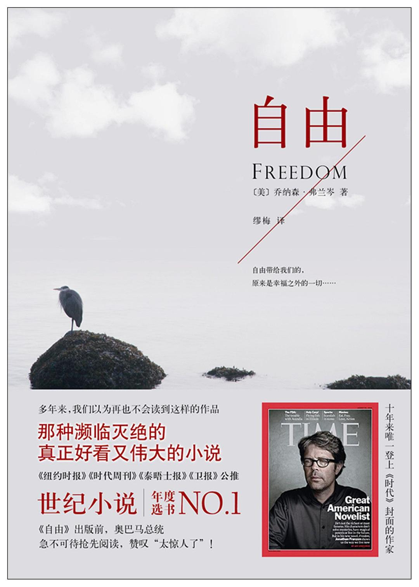
346. 《自由》 目录已核验
★多年来，我们以为再也不会读到这样的作品 ——那种濒临灭绝的真正好看又伟大的小说 ★《纽约时报》《时代周刊》《泰晤士报》《卫报》公推为“世纪之书” ★十年来唯一登上《时代》封面的作家，被加冕为“伟大的美国小说家” ★真正伟大的当代文学，正如人们借由狄更斯来了解十九世纪的英国，后人也可以通过《自由》来了解二十一世纪初期的美国。 ★《自由》出版前，奥巴马总统急不可待抢先阅读，赞叹“太惊人了”！ ★美国传媒女王奥普拉：“一部惊人的大师级杰作！” ★顶级媒体“年度选书” 《纽约时报》“年度十大好书”第1名 《时代周刊》“年度小说”第1名 史蒂芬·金“年度十大选书” “奥普拉读书俱乐部”选书 《大西洋月刊》“年度图书” 《经济学人》选书 英国《卫报》“年度十大好书” 英国《电讯报》年度小说 英国《泰晤士报》选书 《 自由 》讲述了一个美国中产阶级家庭在二十一世... (展开全部)

347. 《猛虎细嗅蔷薇》 目录已核验
我心有猛虎在细嗅蔷薇。 有的时候，看电影，为的是报仇；有的时候，看电影，是接受馈赠。 随书赠送电影索引小手册：“与韩松落一起看电影”，收录了为了报仇看电影1和2中提到的所有电影与电视剧，约八百部电影。 本书是畅销书《为了报仇看电影》的续集，却比前传的内容更丰富更有质地。本书分为六辑，共93篇文章：“红粉与黑水潭”、“回不到水的水”、“漾开”、“又冷，又暖，又洁净”、“黄色黑条练功服”、“桥上的爱情”。 王佳芝放跑了易先生，坐在人力车上，望着车头的风车出了神，那一刹那，我懂了；黑色大丽花案发，中年妇女跑到警局去，热情地承认自己是凶手，那一刹那，我懂了；漆黑的电影院里，众人之间，我仿佛看到剧中人突然转向我，定定地望着我，单只为我说出那一句台词。 有时候，看电影，是接受馈赠。因为懂得，所以成为一种馈赠，而且，是在众目睽睽之下，接受最隐秘的馈赠。或许它同时赠... (展开全部)

348. 《门萨的娼妓》 目录已核验
作为当今世界独树一帜的喜剧电影大师，伍迪・艾伦的幽默天赋是与生俱来的。他15岁就开始为报纸写专栏，有一段时间还自编自演“单口相声”（Stand up comedian），此后数十年至今，他挥霍着自己的幽默气质，编笑话和搞笑故事，写散文、小说和剧本（作品曾入选1989年由伊夫林・豪主编的《犹太美国短篇小说选》），拍电影更是让他功成名就。 伍迪・艾伦式幽默带有明显的纽约知识分子风格，他以荒诞不经、插科打诨的方式与这个世界开玩笑：颠覆传统价值，戏仿经典文本，各种时髦的学院派理论与方法更是被挖苦得入木三分、尖刻不留余地。他似乎总与知识分子作对，然而那些神经质的、自私自恋又敏感多疑的可笑形象背后，分明有着自我的身影――伍迪分身有术，他从不忘记拔光羽毛，幽自己一默。这是他的睿智所在，自以为是的法国人也因此称他为美国电影界惟一的知识分子。 本书结集自伍迪・艾伦发表... (展开全部)

349. 《佛教常识答问》 目录已核验
赵朴初先生生前曾任佛教协会的会长，他从四十多年前就开始写这样一部深入浅出的著作。本书对于佛教的源流、佛学的基本内容和态度都作了详细的表述，采用答问的形式，更附以二百余幅精美的彩色图片，把深邃的佛理形象生动地表达了出来。
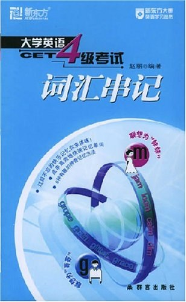
350. 《大学英语4级考试词汇串记》 目录已核验
《新东方•大学英语四级考试词汇串记》第一部分重点介绍了记忆单词的六种方法：口诀记忆法、词根词缀记忆法、谐音记忆法、含义联想记忆法、形近对照记忆法和故事联想记忆法。第二部分的“四级词汇记忆法综合讲解”中结合历年真题和模拟题给出了每个单词的记忆方法。《新东方•大学英语四级考试词汇串记》第三部分对1996年6月至2005年6月的大学英语四级考试真题中“词汇”部分的全部词汇题目进行了分析讲解，以供考生专项练习或考前热身，旨在帮助考生在记住四级词汇的同时，熟悉考试题型，掌握解题思路，并通过对真题的练习和解析，巩固所记单词，找到不足之处，加强针对性训练，达到事半功倍的效果。

351. 《黑夜飞行》 目录已核验
这是苗炜的第二本小说集，包括《警察与外星人》《黑夜飞行》《你知道的太多了》《幸福大酒店》《星期天早上的远足》五篇中短篇小说。 苗炜的小说轻灵、干净，智性，没有任何阅读的累赘。他用戏剧化的故事讲述都市人的孤独与私密的梦想。 如《警察与外星人》，两个偶然交集的普通人，一个坚持心里的秘密与守望，一个渴望生活上的变化，寻求另一种可能，到头来，他们都对生活的另一种可能产生幻灭，只能有的，不过是你我现在正在进行着的生活。《你知道的太多了》，讯息日益繁杂，人心日益浮躁。利益驱动下发生的一场闹剧，俱乐部知识竞赛成为各自的作秀。作者独特的文学视角，别出机杼，趣味独特，引发读者对人心的自省。而《黑夜飞行》给我们带来的是孤独的人自我修复，自我拯救的挣扎……

352. 《中央公园西路》 目录已核验
本书是伍迪·艾伦二○○三年出版的戏剧作品集，收入《滨河大道》、《老塞布鲁克镇》和《中央公园西路》三部作品。这三个围绕婚姻出轨现象而展开的故事，笔法轻松幽默，极富洞察力，有极强的可读性。剧中人物是典型的纽约人，他们开始看上去单纯无辜，随后却会遇上出乎意料的麻烦，或因卷入丑闻而陷入窘境。作品延续了伍迪·艾伦恒久的创作主题：主人公不断为自己找理由，掩盖自己的所作所为，而后不可避免地陷入不忠和骗局。所有戏剧元素，都借助伍迪·艾伦式即兴而精炼的对话巧妙表现出来，让人在忍俊不禁的同时陷入深思。

353. 《为了报仇看电影》 目录已核验
电影是真实的虚构 生活是虚构的真实 现实中无法兑现的诺言，无法实现的梦 让我们一起去电影里找寻结果 本书由韩松落的电影随笔结集而成。 所谓“电影随笔”，是介于影评和生活随笔及时评之间的边缘文体，以电影为素材和话题的因由，着重考察我们的生活在影像中的映射，以及影像对我们生活的渗透。 本书共分为四辑。《人生的质感》，借助电影观察人生；《熊不是泰迪熊》，借助电影窥探时事；《滋养灵魂的风景》，探查与电影直接有关的人与事；《私房话》，表达个人与电影的亲密接触。
354. 《假装的艺术》 目录已核验
《假装的艺术:一本让你看起来无所不知的书》简介：在信息疯狂传播的今天，傻瓜才会花工夫去研究嘻哈文化，谁是新锐导演、哪部独立电影最近独领风骚关我屁事呢？但是，无奈的是，我们活在一个没谈资就会被圈子抛弃的时代，社交、把妹、接近上流人物无处不存在要与人交流话题的需要，在经过一百多种选择的思考之后，还是选择最经济实惠的“假装”吧，这本《假装的艺术:一本让你看起来无所不知的书》教给你的就是如何“装”出你的范儿来，作者无所不知的经历以及辛辣嘲讽的个性教你在读书、电影、古典音乐、建筑、美酒等常用装B话题中自由穿梭，在掌握了这些常人不容易知晓的知识后，还请根据需要研究出一套和你相匹配的微笑、耸肩、皱眉、嘲讽等表情，这样，才能将“假装的艺术”发挥到淋漓尽致的境界！ 点击链接进入英文版： The Art of Faking It: Sounding Smart With... (展开全部)

355. 《职场动物进化手册》 目录已核验
《职场动物进货手册》里到处乱窜的是一群似曾相识的“动物”。在他们身上我们看到了自己的影子，同事的影子，主管的影子，老板的影子。正是通过他们，作者创造了一种全新的“职场性格模型”。 希望读者可以利用这个模型，来认清自己、也看清别人在职场中的位置和角色，从而练就一副火眼金睛。这本书想给你的，不是一面易碎的镜子，而是一把钥匙，去开启那扇曾经紧闭的职业成功之门；或者说是一根绳索，帮你从职场的泥潭中脱身出来。

356. 《青春》 目录已核验
他年少、他敢言、他幽默、他堅持－－ 他是《時代》雜誌2010全球年度百大影響人物 他的博客（部落格）每日20萬人次瀏覽，開站至今突破4億 他17歲出版第一本書，創下200萬冊銷售記錄 他是個戰績出色的職業賽車手 他是韓寒，是當今世界青春的代名詞。 《時代》雜誌：「韓寒是中國文壇壞小子。」 韓寒的文字，夠壞。 壞在道出平凡百姓的支吾難言，不假思索、真情實意； 壞在戳破道貌岸然者的虛情假意，一針見血、酣暢淋漓。 韓寒改變了文藝的腔調， 使其具有廣大的庶民性與高度的感染力， 口吻幽默、思路清晰、論述淺顯又犀利。 本書還原韓寒的發言、一字不刪，收錄八年來七十篇最具代表性文章： ◆ 青春韓寒 本該在心中的熱血，它塗在地上。──摘自〈青春〉 作為80後（1980年之後出生）的一位率性敢言的年輕人，韓寒保有真誠，娓娓道出疼惜同輩年輕人的心，大膽說出「不要把上一代與... (展开全部)

357. 《玻璃屋顶》 目录已核验
《玻璃屋顶》收集作者1999年以后在网络上写的一些随笔，包括《把人集合起来》、《好人常受苦》、《不可理喻》、《我为什么喜欢猫》、《一个人的示威》、《她爬上了屋顶》等篇。

358. 《流浪集》 目录已核验
未能一日寡过 恨不十年流浪 舒式浪游散文的集大成之作 有了流浪心念，那么对于这个世界，不多取也不多予。清风明月，时在襟怀，常得遭逢，不必一次全收也。 较台版超值新增6篇文章，并有舒哥亲笔签名题字书签相赠，上书：世道再难，也要呼吸顺畅。舒国治

359. 《沧浪之水》 目录已核验
作者以娓娓而谈的文笔和行云流水般的故事，写出医学研究生池大为空怀壮志、无职无权的苦，时来运转、有名有利的难；在真切地展示他的人生旅程的同时，也把困扰他的人生难题一一解开。
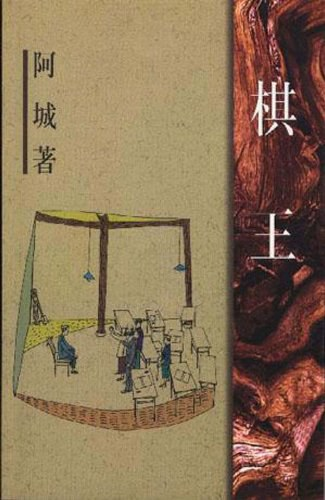
360. 《棋王》 目录已核验
在处女作《棋王》中，阿城表现出自己的哲学：“普遍认为很苦的知青生活，在生活水准低下的贫民阶层看来，也许是物质上升了一级呢！另外就是普通人的‘英雄’行为常常是历史的缩影。那些普通人在一种被迫的情况下，焕发出一定的光彩。之后，普通人又复归为普通人，并且常常被自己有过的行为所惊吓，因此，从个人来说，常常是从零开始，复归为零，而历史由此便进一步。” 阿城笔下著名的"棋王"王一生是近世以来罕见的一个深刻体现了道家文化特征的人物形象。王一生深得老子的阴柔之气。他的性格是坚忍而沉着的。《棋王》表面上写棋，实质上则具有多层次的象征意义，表现着他对中国文化传统的历史评价和对中国文化进步的展望。

361. 《大地孤独闪光》 目录已核验
《南方周末》记者文丛之一，作者李海鹏。本书为作者特稿作品精选合集，其中多篇作品如《举重冠军之死》、《无情戒毒术》等追踪社会重大热点问题，深入采访剖析，在《南方周末》发表后，引起巨大反响。
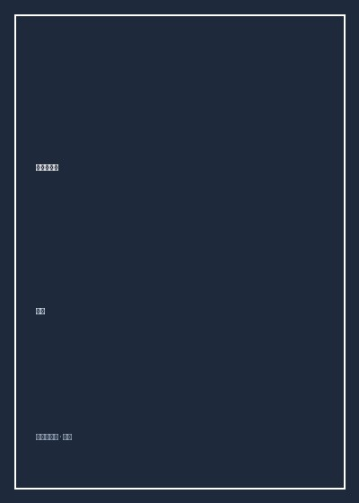
362. 《我爱问连岳Ⅲ》 目录已核验
《我爱问连岳Ⅲ》是连岳的一部极具启发性的非虚构著作，由作家出版社出版。全书立足真实的实践经验与敏锐的专业观察，深入探讨了该领域的核心命题与现实规律。
363. 《我爱问连岳Ⅳ》 目录已核验
《我爱问连岳Ⅳ》是连岳的一部极具启发性的非虚构著作，由作家出版社出版。全书立足真实的实践经验与敏锐的专业观察，深入探讨了该领域的核心命题与现实规律。

364. 《吃的真相2》 目录已核验
啤酒不能配海鲜？转基因食物能不能吃？我们到底要不要补钙？胶原蛋白的美容功效到底如何？一天吃上几克螺旋藻能否治病强身？ 食品营养专家、最具人气科普明星云无心延续了畅销书《吃的真相》轻松幽默却不失科学严谨的文风，运用科研结论和权威机构的报告，对近年来热炒的各种养生保健和时尚饮食话题，如转基因食品的好坏、养生大师的真假、绿豆的功用、减肥与美容产品的效果等进行了科学剖析；澄清了广泛流行的错误流言，戳穿了别有用心的炒作与虚假宣传，客观分析了存在争议的饮食观点，并别出心裁地介绍了几种饮食的实验与创新。 作者秉持一贯告诉大众如何了解食品的益处和害处的诚恳态度和追求科学依据的理性原则，让读者理性判断与自由选择。吃得聪明、咽得放心，科学养生、明智保健。

365. 《俗话说》 目录已核验
这是一本神秘又低调的小破书。 可神秘可神秘了。 也可低调可低调了。 到底有多神秘呢？ 到底有多低调呢？ 你猜……

366. 《蔡康永的說話之道》 目录已核验
《蔡康永的說話之道》是蔡康永的一部极具启发性的非虚构著作，由如何出版社有限公司出版。全书立足真实的实践经验与敏锐的专业观察，深入探讨了该领域的核心命题与现实规律。

367. 《开动脑筋》 目录已核验
《开动脑筋》包括：开动脑筋，不落伍于时代开动脑筋，发现生存价值开动脑筋，战胜困难开动脑筋，使人生快乐起来在合理与不合理间生存。

368. 《改变人心的技巧》 目录已核验
《改变人心的技巧》是多湖辉的一部极具启发性的非虚构著作，由2002-10出版。全书立足真实的实践经验与敏锐的专业观察，深入探讨了该领域的核心命题与现实规律。

369. 《当彩色的声音尝起来是甜的》 目录已核验
《当彩色的声音尝起来是甜的》是科学松鼠会 编著的一部极具启发性的非虚构著作，由上海三联书店出版。全书立足真实的实践经验与敏锐的专业观察，深入探讨了该领域的核心命题与现实规律。

370. 《沉默的大多数》 目录已核验
这本杂文随笔集包括思想文化方面的文章，涉及知识分子的处境及思考，社会道德伦理，文化论争，国学与新儒家，民族主义等问题；包括从日常生活中发掘出来的各种真知灼见，涉及科学与邪道，女权主义等；包括对社会科学研究的评论，涉及性问题，生育问题，同性恋问题，社会研究的伦理问题和方法问题等；包括创作谈和文论，如写作的动机，作者的师承，作者对小说艺术的看法，作者对文体格调的看法，对影视的看法等；包括少量的书评，其中既有对文学经典的评论，也有对当代作家作品的一些看法；最后，还包括一些域外生活的杂感以及对某些社会现象的评点。

371. 《与未来同行》 目录已核验
本书汇集了近八年来作者所撰写的25篇与人才成长、科技创新、企业文化和青少年教育等相关的文章。它们中的每一篇都是用写作的方式关心中国科技与教育事业，关注中国青年学生成长历程的缩影，它们中的每一篇也都凝聚着对中国科技、文化与教育事业的美好未来的无限憧憬。 中国的青年，希望这本书能伴你同行，帮助你用坚定的步伐和无限的激情走向属于你自己的美好未来。 中国的企业，希望这本书能为你带来灵感和信心，帮助你的企业在国际化的大舞台上从容应对，决胜千里。 中国的高校，希望这本书为你提供有益的经验和建议，帮助你在建设世界一流学府的道路上稳步前行。 中国的家长，希望这本书给你带来启迪和智慧，帮助你培养出21世纪所需要的一流人才。 本书以“未来”为主线，划分为三个主题。 迎接未来——给青年学生的信：这一部分收录的是我自2000年以来写给青年学生的七封... (展开全部)
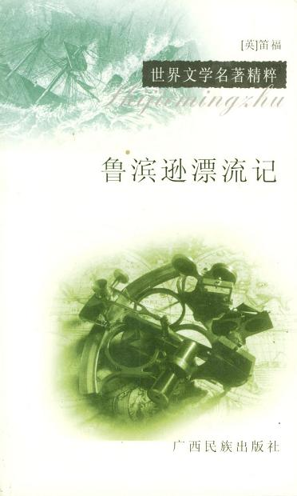
372. 《鲁滨逊漂流记》 目录已核验
《鲁滨逊飘流记》是18世纪英国作家达尼尔·笛福的代表作品，也是一部具有广泛的世界性影响的作品。 小说以1704年一名苏格兰水手亚历山大·薛里基洛克航海遇险，飘流在一个荒岛上，并且单独留居了四年才被救回了故事作为素材，加工而成的。小说的主人公鲁滨逊是一青年，性喜冒险。他不顾父亲的劝阻，决心要过海上生活。开头号几次航海以商颇为顺利，但有一次为土耳其海盗所俘，幸而不久脱脱逃，至巴西经营蔗田和糖厂。四年后，因获暴利又往非洲反卖黑 八股中于大海中遇险，船上全部船员葬身鱼腹，仅鲁滨逊一个脱难，飘流至一荒岛之上。从此，他孤独一个在岛羊、造船等。后来。他救了一个野人俘虏，取名礼拜五。鲁滨逊在岛上生活了二十八年，最后一艘英国船航经荒岛，他才有机会搭船回国。

373. 《水浒传（全二册）》 目录已核验
《水浒传》是我国第一部以农民起义为题材的长篇章回小说，是我国文学史上一座巍然屹立的丰碑，也是世界文学宝库中一颗光彩夺目的明珠。数百年来，它一直深受我国人民的喜爱，并被译为多种文字，成为我国流传最为广泛的古代长篇小说之一。 《水浒传》具体而生动地描写了以宋江为首的农民起义发生、发展直至失财的整个过程，揭露了封建社会的黑暗、腐朽和统治阶级的种种罪恶，热情歌颂了起义英雄的反抗精神和正义行动，塑造了一大批梁山好汉的光辉形象，形象地揭示了封建社会“官逼民反”的客观真理和农民起义失败的内在原因。

374. 《三国演义（全二册）》 目录已核验
《三国演义》又名《三国志演义》、《三国志通俗演义》，是我国小说史上最著名最杰出的长篇章回体历史小说。 《三国演义》的作者是元末明初人罗贯中，由毛纶，毛宗岗父子批改。在其成书前，“三国故事”已经历了数百年的历史发展过程。在唐代，三国故事已广为流传，连儿童都很熟悉。随着市民文艺的发展，宋代的“说话”艺人，已有专门说三国故事的，当时称为“说三分”。元代出现的《三国志平话》，实际上是从说书人使用的本子，虽较简略粗糙，但已初肯《三国演义》的规模。罗贯中在群众传说和民间艺人创作的基础上，又依据陈寿《三国志》及裴松之注中所征引的资料（还包括《世说新语》及注中的资料），经过巨大的创作劳动，写在了规模宏伟的巨著——《三国志通俗演义》全书24卷，240回。后来经过毛纶，毛宗岗父子批改，形成我们现在所见的《三国演义》120回版 由于人文出版社选取的毛批版本和... (展开全部)

375. 《我的梦想在燃烧》 目录已核验
少年余杰的横空出世，在整个二十世纪恐怕只有五四时期的胡适先生，台湾六十年代的李敖庶几可以比拟。短短几年，余杰给闷已久的中国思想界带来了一股清新的空气他的文字清新尖锐、甚至不无稚嫩，但却说出了我们这个时代的真相。 《我的梦想在燃烧》是余杰沉默两年后公开对今日中国社会新的批判和新的认识，是对中国社会近几年的焦点问题的精辟论断。该书是最能体现余杰的个性和优势、也是他最拿手的评论性杂文合集，思想尖锐，评论深刻。收集了这几年来余杰对于国内的政治、文化、教育、传统以及文学等方面的认识、反思与评论，沿袭了他一贯的角度独特，一针见血的风格。

376. 《文化苦旅》 目录已核验
《文化苦旅》是余秋雨的第一部散文合集，所收作品主要包括两部分，一部分是历史、文化散文，散点论述，探寻文化；另一部分是回忆散文。
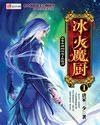
377. 《冰火魔厨》 目录已核验
《冰火魔厨》是唐家三少的一部极具启发性的非虚构著作，由汕头大学出版社出版。全书立足真实的实践经验与敏锐的专业观察，深入探讨了该领域的核心命题与现实规律。

378. 《梦里花落知多少》 目录已核验
《梦里花落知多少》是郭敬明出版第二部小说，此作一改《幻城》的奇幻风格，从天上回到人间。小说以北京、上海等大都市为背景，讲述了几个年青人的爱情故事，情节曲折，语言幽默生动。主人公是一些即将走出校门的大学生，在成长的过程中，友情、爱情都在经历着蜕变，那种成长的快乐和忧伤很能引起年轻读者的共鸣。

379. 《以诈止诈》 目录已核验
刘墉先生的“诈系列”作品一直深受广大青少年的喜爱，《以诈止诈》是“诈系列”的最新作品。作品更辛辣，更为深刻地揭露了人性的本质。表达了刘墉先生"以战止战，以毒攻毒，以诈止诈"的思想，以及"愿战争带来的是和平，疫苗带来的是健康，诈带来的是坦诚与善良"的愿望。 全书共分十五章。每章聚集一个主题。刘墉先生在书中全面地阐述了这样的概念："我不是教你诈，是教你以诈止诈，免得你人在诈中不自知。前面被蒙，后面被骗，还以为遇上贵人，成了帮凶！"

380. 《跨一步就成功》 目录已核验
培养了一双成功儿女的美籍华人刘墉，在总结培育子女宝贵经验写成的《靠自己去成功》基础上，又与长江文艺出版社合作，推出了操作性和实用性很强的新书《跨一步，就成功》。 《跨一步，就成功》是刘墉在体现现代教育理念的基础上，进一步突出实用方法的新书。刘墉以交谈的方式，与孩子探讨为人处世、习惯养成、学习记忆、学习写作、体育运动等方面的问题。比如在谈到记忆时，他介绍了“图像法”“潜意识法”“侵润发”“节奏法”等，十分具体，具有很强的操作性。刘墉用他成功的经验告诉读者，学习，记忆以及好习惯的养成，并不困难，关键是要找到窍门和方法，这些窍门和方法的发掘，能使读者从平凡中发现自己的“天才点”，如果加以发挥，就一定能够成功。 《跨一步，就成功》告诉读者，成功是可以复制的，每一个人的成功，关键是能否跨出找寻捷径的那一步。

381. 《超越自己·创造自己·肯定自己》 目录已核验
《超越自己·创造自己·肯定自己》是刘墉的一部极具启发性的非虚构著作，由重庆出版社出版。全书立足真实的实践经验与敏锐的专业观察，深入探讨了该领域的核心命题与现实规律。

382. 《靠自己去成功》 目录已核验
《靠自己去成功》是刘墉的一部极具启发性的非虚构著作，由长江文艺出版社出版。全书立足真实的实践经验与敏锐的专业观察，深入探讨了该领域的核心命题与现实规律。

383. 《匠人手记》 目录已核验
《匠人手记》是张俊的一部极具启发性的非虚构著作，由北京航空航天大学出版社出版。全书立足真实的实践经验与敏锐的专业观察，深入探讨了该领域的核心命题与现实规律。

384. 《求职，从大一开始》 目录已核验
1．读大学，究竟读什么？大学期间不能满足于学习一门专业技能，而应该注重塑造批判性、创造性的思维能力，这种思维能力是毕业以后具有可持续发展能力的基础。可以通过专业学习、课外阅读、生活中的思考等多个途径来塑造这一能力。 2．大学是用来读的，不是用来玩的。大学四年是一生中最宝贵的读书时光，如果大学期间把主要精力放在了学习以外的地方，等到毕业后找不到工作了，就没有资格抱怨读大学没有用，因为他不是“读”大学，而是“玩”大学。 3．大学生应该如何塑造核心竞争力？应该把自己培养成通才还是专才？又该如何培养？如何通过提高不可替代性来提升求职竞争力？在核心竞争力原则的指导下，如何用最有效的方式撰写简历、应对面试？ 4．大学生就业难的原因是什么？根据一条一条的原因寻找相对应的对策，大学生又该从哪些方面入手来破解就业的难题？ 5．如何看待大学生创业？大学生应该具备怎样的一... (展开全部)
385. 《我爱问连岳》 目录已核验
《我爱问连岳》是连岳的一部极具启发性的非虚构著作，由作家出版社出版。全书立足真实的实践经验与敏锐的专业观察，深入探讨了该领域的核心命题与现实规律。

386. 《历史是个什么玩意儿1》 目录已核验
本书是由“史上最牛历史老师”袁腾飞重新诠释中国古代史，将那些原本枯燥乏味的历史段落变得趣味横生，将原本趣味横生的历史段落变得精彩绝伦。在如同听相声般的快乐中汲取庞大的历史知识信息量，一本让人彻底赞成“读史可以明智”这句话的书，一版诲人不倦而又逗人不倦的最精彩历史文本。 说史条理分明，见解独到，旁征博引，焦点集中，信息量大，一部史书该有的优点全都具备。文风新颖特别，措辞犀利，锋芒毕露，一针见血，幽默风趣。除了文字内容之外，还插入了大量的彩色图片，采用四色印刷，集趣味性、知识性和可读性于一身。

387. 《历史是个什么玩意儿4》 目录已核验
本书是“百家讲坛最受欢迎主讲人”袁腾飞继中国史之后，又一重新诠释的世界历史。嬉笑怒骂的历史段落，将那些原本枯燥乏味的教科书内容变得趣味横生、精彩绝伦。本书是袁腾飞讲历史系列之《世界史》下部。从社会主义阵营的建立到近年来吸引眼球的一战史、二战史、中东战争，袁腾飞依旧用他一针见血的观点，幽默风趣的语言为我们呈现了更为丰富、生动的历史画面。“学史使人明智”，相信在读完袁腾飞说世界史全册后，你一定会在快乐的阅读中，对世界历史有更为全新的认识。

388. 《野火集》 目录已核验
《野火集》是龙应台的一部极具启发性的非虚构著作，由文汇出版社出版。全书立足真实的实践经验与敏锐的专业观察，深入探讨了该领域的核心命题与现实规律。
主理人心愿精选403 本
从主理人豆瓣想读（Wishlist）书单中严格筛选的 403 本高质量非虚构杰作，涵盖城市建筑、底层纪实、制度社会学、历史文明、心理认知与技术思考。

251. 《中国古代简史》 目录已核验
北京大学历史系主任张帆教授代表作，以精炼清晰的线索统摄三千年中国古代政治制度、社会变动与王朝兴衰脉络。

252. 《中国古典园林史》 目录已核验
清华大学周维权教授毕生力作，中国风景园林学界公认最权威经典通史，全景再现三千年造园思想与空间艺术演进。

253. 《好的英语 : 反套路英语写作》 目录已核验
兰登书屋终身审校总监本杰明·德雷尔执笔，以幽默犀利的行业内幕打破教条，传授真正清晰优雅的现代英文写作法则。

254. 《助人技术（第5版）》 目录已核验
国际心理咨询泰斗希尔教授经典，系统阐释‘探索—领悟—行动’三阶段模型，助人者必读的基础实操圣经。

255. 《悲喜同源 : 陈其钢自述》 目录已核验
享誉国际的当代音乐大师、北京奥运会音乐总监陈其钢自传，坦荡记录跨文化艺术探索、生命大悲大喜与躬耕沉思。

256. 《安定此心》 目录已核验
北京安定医院资深精神科主任医师姜涛30余年临床实录，深度剖析抑郁、双相与精神创伤，为现代人点亮心灵自愈之光。

257. 《基层中国的运行逻辑》 目录已核验
中国人民大学经济学教授聂辉华力作，运用制度经济学工具刀锋般剖析条块结合、基层首长权力清单、公务员激励与地方债务的真实运转法则。

258. 《当代中国政府与政治 (第二版)》 目录已核验
中国当代政治学泰斗联袂编著的权威高校经典教材，全景透视党政体制、国家权力机构与央地关系的运转机制。

259. 《为权利而斗争》 目录已核验
世界法学泰斗耶林旷世名作，以雷霆万钧的语言宣告：法的目标是和平，而达到和平的手段是永不停歇的斗争！

260. 《失落的卫星 : 深入中亚大陆的旅程》 目录已核验
当代非虚构旅行文学标杆之作，刘子超历时九年数次深入中亚腹地，用冷静深邃的文字勾勒欧亚大陆核心的迷茫与苍凉。

261. 《发现的乐趣 : 费曼演讲、访谈集》 目录已核验
诺贝尔物理学奖得主理查德·费曼最真挚经典的演讲访谈精选，展现对世界永不磨灭的好奇心与绝不自欺的科学态度。

262. 《中国古典园林分析》 目录已核验
中国科学院院士、建筑泰斗彭一刚经典巨作，以数百幅精美手绘钢笔画解析古典园林空间序列、视线组织与造景密码。

263. 《东京本屋》 目录已核验
日籍华语作家吉井忍历时六年走访记录，以温润平实的笔触深度探访东京十家个性独立书店，寻觅都市心灵的避难所。

264. 《故事法则》 目录已核验
中国社会科学院民俗学专家施爱东力作，运用叙事学与民俗学解剖刀，彻底揭开古今中外经典故事流传不衰的结构密码。

265. 《君幸食 : 一场贯穿古今的中餐盛宴》 目录已核验
英国著名美食作家扶霞·邓洛普集大成之作，以三十年深入中国后厨的深情与博雅，全景绘制中国饮食文明的世界级画卷。

266. 《我看见的世界 : 李飞飞自传》 目录已核验
世界人工智能领军科学家李飞飞震撼自传，回顾从新泽西洗衣店打工少女到主导ImageNet点燃深度学习革命的传奇学术人生。

267. 《中年之路 : 人格的第二次成型》 目录已核验
荣格派心理学殿堂级大师霍利斯里程碑之作，揭开‘中年危机’的深层神经症本质，指引灵魂完成自性化与人格二次蜕变。

268. 《猫鱼》 目录已核验
国际影星、导演陈冲真诚自传回忆录，以文学名家般的洗练与诚实，打捞平江路家族记忆、好莱坞浮沉与斑驳岁月微光。

269. 《生活在低处》 目录已核验
继畅销名作《我在北京送快递》后胡安焉深度内省之作，以清醒克制的诚实，探讨普通人在时代低处安顿心灵与尊严的可能。

270. 《过渡劳动 : 平台经济下的外卖骑手》 目录已核验
中国社会科学院孙萍副研究员历时七年深入外卖田野的学术力作，深刻剖析算法霸权、时间折叠与骑手群体的生存图景。

271. 《隐谷路 : 一个精神分裂症家族的绝望与希望》 目录已核验
奥普拉读书俱乐部年度选书、美剧般震撼的非虚构医学史杰作，记录一个美国家庭12个孩子中6个患精神分裂症的苦难与人类基因密码的破译。

272. 《我不知道该说什么，关于死亡还是爱情》 目录已核验
诺贝尔文学奖得主阿列克谢耶维奇巅峰代表作，以数百名切尔诺贝利亲历者的真实口述，谱写人类核灾难面前最痛彻心扉的爱情与受难史诗。

273. 《身体由我 : 关于了不起的女性身体的一切》 目录已核验
德国知名妇产科女医生希拉·德利兹风靡全球的科普力作，打破千年羞耻禁忌，以科学与幽默重构女性对身体的掌控与爱。

274. 《透过地理看历史》 目录已核验
历史地理通俗读物标杆，李不白以三维地图视角解析山川形胜、关隘险要与水系格局如何终极决定中国三千年王朝兴衰。

275. 《我在上海开出租》 目录已核验
非虚构作家黑桃亲身兼职开出租车近千天的魔都夜行录，在方向盘与后视镜后冷眼观察繁华巨兽背后的世相百态与人间温凉。

276. 《脏活 : 必要工作的道德伤害》 目录已核验
当代调查报道杰作，深入监狱狱警、屠宰场工人、无人机操作员与采矿底层，揭开现代社会将不可或缺的肮脏残酷劳作外包遮蔽的道德共谋。

277. 《出界！艺术直岛》 目录已核验
直岛艺术奇迹幕后操盘手、地中美术馆首任馆长秋元雄史亲笔记录，讲述一座重金属污染荒岛如何蜕变为全球当代艺术圣地的传奇地方创生史诗。

278. 《饥饿的盛世 : 乾隆时代的得与失》 目录已核验
历史学者张宏杰警世力作，撕开‘康乾盛世’虚妄光环，深度解剖乾隆朝集权顶峰背后的制度败血症与近代落后挨打的宿命之因。

279. 《你干吗在乎别人怎么想？ : 充满好奇心的费曼》 目录已核验
理查德·费曼最深情真挚的自传续篇，记录与初恋阿琳至死不渝的凄美爱情，以及独立思考、绝不盲从世俗眼光的自由灵魂之声。

280. 《南京大屠杀 : 第二次世界大战中被遗忘的大浩劫》 目录已核验
华裔女作家张纯如以生命为代价写就的英文非虚构里程碑，彻底打破西方世界半个世纪的沉默，让三十万冤魂的历史昭告全球。

281. 《失败者的春秋》 目录已核验
知名历史作家刘勃代表作，以辛辣幽默的笔触撕开传统儒家美化滤镜，从‘失败者’与平民视角还原真实而残酷的春秋大变局。

282. 《中国书法通识》 目录已核验
北京大学美育名师方建勋通俗力作，以线条、结体与气韵三重视角，带普通读者无门槛读懂中国书法笔墨背后的生命呼吸与东方心性。

283. 《个人形成论 : 我的心理治疗观》 目录已核验
人本主义心理学一代宗师罗杰斯奠基名著，创立‘以人为中心疗法’，以无条件的积极关注与共情，指引迷茫灵魂成为真正的自己。

284. 《城市发展史 : 起源、演变和前景》 目录已核验
城市规划与文明史殿堂级丰碑之作，刘易斯·芒福德跨越五千年人类文明，深刻反思技术崇拜下大都市的兴衰与生态重生之路。

285. 《美国大城市的死与生（纪念版）》 目录已核验
现代城市规划领域最伟大的颠覆性经典，简·雅各布斯以一介女性公民之身单挑规划巨头，捍卫街道活力、人行道芭蕾与城市多样性。

286. 《中国古建筑二十讲》 目录已核验
清华大学古建筑泰斗楼庆西教授大家小书，二十堂生动通识课带读者看懂中国木构建筑的营造法则、斗栱密码与空间诗意。

287. 《向心城市 : 迈向未来的活力、宜居与和谐》 目录已核验
知名经济学家陆铭继《大国大城》后重磅新作，运用空间政治经济学实证数据，彻底击碎限制大城市发展的陈旧迷思，指明中国向心集聚的未来之路。

288. 《漫长的余生 : 一个北魏宫女和她的时代》 目录已核验
北京大学历史系教授罗新代表作，借由洛阳出土的一方九十六字残破墓志，以如椽巨笔复活一个卑微宫女经历四朝杀戮的壮烈生命史诗。

289. 《八次危机 : 中国的真实经验 1949-2009》 目录已核验
三农问题泰斗温铁军教授扛鼎之作，以扎实实证打破意识形态滤镜，全景解构新中国六十年八次周期性经济危机与乡村软着陆机制。

290. 《东晋门阀政治》 目录已核验
中国中古史学泰斗田余庆先生毕生登峰造极之作，以考据之严密、眼光之深邃，彻底解密东晋百年‘士族与皇权共治’的特殊政治形态。
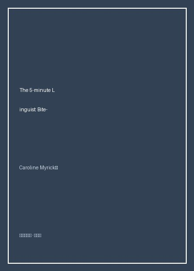
389. 《The 5-minute Linguist: Bite-sized Essays on Language and Languages》 目录已核验
《The 5-minute Linguist: Bite-sized Essays on Language and Languages》是Caroline Myrick、Walt Wolfram的一部极具启发性的非虚构著作，由Equinox; 3版出版。全书立足鲜活的时代议题与深度的社会学、人文或专业观察，展开了系统且深刻的理性探讨。

390. 《我的高职学生》 目录已核验
《我的高职学生》是郭菲的一部极具启发性的非虚构著作，由上海文化出版社出版。全书立足鲜活的时代议题与深度的社会学、人文或专业观察，展开了系统且深刻的理性探讨。
391. 《实用程序育儿法 : 宝宝耳语专家教你解决宝宝喂养、睡眠、情感、教育难题》 目录已核验
《实用程序育儿法》作者世界闻名的实战型育儿专家特蕾西·霍格(Tracy Hogg)以“宝宝耳语专家(Baby Whisperer)”享誉全球，她深入到数千名宝宝的家里解决宝宝和妈妈面临的日常难题，通过演讲、电台、电视台、信件、电子邮件以及住她的网站上发帖跟她交流、向她请教的妈妈们更是不计其数。由她亲自实景示范拍摄的“和宝宝说悄悄话(Thc Baby Whisperer)”DVD全球发行上千万张。她徂导从宝宝的角度考虑问题，要观察、尊重宝宝，和宝宝沟通一一即使宝宝还不会说话。在《实用程序育儿法》中，她集自己近30年的经验，详细解释了0～3岁宝宝的喂养、睡眠、情感，教育等各方面问题的有效解决方法。

392. 《平等悖论》 目录已核验
【内容简介】 启蒙运动以来，我们一直在追求平等的道路上努力：完善法治、发展科技、普及义务教育，各类平权运动也如火如荼地展开……然而，现实的不平等却愈演愈烈：全球最富有的1%人口拥有的财富，超过了相对贫困的95%人口的财富总和；高级领导层中女性往往占少数，日常生活中也依然 处处以成年男性为标准；公共教育带来机会平等的幻觉，优质教育资源实则高度集中在大城市与高等学府……传统的不平等被掩盖与转移，新的不平等层出不穷，我们甚至有理由怀疑，人类从未像今天这样不平等！ 本书即围绕这一悖论展开：为什么我们越是奉行平等理念，现实中平等却离我们越来越远？有没有可能我们的理念本身就存在问题？ 这是一份给所有关心平等者的邀请，作者将带领我们回到理论源头与思想史现场，从“自然-本性”“财产”“进步”“契约”四个方面，逐步拆穿那些看似理所应当的观念背后的矛盾与陷阱，寻找当今社... (展开全部)
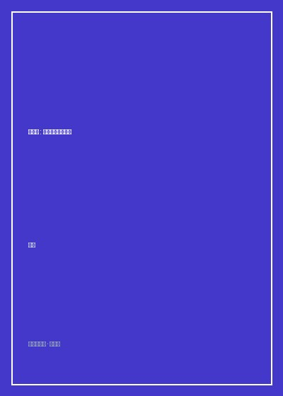
393. 《跑外卖 : 一个女骑手的世界》 目录已核验
《跑外卖 : 一个女骑手的世界》是王晚的一部极具启发性的非虚构著作，由广西师范大学出版社出版。全书立足鲜活的时代议题与深度的社会学、人文或专业观察，展开了系统且深刻的理性探讨。

394. 《我是寨子里长大的女孩》 目录已核验
我叫扎十一惹：扎是家族名字，十一是我出生的季节，惹是一种草。我生于1990年，花腰彝族，是在云南高寒山区寨子里长大的女孩。这本书记录我的成长，勾勒我至今34年的人生轨迹，也为我的女性亲人和乡邻们，留下一些生命记事。 早年村寨贫苦，生活难免坎坷窘迫，但也不缺天然的浪漫：花草、林木、阳光、小溪、山野、猫狗、牛马、小鸟、玩伴……流动的乡村风物，陪伴着童年岁月，织成让心灵柔软的旧梦。 我和我的妈妈、姐姐，我的女性亲戚和乡邻，两代彝族乡村女性的自主、情感、欲望、喜好等个人生活的面向，随着社会发展，呈现出滞后但蓬勃变化的景观。作为90年生人，我的成长、升学、就业、迁徙，伴随着国家城市化进程的加速，也伴随着乡村记忆和边地经验的失落。希望经由我的书写，为寨子旧时的人事风物保存一段记录。“在我的乡村里，很多事都是确定的，我知道牛不会跑，也知道太阳会按时落山，我会和牛一... (展开全部)
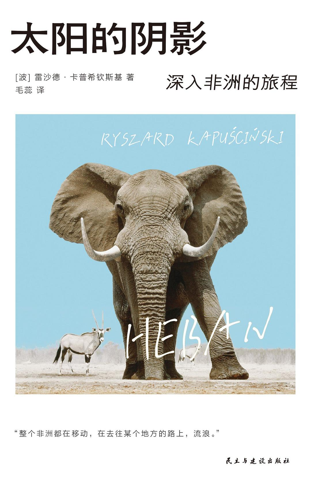
395. 《太阳的阴影 : 深入非洲的旅程》 目录已核验
1958年，雷沙德·卡普希钦斯基作为社会主义波兰首位也是唯一一位驻外记者抵达加纳——非洲解放浪潮的最前线。此后三十多年间，他在这片“大到难以描述的”大陆上游荡，往返于数十个国家和地区，尽一切力量出现在那些被遮蔽的地点——不论是流血冲突、军事政变的现场，还是丛林中挣扎在生存线上的村落——从各个前线发回直击报道，试图为世界呈现一个真实的非洲。 长久以来，他像在非洲“游牧”般深入到各阶层的人群中间：出入将军和部长们的宅邸，也造访叛军首领的指挥部；和牧民搭便车穿越撒哈拉，也去外人难以进入的部落做客。他与尼日利亚流民在棚户区比邻而居，在那里，这个星球上最贫苦的人们“没用一块砖、一根钢筋或一平方米玻璃就建造了一整个城市”。在政变中的桑给巴尔，“一颗悲伤的黑色星星”，四百年奴隶贸易的中转站，他触摸到黑色非洲最深且始终疼痛的一道伤疤。在达喀尔炎热的草原，他挨家挨户走... (展开全部)
396. 《以日为鉴 : 衰退时代生存指南》 目录已核验
通过对日本“失去的三十年”泡沫经济时代中，教育、卫生、医疗等各个产业的详尽分析，梳理日本多种社会问题形成的根源所在。 每一个问题都在结合中国读者最关心的话题： “考公务员是最合理的就业选择吗？” “医生未来的待遇会更好还是更差？” “生育率下降会影响教师就业吗？” “研究生扩招，报考人数下降，研究生还值得读吗？” 作为文化相近、轨迹相似的邻国，日本的社会发展史，是最能给国人带来思考和借鉴意义的发展史。 在经济寒冬、社会问题频发、年轻人陷入迷茫的今天，“职业选择”已经成了头等大事。 也许今天你可以求助“择校专家”，那么五年后呢？“师医公”还会是今天的“铁饭碗”吗？ 在这里，有十余年外资投行分析师经验的作者，将通过我们的近邻日本的各种社会问题和经历，为疑惑的你给出答案。
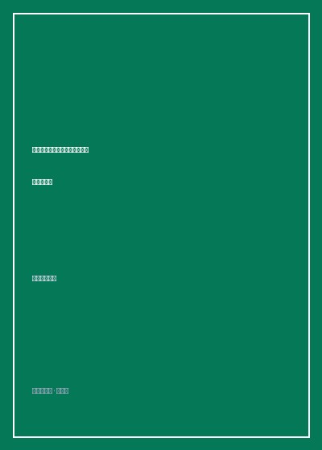
397. 《跨境支付及金融服务——通道、流程与系统》 目录已核验
《跨境支付及金融服务——通道、流程与系统》是胡丕辉、孙韬的一部极具启发性的非虚构著作，由电子工业出版社出版。全书立足鲜活的时代议题与深度的社会学、人文或专业观察，展开了系统且深刻的理性探讨。

398. 《雪崩》 目录已核验
《雪崩》是（美）斯蒂芬森的一部极具启发性的非虚构著作，由郭泽出版。全书立足鲜活的时代议题与深度的社会学、人文或专业观察，展开了系统且深刻的理性探讨。

399. 《可能的世界》 目录已核验
《可能的世界》是杨潇的一部极具启发性的非虚构著作，由上海文艺出版社出版。全书立足鲜活的时代议题与深度的社会学、人文或专业观察，展开了系统且深刻的理性探讨。
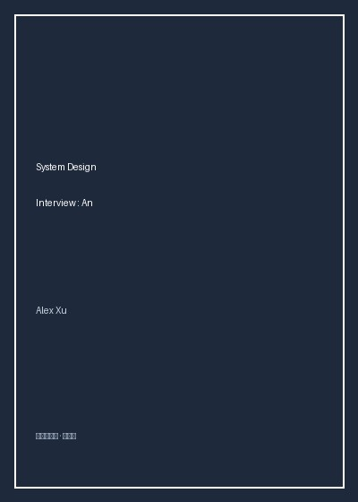
400. 《System Design Interview : An Insider's Guide》 目录已核验
《System Design Interview : An Insider's Guide》是Alex Xu的一部极具启发性的非虚构著作，由Independently published出版。全书立足鲜活的时代议题与深度的社会学、人文或专业观察，展开了系统且深刻的理性探讨。

401. 《二胎记》 目录已核验
一胎七岁的时候，上海作家毛利再次怀孕了，由此开启了一段身体、精神经受双重洗礼的二胎大作战。 养育一胎的经验可以用在二胎上面吗？ 二胎家庭通常的生活状态是怎样的？ 老大和老二之间存在“一碗水端平”吗？ …… 在本书中，毛利用她一贯的风趣笔调分享了自己的亲身经历。 “希望这本书能给你一些小小的参考、帮助。在那些回荡着婴儿哭声的夜晚，我希望你能打开书，然后哈哈一笑，心想，原来这个问题并不算什么，原来不是我一个人在经历这些。这就足够了。”——毛利
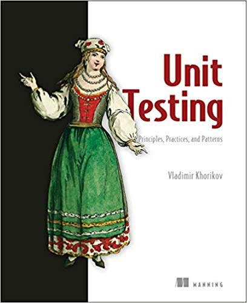
402. 《Unit Testing : Principles, Patterns and Practices》 目录已核验
Unit Testing: Principles, Practices and Patterns is a practical guide to modern unit testing best practices. Microsoft MVP Vladimir Khorikov takes you hands-on with examples of the ideal unit test and unit testing practices, building your skills step by step on a solid foundation. You’ll explore how to design and write tests that check the right aspects of your applications, de... (展开全部)
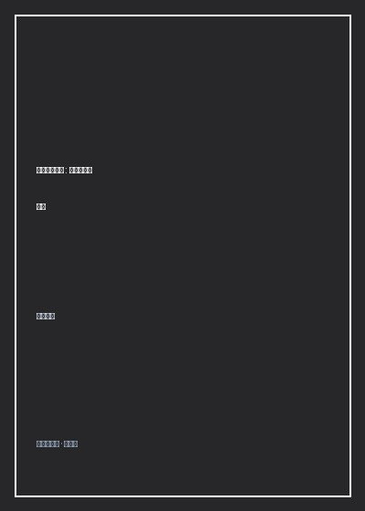
403. 《人间修炼指南 : 做清醒的聪明人》 目录已核验
《人间修炼指南 : 做清醒的聪明人》是半佛仙人的一部极具启发性的非虚构著作，由北京联合出版公司出版。全书立足鲜活的时代议题与深度的社会学、人文或专业观察，展开了系统且深刻的理性探讨。

404. 《变得厉害》 目录已核验
是作者的第二本诗集，收录的106首诗书写于2021-2024年。作者忠诚地描绘了初老的感受，“竟然是磅礴的”，平静地说出了精神的危机，“我编造自己的故事碎了我谁都不是”。这份宛如新生的迷茫，重新定位的需要，将广阔的历史和深邃的追问带进了私人的生命体验。本来这也是人们必将说起的年份，历史之重直压在每个人的背上，未来之谜让所有的心惶惶地共振。诗人穿越鼓噪的公共话题，回到“谁都不是”的一个人，重新辨认从一颗心到一颗星球的广阔时空、隐秘通道。生命的容量是惊人的，诗的跨度也是惊人的，宏大的时候从猴子写到AI，细小的时候只有余光中的一棵草。过去未来，唯有真的生命体验带来真的诗，诗的射程开拓自由的边界，照亮唯一的真实。

405. 《關於地球的運動1》 目录已核验
《關於地球的運動1》是魚豊的一部极具启发性的非虚构著作，由SCALY出版。全书立足鲜活的时代议题与深度的社会学、人文或专业观察，展开了系统且深刻的理性探讨。
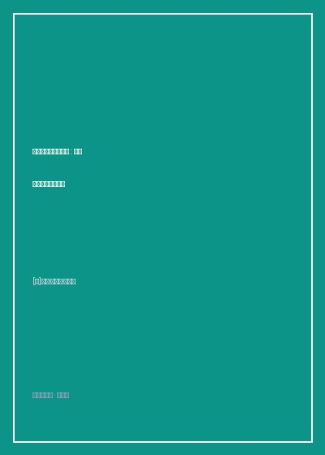
406. 《战斗吧，蝗虫博士！ : 昆虫学家的撒哈拉历险》 目录已核验
《战斗吧，蝗虫博士！ : 昆虫学家的撒哈拉历险》是[日]前野·乌鲁德·浩太郎的一部极具启发性的非虚构著作，由曹逸冰出版。全书立足鲜活的时代议题与深度的社会学、人文或专业观察，展开了系统且深刻的理性探讨。

407. 《沉默时，请大声朗读情书》 目录已核验
《沉默时，请大声朗读情书》是梁彦增的一部极具启发性的非虚构著作，由湖南文艺出版社出版。全书立足鲜活的时代议题与深度的社会学、人文或专业观察，展开了系统且深刻的理性探讨。
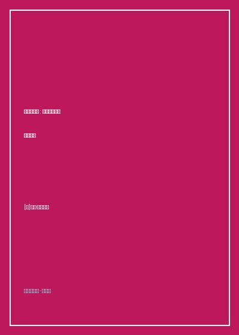
408. 《分类的艺术 : 动物学家如何认识世界》 目录已核验
《分类的艺术 : 动物学家如何认识世界》是[英]大卫·班布里奇的一部极具启发性的非虚构著作，由胡晗、邢路达、王维出版。全书立足鲜活的时代议题与深度的社会学、人文或专业观察，展开了系统且深刻的理性探讨。

409. 《梁漱溟 王实味 储安平 : 现代中国知识分子群》 目录已核验
《梁漱溟 王实味 储安平 : 现代中国知识分子群》是戴晴的一部极具启发性的非虚构著作，由江苏文艺出版社出版。全书立足鲜活的时代议题与深度的社会学、人文或专业观察，展开了系统且深刻的理性探讨。

410. 《诊疗椅上的谎言》 目录已核验
心理专家一向被认为是最善于观察人性的，谁能想到，他们也会容易上当受骗？当来访者满怀谎言走向诊疗椅，结局将大大出乎每个人的意料。诊疗过程中的对话亦真亦假，在移情与反移情、欺骗与背叛之间，暴露的却是真实的人性。 心理咨询师也是人，也会有普通人的情感与人格弱点，当他们陷入困境中时，该如何医治自己，又该如何负责任地引领来访者？ 欧文·亚隆在书中以精心设计、巧妙连贯的编剧手法，探讨心理治疗过程中的移情与反移情、幼年经验、心理治疗的原则、如何促成来访者最重要的改变、如何督导心理治疗师的训练等，堪称最实用的心理咨询临床实战书，情节构思精巧严密，机关连环，跌宕起伏，极富戏剧性。 《诊疗椅上的谎言》具有亚隆所有小说的共同点：强悍的专业背景，充满妙喻和幽默的文笔，以及意想不到的结局，而论辛辣讽刺，《诊疗椅上的谎言》在亚隆所有的小说中堪称为最。

411. 《问道江南西》 目录已核验
《问道江南西》是阿痴的一部极具启发性的非虚构著作，由广东人民出版社出版。全书立足鲜活的时代议题与深度的社会学、人文或专业观察，展开了系统且深刻的理性探讨。
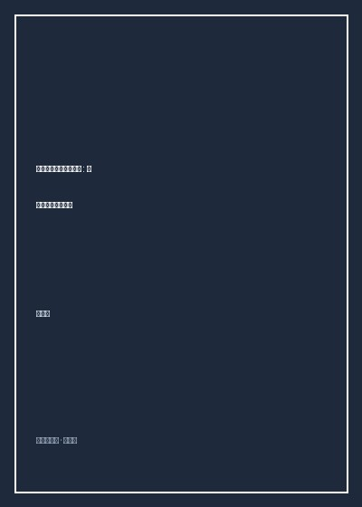
412. 《生活世界中的功利主义 : 哲学原理与历史实践》 目录已核验
《生活世界中的功利主义 : 哲学原理与历史实践》是巫怀宇的一部极具启发性的非虚构著作，由南京大学出版社出版。全书立足鲜活的时代议题与深度的社会学、人文或专业观察，展开了系统且深刻的理性探讨。
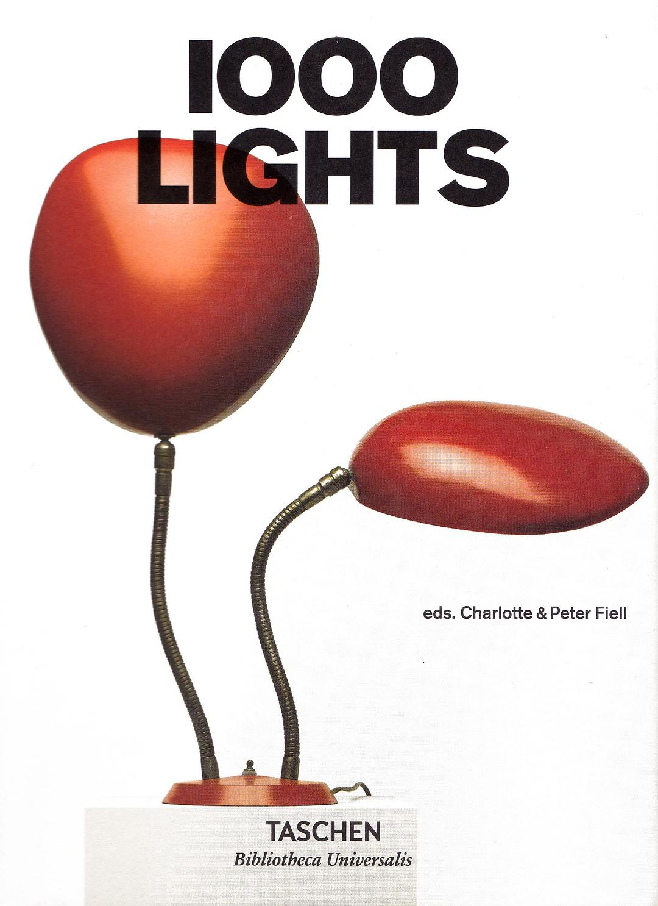
413. 《1000 Lights》 目录已核验
《1000 Lights》是Fiell, Charlotte &. Peter的一部极具启发性的非虚构著作，由Taschen出版。全书立足鲜活的时代议题与深度的社会学、人文或专业观察，展开了系统且深刻的理性探讨。

414. 《钻石广场》 目录已核验
《钻石广场》是[西] 梅尔赛·罗多雷达的一部极具启发性的非虚构著作，由王岑卉出版。全书立足鲜活的时代议题与深度的社会学、人文或专业观察，展开了系统且深刻的理性探讨。
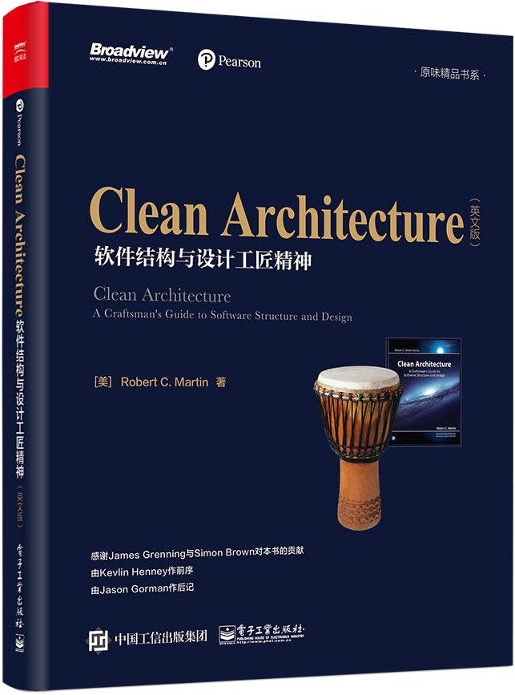
415. 《Clean Architecture：软件架构与设计匠艺（英文版）》 目录已核验
通过合理运用软件架构的通用法则，可以显著提升开发者在所有软件系统全生命周期内的生产力。如今，传奇软件匠师Robert C. Martin（Bob 大叔），携畅销书Clean Code 与The CleanCoder 所获巨大成功之威，深刻揭示这些法则并亲授运用之道。Martin 在《Clean Architecture：软件架构与设计匠艺（英文版）》中远不只是在为我们提供选项，他几乎是在将软件世界中横跨半个世纪的各种架构类型的设计经验倾囊相授，目的是让读者既能阅尽所有架构选型，又可通晓其如何决定成败。Bob 大叔也的确不负厚望，《Clean Architecture：软件架构与设计匠艺（英文版）》中充满了直接而有效的解决方案，以供读者应对所面临的真正挑战——那些或最终成就或彻底破坏你项目的挑战。
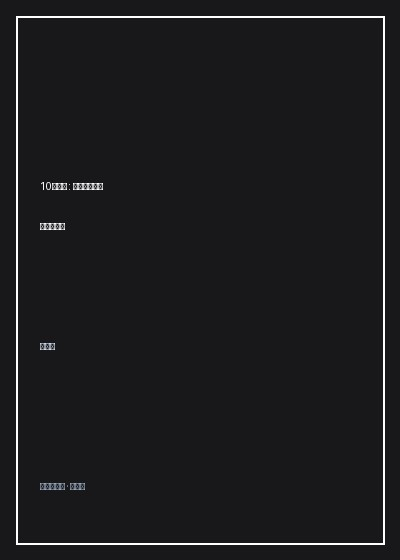
416. 《10种洞察 : 探索理所当然之外的世界》 目录已核验
《10种洞察 : 探索理所当然之外的世界》是王可越的一部极具启发性的非虚构著作，由人民邮电出版社出版。全书立足鲜活的时代议题与深度的社会学、人文或专业观察，展开了系统且深刻的理性探讨。
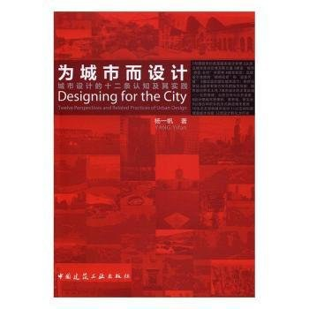
417. 《为城市而设计 : 城市设计的十二条认知及其实践》 目录已核验
城市与城市生活要素庞杂，要素的分类也没有一定之规，《为城市而设计(城市设计的十二条认知及其实践)》把笔者杨一帆认为最重要的内容归结于十二条认知，加上笔者考察研究的案例和亲身经历的规划设计实践，按照城市认知和城市设计工作的层次和逻辑，逐一叙述。本书内容涉及城市设计愿景、城市与区域、城乡关系、城市密度、秩序、特色、公共领域、城市演变、城市设计的实现等多领域的关键问题，而贯穿这十二条认知的是三个基本观点：城市整体认知的观点、要素广泛联系的观点和城市动态演进的观点。
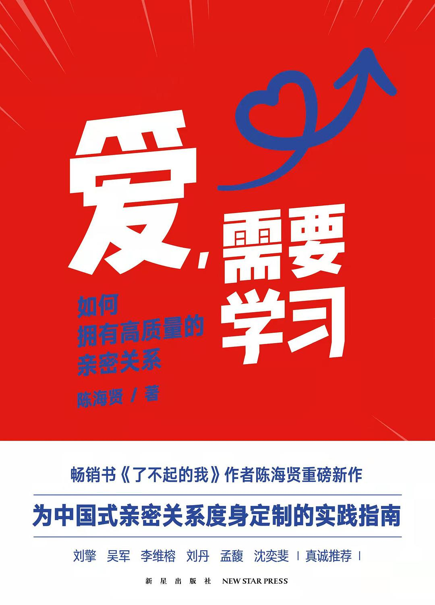
418. 《爱，需要学习 : 如何拥有高质量的亲密关系》 目录已核验
与伴侣争吵在所难免，如何将吵架转变为有效沟通，构建积极的沟通模式？ 有时我们渴望陪伴，有时又希望独处，如何与伴侣营造“既彼此独立，又温暖相依”的关系空间？ 孩子的到来让人欣喜，同时又会对家庭造成巨大冲击。如何完成二人世界到三人小家的平稳过渡？ 倘若我们最终无可避免地迎来 亲密关系的伤痛甚至终结，如何走出伤痛，又该以何种态度面对前任？ …… 人并不是天生就会爱，爱的能力需要学习。“爱，需要学习”，是一句口号。也是一个鲜明的主张。 《爱，需要学习》 是著名心理咨询师陈海贤的重磅新作，作者将自己十多年的心理咨询经验融入其中，详细解读了一段亲密关系旅程可能遇到 的困境，从不敢进入一段亲密关系，到进入亲密关系后可能会遇到的沟通难题、孩子教养挑战、原生家庭的影响、出轨与分离等。作者不止提出问题，更提出了实用的方法，帮助读者学习爱的方法。顺利解决亲密关系难题，找到... (展开全部)

419. 《贫穷的质感 : 王梆的英国观察》 目录已核验
《贫穷的质感 : 王梆的英国观察》是王梆的一部极具启发性的非虚构著作，由上海文艺出版社出版。全书立足鲜活的时代议题与深度的社会学、人文或专业观察，展开了系统且深刻的理性探讨。

420. 《始于极限 : 女性主义往复书简》 目录已核验
《始于极限 : 女性主义往复书简》是[日] 上野千鹤子、[日] 铃木凉美的一部极具启发性的非虚构著作，由曹逸冰出版。全书立足鲜活的时代议题与深度的社会学、人文或专业观察，展开了系统且深刻的理性探讨。

421. 《毫无意义 : 伍迪·艾伦自传》 目录已核验
《毫无意义 : 伍迪·艾伦自传》是[美] 伍迪·艾伦的一部极具启发性的非虚构著作，由btr出版。全书立足鲜活的时代议题与深度的社会学、人文或专业观察，展开了系统且深刻的理性探讨。

422. 《断头螺丝》 目录已核验
鲁迅文学奖得主何平，作家朱文颖、 邓安庆、孙一圣推荐； 群像速写式的短篇小说集，冷峻车厢里的交错人生、 夜间找猫的少年、聊天室中的父亲…… 收录豆瓣征文大赛获奖作《成年孤儿》。 🔩🔩🔩🔩🔩 ❊编辑推荐 “在这场裹挟着绿植与人的台风里…… 猫无疑找到了风平浪静……的台风眼。” 16个短篇组成的小说集，展现生活的多种切片。难辨虚实的事物在空气里增殖，关系，情绪…… 护封与内封采用割裂的书名设计。灰纸印银的装帧指向生活的两面，质感与未来。 ◎ 群像、速写 以罗伯-格里耶式的速写手法，描摹中国当代的现实场景，以及种种人物。城市的绿化带与夜行列车，或者学校、公园，在事无巨细的描绘中，生活化的场景变得陌生、疏离。而人物带着符号般的名字在场景中浮出，如半梦半醒的气泡，彼此碰撞。 ◎ 传统、炼字 为物化的镜头语言增添传统文学的手法。让镜头变得犹疑，面对“淬火一样纷纷... (展开全部)

423. 《如何是好》 目录已核验
《如何是好》是知名作者阎真所创作的全新长篇小说，被称为“女版《沧浪之水》”。 一本书，写尽当下年轻人的困顿与坚持。 你曾背负着几座大山，在人生路上不断前行？ 求学难？就业难？婚恋难？从青葱少年到人至中年是否难上加难？ 不禁引人深思，当生存与尊严对抗，我们究竟如何是好？！ 阎真以极为细腻且真实的笔触描述了不谙世事的主人公——一位年轻、努力的女大学生在求学、求职、情感、成长的道路上，所遇到的艰难险阻和精神洗礼。毫无社会经验的她，面对生活的刁难与未知，越挫越勇。白手起家，凭借自身的毅力和聪慧，在房地产行业摸爬滚打，走向未知与希望并存的漫漫人生路。 《如何是好》以极为细腻的笔触展现了每个年轻人成长所必须经历的付出与顿悟，告诉人们只有通过不懈的个人奋斗才能改变自己的人生轨迹，给予了无数人坚持理想、重新拥抱生活的爱与勇气。 愿每一个为了生活而勇敢前行的人，前途似... (展开全部)
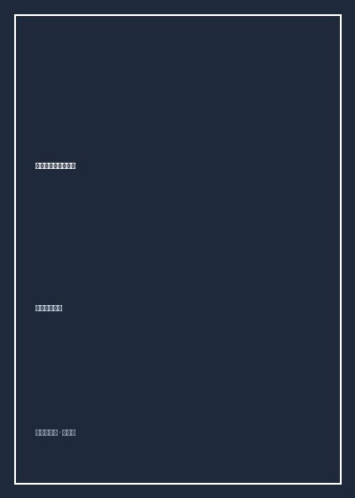
424. 《诡秘之主：绯红之月》 目录已核验
《诡秘之主：绯红之月》是爱潜水的乌贼的一部极具启发性的非虚构著作，由江苏凤凰文艺出版社出版。全书立足鲜活的时代议题与深度的社会学、人文或专业观察，展开了系统且深刻的理性探讨。

425. 《深入浅出PMP》 目录已核验
《深入浅出PMP》是（美）格林的一部极具启发性的非虚构著作，由东南大学出版社出版。全书立足鲜活的时代议题与深度的社会学、人文或专业观察，展开了系统且深刻的理性探讨。
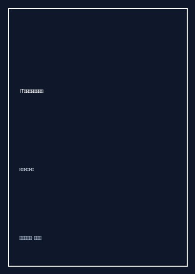
426. 《IT项目经理成长手记》 目录已核验
《IT项目经理成长手记》是潘东、韩秋泉的一部极具启发性的非虚构著作，由机械工业出版社出版。全书立足鲜活的时代议题与深度的社会学、人文或专业观察，展开了系统且深刻的理性探讨。
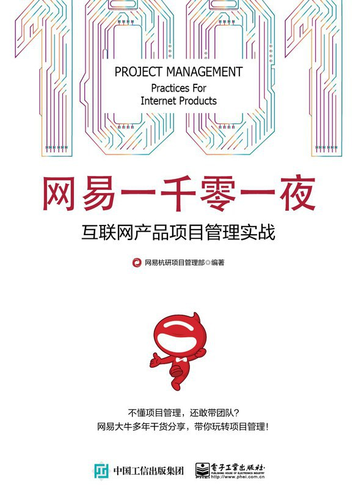
427. 《网易一千零一夜 : 互联网产品项目管理实战》 目录已核验
本书是网易杭州研究院项目管理部多年来丰富的项目管理实践总结与干货分享。字字句句凝结了网易项目经理的甘与苦、汗与泪。 全书围绕项目管理体系，从敏捷实践、项目立项、需求管理、沟通管理，到计划进度管理、风险管理，真实反映了网易面向互联网产品项目管理实战经验与心路历程。 不论你是项目管理新手，还是资深项目经理，都可以从本书中获得启发与借鉴。

428. 《空耳集》 目录已核验
《空耳集》是黄集伟的一部极具启发性的非虚构著作，由南京大学出版社出版。全书立足鲜活的时代议题与深度的社会学、人文或专业观察，展开了系统且深刻的理性探讨。

429. 《开放中的变迁 : 再论中国社会超稳定结构》 目录已核验
作者探讨1840至1956百多年间中国社会宏观结构的变迁的最新著作，观点新颖并富挑战性。作者不同意海内外的流行见解，即把中国近现代社会变迁视为传统社会的断裂，而认为共产党建立的政权不过是传统的某种变构。作者企图超越国共两党和西方学术界对中国近现代史的解释，用大量史料证明，传统深层结构如何左右中国现代化进程，中国近现代社会变迁其实是超稳定结构在对外开放条件下的行为模式。 中国近现代史风云变幻、扑朔迷离，本书则简明清晰地勾画出社会变迁的主线，以新的视角来考察一系列重大历史事件。

430. 《网络是怎样连接的》 目录已核验
《网络是怎样连接的》是[日] 户根勤的一部极具启发性的非虚构著作，由周自恒出版。全书立足鲜活的时代议题与深度的社会学、人文或专业观察，展开了系统且深刻的理性探讨。

431. 《信号》 目录已核验
◆ 悲悯幽默之笔，写尽底层生存百态 《信号》收入当代美国南方作家蒂姆•高特罗的十二个短篇小说新作和从他前两部短篇集中精选的九个名篇，代表高特罗短篇小说创作的最高水准。 这些故事大都发生在他深爱的路易斯安那州，密西西比河沿岸，有些发生在北卡罗莱纳州以及隆冬的明尼苏达州。读 者仿佛置身美国南方炎热与潮湿的氛围， 看到故事中的男女为信仰和各种心事纠结，看到他们的小镇生活、蓝领工作。一台珍贵的收音机，废弃保险柜里的一台神奇的缝纫机，密西西比河上的驳船，纸牌游戏和赌场，祖父母与儿孙……他们的故事走向荒诞、不安或崇高的结局。 2017年，《信号》被《华尔街日报》和美国公共广播电台评为年度好书。 …… 蒂姆·高特罗从不接受随意的文字和简单的讽刺；相反，他有天赋和同情心，能在看似平凡的生活中发现不平凡之处，他的文字具有诗歌的精确和令人难忘的特质。《信号》再次向我们证... (展开全部)

432. 《献给阿尔吉侬的花束》 目录已核验
【编辑推荐】 ◆豆瓣9.1高分科幻，豆瓣图书Top 250总榜No. 47，豆瓣科幻小说榜Top10，6.6万人评分，10万人想读。Goodreads 4.2分，57万人评价。 《基地》《银河帝国》系列作者艾萨克·阿西莫夫盛赞：“这个故事强烈震撼了我，他敏锐的感觉以及掌握这部非凡杰作的叙事技巧太令人惊叹了。” ◆囊括世界科幻小说两项大奖“星云奖”“雨果奖”的科幻经典，感动全球读者的人性关怀杰作。 “很多人都笑我。但他们是我的朋友我们都很快乐。”——声称能改造智能的科学实验在白老鼠阿尔吉侬身上获得了突破性的进展，下一步急需进行人体实验。个性和善、学习态度积极的心智障碍者查理·高登成为最佳人选。手术成功后，查理的智商从68跃升为185，那些从未有过的情绪和记忆也逐渐浮现。 ◆30多种语言译本，全球销量超过600万册，多次欧美影视、舞台剧及日剧改编。 19... (展开全部)

433. 《自学大全 : 送给所有不想放弃学习的人55个自学方法》 目录已核验
《自学大全 : 送给所有不想放弃学习的人55个自学方法》是读书猴的一部极具启发性的非虚构著作，由滕小涵出版。全书立足鲜活的时代议题与深度的社会学、人文或专业观察，展开了系统且深刻的理性探讨。
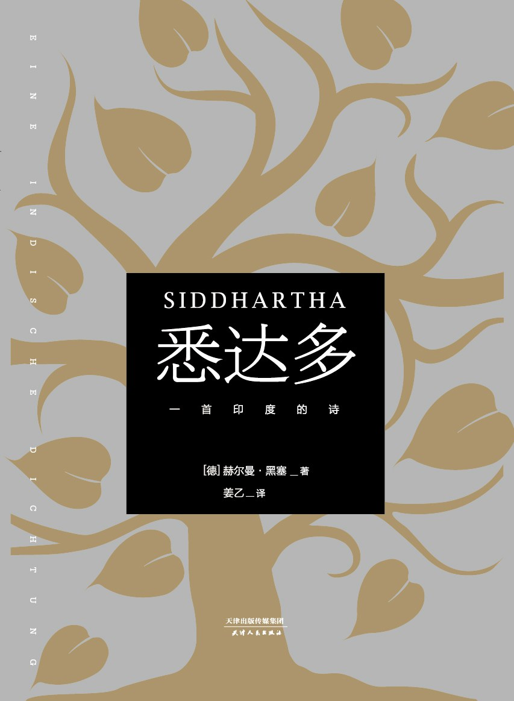
434. 《悉达多 : 一首印度的诗》 目录已核验
《悉达多》并非是佛陀的故事，它讲述了一个人的一生，千万寻常人亦会经历的一生。 意气风发的少年郎，常认为自己是被命运选中的人。抛下过去，随了跌跌撞撞的步伐，找寻心中的声音，追逐名利，经历友情，品尝爱情。不同的是，悉达多一生追求的是生命的圆融统一，看似宏大，确是每个人无法回 避的问题。 黑塞的语言是充满诗性的，正如本书副题“一首印度的诗”，因不得而知的原因，此副题在前人所出版本中都被回避了。为了尽可能表现黑塞的诗意，我们选择从德文直译，尽管我们的译文不能完全实现这种诗意，但其诗的本性与精神显而易见。 本书地位在前人的版本中已被反复强调——亨利·米勒的最爱；影响了包括电台司令在内的许多名人雅士；在六十年代美国掀起过阅读黑塞的热潮，大学生们人手一册等等。 但如书中成为摆渡人的悉达多所述，智慧无法分享，它可以被发现，被体验。 所以倘若你碰巧遇到了这本小书，请细... (展开全部)

435. 《镜与世俗神话 : 影片精读18例》 目录已核验
《镜与世俗神话 : 影片精读18例》是戴锦华的一部极具启发性的非虚构著作，由中国人民大学出版社出版。全书立足鲜活的时代议题与深度的社会学、人文或专业观察，展开了系统且深刻的理性探讨。

436. 《同名同姓受害者协会》 目录已核验
《同名同姓受害者协会》是[日] 下村敦史的一部极具启发性的非虚构著作，由虞侃出版。全书立足鲜活的时代议题与深度的社会学、人文或专业观察，展开了系统且深刻的理性探讨。

437. 《五号屠场》 目录已核验
《五号屠场》是[美] 库尔特·冯内古特的一部极具启发性的非虚构著作，由虞建华出版。全书立足鲜活的时代议题与深度的社会学、人文或专业观察，展开了系统且深刻的理性探讨。

438. 《小镇喧嚣 : 一个乡镇政治运作的演绎与阐释》 目录已核验
《小镇喧嚣 : 一个乡镇政治运作的演绎与阐释》是吴毅的一部极具启发性的非虚构著作，由生活·读书·新知三联书店出版。全书立足鲜活的时代议题与深度的社会学、人文或专业观察，展开了系统且深刻的理性探讨。

439. 《以利为利 : 财政关系与地方政府行为》 目录已核验
《以利为利 : 财政关系与地方政府行为》是周飞舟的一部极具启发性的非虚构著作，由上海三联书店出版。全书立足鲜活的时代议题与深度的社会学、人文或专业观察，展开了系统且深刻的理性探讨。
440. 《AI未来进行式》 目录已核验
李开复博士联手科幻作家陈楸帆，预测无限接近真实的科技未来 解析未来20年人工智能等科技发展趋势，思考科技落地对人与人类社会的冲击 刘慈欣、杨立昆、萨蒂亚·纳德拉、瑞·达利欧、贝尼特·米勒等强势推荐 ______________________________ AI时代已经开启，在我们面前，机遇与挑战并存！ ☆《华尔街日报》《华盛顿邮报》《金融时报》2021年度图书 ☆ 惊艳的科幻小说+深刻的科技分析，预测并描绘未来20年科技如何影响人类社会的突破性创作 ☆ 洞察人工智能等未来科技发展，当深度学习、自动驾驶、自然语言处理、量子计算等技术走向成熟，以及颠覆性新技术出现并发力之前，人类应做好必要的角色转换和应对准备。 ☆ 打破时空局限，置身于境思考人类与科技的未来，审视科技与社会变迁下人的情感、思考和理想。 ________________________... (展开全部)

441. 《二战信息图 : 数据化全景透视第二次世界大战》 目录已核验
《二战信息图 : 数据化全景透视第二次世界大战》是[法]让·洛佩兹、[法]樊尚·贝尔纳、[法]尼古拉·奥宾的一部极具启发性的非虚构著作，由黄广凌出版。全书立足鲜活的时代议题与深度的社会学、人文或专业观察，展开了系统且深刻的理性探讨。

442. 《你要的是幸福，还是对错（全新修订本） : 樊登、张德芬倾情推荐！上线“樊登读书会”播放量已破1300万！38年幸福》 目录已核验
《你要的是幸福，还是对错（全新修订本） : 樊登、张德芬倾情推荐！上线“樊登读书会”播放量已破1300万！38年幸福》是金韵蓉的一部极具启发性的非虚构著作，由中国青年出版社出版。全书立足鲜活的时代议题与深度的社会学、人文或专业观察，展开了系统且深刻的理性探讨。

443. 《悉德·菲尔德经典剧作教程》 目录已核验
《悉德·菲尔德经典剧作教程》是[美]悉德·菲尔德(Syd Field)的一部极具启发性的非虚构著作，由钟大丰、鲍玉珩、魏枫出版。全书立足鲜活的时代议题与深度的社会学、人文或专业观察，展开了系统且深刻的理性探讨。

444. 《不发表 就出局》 目录已核验
《不发表 就出局》是李连江的一部极具启发性的非虚构著作，由中国政法大学出版社出版。全书立足鲜活的时代议题与深度的社会学、人文或专业观察，展开了系统且深刻的理性探讨。

445. 《时间足够你爱》 目录已核验
《时间足够你爱》是(美) 罗伯特·海因莱因的一部极具启发性的非虚构著作，由万洁出版。全书立足鲜活的时代议题与深度的社会学、人文或专业观察，展开了系统且深刻的理性探讨。

446. 《流俗地》 目录已核验
《流俗地》是[马来西亚] 黎紫书的一部极具启发性的非虚构著作，由北京十月文艺出版社出版。全书立足鲜活的时代议题与深度的社会学、人文或专业观察，展开了系统且深刻的理性探讨。

447. 《两周自制脚本语言》 目录已核验
《两周自制脚本语言》是[日]千叶 滋的一部极具启发性的非虚构著作，由陈筱烟出版。全书立足鲜活的时代议题与深度的社会学、人文或专业观察，展开了系统且深刻的理性探讨。

448. 《与社会学同游 : 人文主义的视角》 目录已核验
《与社会学同游 : 人文主义的视角》是[美] 彼得·L.伯格的一部极具启发性的非虚构著作，由何道宽出版。全书立足鲜活的时代议题与深度的社会学、人文或专业观察，展开了系统且深刻的理性探讨。

449. 《星星是冰冷的玩具》 目录已核验
《星星是冰冷的玩具》是[俄] 谢尔盖·卢基扬年科的一部极具启发性的非虚构著作，由肖楚舟出版。全书立足鲜活的时代议题与深度的社会学、人文或专业观察，展开了系统且深刻的理性探讨。

450. 《张医生与王医生》 目录已核验
《张医生与王医生》是伊险峰、杨樱的一部极具启发性的非虚构著作，由文汇出版社出版。全书立足鲜活的时代议题与深度的社会学、人文或专业观察，展开了系统且深刻的理性探讨。

451. 《此生未完成 : 一个母亲、妻子、女儿的生命日记》 目录已核验
《此生未完成 : 一个母亲、妻子、女儿的生命日记》是于娟的一部极具启发性的非虚构著作，由湖南科学技术出版社出版。全书立足鲜活的时代议题与深度的社会学、人文或专业观察，展开了系统且深刻的理性探讨。

452. 《能断金刚 : 超凡的经营智慧》 目录已核验
《能断金刚 : 超凡的经营智慧》是[美] 麦克尔·罗奇格西的一部极具启发性的非虚构著作，由夏理扬、田多多出版。全书立足鲜活的时代议题与深度的社会学、人文或专业观察，展开了系统且深刻的理性探讨。

453. 《菜市场里的老虎》 目录已核验
《菜市场里的老虎》是李唐的一部极具启发性的非虚构著作，由北京十月文艺出版社出版。全书立足鲜活的时代议题与深度的社会学、人文或专业观察，展开了系统且深刻的理性探讨。

454. 《不抓住什么就会飞走的海豹君》 目录已核验
《不抓住什么就会飞走的海豹君》是（日）菊池祐纪的一部极具启发性的非虚构著作，由毛丹青出版。全书立足鲜活的时代议题与深度的社会学、人文或专业观察，展开了系统且深刻的理性探讨。

455. 《李诞脱口秀工作手册》 目录已核验
《李诞脱口秀工作手册》是李诞的一部极具启发性的非虚构著作，由江苏凤凰文艺出版社出版。全书立足鲜活的时代议题与深度的社会学、人文或专业观察，展开了系统且深刻的理性探讨。

456. 《工作、消费主义和新穷人》 目录已核验
《工作、消费主义和新穷人》是[英]齐格蒙特·鲍曼的一部极具启发性的非虚构著作，由郭楠出版。全书立足鲜活的时代议题与深度的社会学、人文或专业观察，展开了系统且深刻的理性探讨。

457. 《图解建筑设计入门》 目录已核验
《图解建筑设计入门》是[日]原口秀昭的一部极具启发性的非虚构著作，由潘琳出版。全书立足鲜活的时代议题与深度的社会学、人文或专业观察，展开了系统且深刻的理性探讨。

458. 《图解建筑结构入门》 目录已核验
《图解建筑结构入门》是[日]原口秀昭 著的一部极具启发性的非虚构著作，由刘洋、杨建英出版。全书立足鲜活的时代议题与深度的社会学、人文或专业观察，展开了系统且深刻的理性探讨。

459. 《认识建筑》 目录已核验
《认识建筑》是[美] 罗伯特·麦卡特、[芬] 尤哈尼·帕拉斯玛的一部极具启发性的非虚构著作，由宋明波出版。全书立足鲜活的时代议题与深度的社会学、人文或专业观察，展开了系统且深刻的理性探讨。

460. 《克莱因壶》 目录已核验
《克莱因壶》是[日] 冈岛二人的一部极具启发性的非虚构著作，由张舟出版。全书立足鲜活的时代议题与深度的社会学、人文或专业观察，展开了系统且深刻的理性探讨。

461. 《张明楷刑法学讲义》 目录已核验
《张明楷刑法学讲义》是张明楷的一部极具启发性的非虚构著作，由新星出版社出版。全书立足鲜活的时代议题与深度的社会学、人文或专业观察，展开了系统且深刻的理性探讨。

462. 《索拉里斯星》 目录已核验
《索拉里斯星》是[波] 斯坦尼斯瓦夫·莱姆的一部极具启发性的非虚构著作，由靖振忠出版。全书立足鲜活的时代议题与深度的社会学、人文或专业观察，展开了系统且深刻的理性探讨。

463. 《刘嘉概率论通识讲义》 目录已核验
《刘嘉概率论通识讲义》是刘嘉的一部极具启发性的非虚构著作，由新星出版社出版。全书立足鲜活的时代议题与深度的社会学、人文或专业观察，展开了系统且深刻的理性探讨。

464. 《深度工作 : 如何有效使用每一点脑力》 目录已核验
《深度工作 : 如何有效使用每一点脑力》是[美] 卡尔·纽波特的一部极具启发性的非虚构著作，由宋伟出版。全书立足鲜活的时代议题与深度的社会学、人文或专业观察，展开了系统且深刻的理性探讨。

465. 《我们为什么离正义越来越远》 目录已核验
《我们为什么离正义越来越远》是熊逸的一部极具启发性的非虚构著作，由湖南文艺出版社出版。全书立足鲜活的时代议题与深度的社会学、人文或专业观察，展开了系统且深刻的理性探讨。

466. 《春秋大义 : 中国传统语境下的皇权与学术》 目录已核验
《春秋大义 : 中国传统语境下的皇权与学术》是熊逸的一部极具启发性的非虚构著作，由陕西师范大学出版社出版。全书立足鲜活的时代议题与深度的社会学、人文或专业观察，展开了系统且深刻的理性探讨。

467. 《下沉年代》 目录已核验
《下沉年代》是[美] 乔治·帕克 (George Packer)的一部极具启发性的非虚构著作，由刘冉出版。全书立足鲜活的时代议题与深度的社会学、人文或专业观察，展开了系统且深刻的理性探讨。

468. 《星之继承者》 目录已核验
《星之继承者》是[英] 詹姆斯·P.霍根的一部极具启发性的非虚构著作，由[加] 仇春卉出版。全书立足鲜活的时代议题与深度的社会学、人文或专业观察，展开了系统且深刻的理性探讨。

469. 《尘土》 目录已核验
《尘土》是贾行家的一部极具启发性的非虚构著作，由广西师范大学出版社出版。全书立足鲜活的时代议题与深度的社会学、人文或专业观察，展开了系统且深刻的理性探讨。

470. 《人在故乡为异客 : 二十年后返乡手记》 目录已核验
《人在故乡为异客 : 二十年后返乡手记》是[美] 比尔·布莱森的一部极具启发性的非虚构著作，由夏菁出版。全书立足鲜活的时代议题与深度的社会学、人文或专业观察，展开了系统且深刻的理性探讨。

471. 《全民蠢萌的美国 : 其实是一本美国人日常生活观察笔记》 目录已核验
《全民蠢萌的美国 : 其实是一本美国人日常生活观察笔记》是[美] 比尔·布莱森的一部极具启发性的非虚构著作，由夏菁出版。全书立足鲜活的时代议题与深度的社会学、人文或专业观察，展开了系统且深刻的理性探讨。

472. 《全民自黑的英国 : 其实是一本全面的英国文化观察笔记》 目录已核验
《全民自黑的英国 : 其实是一本全面的英国文化观察笔记》是[美] 比尔·布莱森的一部极具启发性的非虚构著作，由黄昱宁、夏菁出版。全书立足鲜活的时代议题与深度的社会学、人文或专业观察，展开了系统且深刻的理性探讨。

473. 《欢迎来到猴子馆》 目录已核验
《欢迎来到猴子馆》是[美] 库尔特·冯内古特的一部极具启发性的非虚构著作，由王宇光、王宇光出版。全书立足鲜活的时代议题与深度的社会学、人文或专业观察，展开了系统且深刻的理性探讨。

474. 《扫地出门 : 美国城市的贫穷与暴利》 目录已核验
《扫地出门 : 美国城市的贫穷与暴利》是[美]马修·德斯蒙德的一部极具启发性的非虚构著作，由胡䜣谆、郑焕升出版。全书立足鲜活的时代议题与深度的社会学、人文或专业观察，展开了系统且深刻的理性探讨。

475. 《哈瓦那特派员》 目录已核验
《哈瓦那特派员》是[英] 格雷厄姆·格林的一部极具启发性的非虚构著作，由吴幸宜出版。全书立足鲜活的时代议题与深度的社会学、人文或专业观察，展开了系统且深刻的理性探讨。

476. 《权力结构、政治激励和经济增长 : 基于浙江民营经济发展经验的政治经济学分析》 目录已核验
《权力结构、政治激励和经济增长 : 基于浙江民营经济发展经验的政治经济学分析》是章奇、刘明兴的一部极具启发性的非虚构著作，由格致出版社、上海三联书店、上海人民出版社出版。全书立足鲜活的时代议题与深度的社会学、人文或专业观察，展开了系统且深刻的理性探讨。

477. 《拼了老命，你也做不出伟大的作品 : 写给创意总监的实用工作指南》 目录已核验
《拼了老命，你也做不出伟大的作品 : 写给创意总监的实用工作指南》是[爱尔兰] 保罗·伍兹的一部极具启发性的非虚构著作，由韩大力出版。全书立足鲜活的时代议题与深度的社会学、人文或专业观察，展开了系统且深刻的理性探讨。

478. 《2000年以来的西方》 目录已核验
《2000年以来的西方》是刘擎的一部极具启发性的非虚构著作，由当代世界出版社出版。全书立足鲜活的时代议题与深度的社会学、人文或专业观察，展开了系统且深刻的理性探讨。

479. 《鱼米之乡 : 中国人的雅致饮食文化》 目录已核验
《鱼米之乡 : 中国人的雅致饮食文化》是[英]扶霞·邓洛普的一部极具启发性的非虚构著作，由何雨珈出版。全书立足鲜活的时代议题与深度的社会学、人文或专业观察，展开了系统且深刻的理性探讨。

480. 《国家建设与政府行为》 目录已核验
《国家建设与政府行为》是周雪光、刘世定、折晓叶的一部极具启发性的非虚构著作，由中国社会科学出版社出版。全书立足鲜活的时代议题与深度的社会学、人文或专业观察，展开了系统且深刻的理性探讨。

481. 《给大壮的信》 目录已核验
《给大壮的信》是苗炜的一部极具启发性的非虚构著作，由译林出版社出版。全书立足鲜活的时代议题与深度的社会学、人文或专业观察，展开了系统且深刻的理性探讨。

482. 《中国古代文化常识（插图修订第4版） : 插图修订第4版》 目录已核验
《中国古代文化常识（插图修订第4版） : 插图修订第4版》是王力 主编、马汉麟 等执笔、姜亮夫 叶圣陶 等审校、刘乐园 修订、姜亮夫的一部极具启发性的非虚构著作，由北京联合出版公司出版。全书立足鲜活的时代议题与深度的社会学、人文或专业观察，展开了系统且深刻的理性探讨。

483. 《邓小平时代》 目录已核验
《邓小平时代》是[美] 傅高义的一部极具启发性的非虚构著作，由冯克利出版。全书立足鲜活的时代议题与深度的社会学、人文或专业观察，展开了系统且深刻的理性探讨。

484. 《忧郁的热带》 目录已核验
《忧郁的热带》是[法] 列维-斯特劳斯的一部极具启发性的非虚构著作，由王志明出版。全书立足鲜活的时代议题与深度的社会学、人文或专业观察，展开了系统且深刻的理性探讨。

485. 《在中国大地上 : 搭火车旅行记》 目录已核验
《在中国大地上 : 搭火车旅行记》是[美] 保罗·索鲁的一部极具启发性的非虚构著作，由陈媛媛出版。全书立足鲜活的时代议题与深度的社会学、人文或专业观察，展开了系统且深刻的理性探讨。

486. 《妇产科男医生告诉你》 目录已核验
《妇产科男医生告诉你》是田吉顺的一部极具启发性的非虚构著作，由江西科学技术出版社出版。全书立足鲜活的时代议题与深度的社会学、人文或专业观察，展开了系统且深刻的理性探讨。

487. 《文学：八个关键词》 目录已核验
《文学：八个关键词》是张炜的一部极具启发性的非虚构著作，由世界·观 广西师范大学出版社出版。全书立足鲜活的时代议题与深度的社会学、人文或专业观察，展开了系统且深刻的理性探讨。

488. 《计算机系统要素 : 从零开始构建现代计算机》 目录已核验
《计算机系统要素 : 从零开始构建现代计算机》是[美] Noam Nisan、[美] Shimon Schocken的一部极具启发性的非虚构著作，由周维、宋磊、陈曦出版。全书立足鲜活的时代议题与深度的社会学、人文或专业观察，展开了系统且深刻的理性探讨。

489. 《复杂生命的起源》 目录已核验
《复杂生命的起源》是[英] 尼克·莱恩的一部极具启发性的非虚构著作，由严曦出版。全书立足鲜活的时代议题与深度的社会学、人文或专业观察，展开了系统且深刻的理性探讨。

490. 《小行星掉在下午》 目录已核验
《小行星掉在下午》是沈大成的一部极具启发性的非虚构著作，由理想国 | 广西师范大学出版社出版。全书立足鲜活的时代议题与深度的社会学、人文或专业观察，展开了系统且深刻的理性探讨。

491. 《仿制药的真相》 目录已核验
《仿制药的真相》是[美] 凯瑟琳·埃班的一部极具启发性的非虚构著作，由高天羽出版。全书立足鲜活的时代议题与深度的社会学、人文或专业观察，展开了系统且深刻的理性探讨。

492. 《羊呆住了》 目录已核验
《羊呆住了》是李盆的一部极具启发性的非虚构著作，由四川文艺出版社出版。全书立足鲜活的时代议题与深度的社会学、人文或专业观察，展开了系统且深刻的理性探讨。

493. 《巨人的陨落 : 世纪三部曲》 目录已核验
《巨人的陨落 : 世纪三部曲》是[英]肯·福莱特的一部极具启发性的非虚构著作，由于大卫出版。全书立足鲜活的时代议题与深度的社会学、人文或专业观察，展开了系统且深刻的理性探讨。

494. 《舆论》 目录已核验
《舆论》是[美] 沃尔特·李普曼的一部极具启发性的非虚构著作，由常江、肖寒出版。全书立足鲜活的时代议题与深度的社会学、人文或专业观察，展开了系统且深刻的理性探讨。
495. 《斯通纳》 目录已核验
《斯通纳》是[美] 约翰·威廉斯的一部极具启发性的非虚构著作，由杨向荣出版。全书立足鲜活的时代议题与深度的社会学、人文或专业观察，展开了系统且深刻的理性探讨。

496. 《走出唯一真理观》 目录已核验
《走出唯一真理观》是陈嘉映的一部极具启发性的非虚构著作，由上海文艺出版社出版。全书立足鲜活的时代议题与深度的社会学、人文或专业观察，展开了系统且深刻的理性探讨。

497. 《何为良好生活 : 行之于途而应于心》 目录已核验
《何为良好生活 : 行之于途而应于心》是陈嘉映的一部极具启发性的非虚构著作，由上海文艺出版社出版。全书立足鲜活的时代议题与深度的社会学、人文或专业观察，展开了系统且深刻的理性探讨。

498. 《新闻理论十讲》 目录已核验
《新闻理论十讲》是陈力丹的一部极具启发性的非虚构著作，由复旦大学出版社出版。全书立足鲜活的时代议题与深度的社会学、人文或专业观察，展开了系统且深刻的理性探讨。

499. 《尽头》 目录已核验
《尽头》是唐诺的一部极具启发性的非虚构著作，由广西师范大学出版社出版。全书立足鲜活的时代议题与深度的社会学、人文或专业观察，展开了系统且深刻的理性探讨。

500. 《阅读的故事》 目录已核验
《阅读的故事》是唐诺的一部极具启发性的非虚构著作，由上海人民出版社出版。全书立足鲜活的时代议题与深度的社会学、人文或专业观察，展开了系统且深刻的理性探讨。
501. 《平原上的摩西》 目录已核验
《平原上的摩西》是双雪涛的一部极具启发性的非虚构著作，由百花文艺出版社出版。全书立足鲜活的时代议题与深度的社会学、人文或专业观察，展开了系统且深刻的理性探讨。

502. 《规训与惩罚 : 监狱的诞生》 目录已核验
《规训与惩罚 : 监狱的诞生》是[法] 米歇尔·福柯的一部极具启发性的非虚构著作，由刘北成、杨远婴出版。全书立足鲜活的时代议题与深度的社会学、人文或专业观察，展开了系统且深刻的理性探讨。
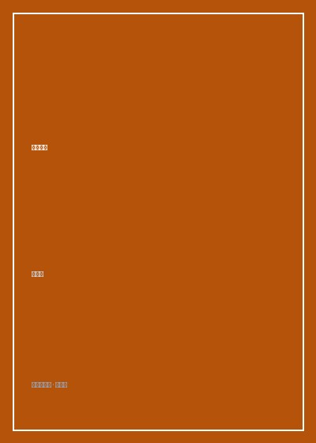
503. 《怒河春醒》 目录已核验
《怒河春醒》是韩松落的一部极具启发性的非虚构著作，由上海三联书店出版。全书立足鲜活的时代议题与深度的社会学、人文或专业观察，展开了系统且深刻的理性探讨。
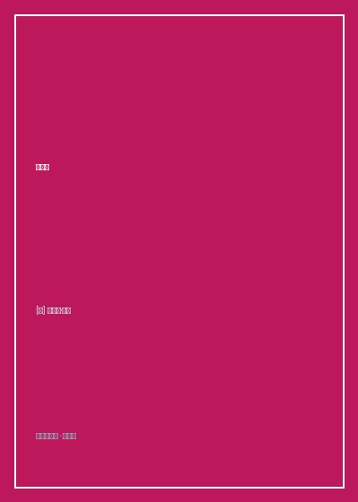
504. 《局外人》 目录已核验
《局外人》是[法] 阿尔贝·加缪的一部极具启发性的非虚构著作，由柳鸣九出版。全书立足鲜活的时代议题与深度的社会学、人文或专业观察，展开了系统且深刻的理性探讨。

505. 《末日巨塔 : 基地组织与“9·11”之路》 目录已核验
《末日巨塔 : 基地组织与“9·11”之路》是[美] 劳伦斯·赖特的一部极具启发性的非虚构著作，由张鲲、蒋莉出版。全书立足鲜活的时代议题与深度的社会学、人文或专业观察，展开了系统且深刻的理性探讨。

506. 《血疫 : 埃博拉的故事》 目录已核验
《血疫 : 埃博拉的故事》是[美] 理查德·普雷斯顿的一部极具启发性的非虚构著作，由姚向辉出版。全书立足鲜活的时代议题与深度的社会学、人文或专业观察，展开了系统且深刻的理性探讨。

507. 《一位女士的画像》 目录已核验
《一位女士的画像》是[美]亨利·詹姆斯的一部极具启发性的非虚构著作，由陈丽、郑国锋出版。全书立足鲜活的时代议题与深度的社会学、人文或专业观察，展开了系统且深刻的理性探讨。
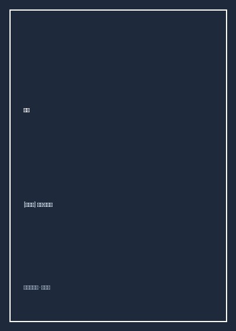
508. 《出轨》 目录已核验
《出轨》是[爱尔兰] 威廉·特雷弗的一部极具启发性的非虚构著作，由杨凌峰出版。全书立足鲜活的时代议题与深度的社会学、人文或专业观察，展开了系统且深刻的理性探讨。
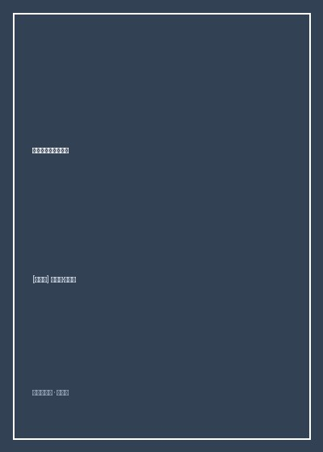
509. 《想成为神的巴士司机》 目录已核验
《想成为神的巴士司机》是[以色列] 埃特加·凯雷特的一部极具启发性的非虚构著作，由楼武挺出版。全书立足鲜活的时代议题与深度的社会学、人文或专业观察，展开了系统且深刻的理性探讨。
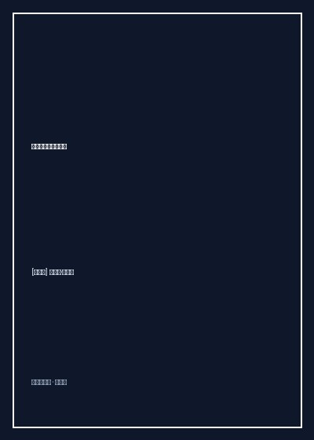
510. 《银河系边缘的小失常》 目录已核验
《银河系边缘的小失常》是[以色列] 埃特加·凯雷特的一部极具启发性的非虚构著作，由方铁出版。全书立足鲜活的时代议题与深度的社会学、人文或专业观察，展开了系统且深刻的理性探讨。

511. 《最后一个故事，就这样啦》 目录已核验
《最后一个故事，就这样啦》是[以色列] 埃特加·凯雷特、Etgar Keret的一部极具启发性的非虚构著作，由方铁出版。全书立足鲜活的时代议题与深度的社会学、人文或专业观察，展开了系统且深刻的理性探讨。

512. 《九人 : 美国最高法院风云》 目录已核验
《九人 : 美国最高法院风云》是(美) 杰弗里·图宾的一部极具启发性的非虚构著作，由何帆出版。全书立足鲜活的时代议题与深度的社会学、人文或专业观察，展开了系统且深刻的理性探讨。
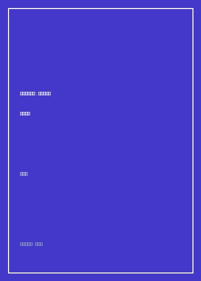
513. 《老年实用手册 : 如何归纳自己的人生》 目录已核验
《老年实用手册 : 如何归纳自己的人生》是宗泽亚的一部极具启发性的非虚构著作，由中国友谊出版公司出版。全书立足鲜活的时代议题与深度的社会学、人文或专业观察，展开了系统且深刻的理性探讨。
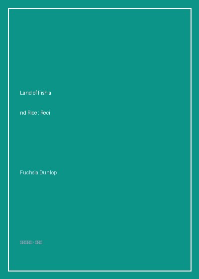
514. 《Land of Fish and Rice : Recipes from the Culinary Heart of China》 目录已核验
《Land of Fish and Rice : Recipes from the Culinary Heart of China》是Fuchsia Dunlop的一部极具启发性的非虚构著作，由W. W. Norton & Company出版。全书立足鲜活的时代议题与深度的社会学、人文或专业观察，展开了系统且深刻的理性探讨。

515. 《东方学》 目录已核验
《东方学》是[美] 爱德华·W. 萨义德、[美国] 爱德华·W·萨义德的一部极具启发性的非虚构著作，由王宇根出版。全书立足鲜活的时代议题与深度的社会学、人文或专业观察，展开了系统且深刻的理性探讨。

516. 《消费社会》 目录已核验
《消费社会》是[法] 让·鲍德里亚的一部极具启发性的非虚构著作，由刘成富、全志钢出版。全书立足鲜活的时代议题与深度的社会学、人文或专业观察，展开了系统且深刻的理性探讨。

517. 《人性中的善良天使 : 暴力为什么会减少》 目录已核验
《人性中的善良天使 : 暴力为什么会减少》是[美]斯蒂芬·平克的一部极具启发性的非虚构著作，由安雯出版。全书立足鲜活的时代议题与深度的社会学、人文或专业观察，展开了系统且深刻的理性探讨。

518. 《政治秩序的起源 : 从前人类时代到法国大革命》 目录已核验
《政治秩序的起源 : 从前人类时代到法国大革命》是[美] 弗朗西斯·福山的一部极具启发性的非虚构著作，由毛俊杰出版。全书立足鲜活的时代议题与深度的社会学、人文或专业观察，展开了系统且深刻的理性探讨。

519. 《党员、党权与党争 : 1924-1949年中国国民党的组织形态》 目录已核验
《党员、党权与党争 : 1924-1949年中国国民党的组织形态》是王奇生的一部极具启发性的非虚构著作，由华文出版社出版。全书立足鲜活的时代议题与深度的社会学、人文或专业观察，展开了系统且深刻的理性探讨。

520. 《国家的视角 : 那些试图改善人类状况的项目是如何失败的》 目录已核验
《国家的视角 : 那些试图改善人类状况的项目是如何失败的》是[美]詹姆斯·C.斯科特(James C. Scott)的一部极具启发性的非虚构著作，由社会科学文献出版社出版。全书立足鲜活的时代议题与深度的社会学、人文或专业观察，展开了系统且深刻的理性探讨。
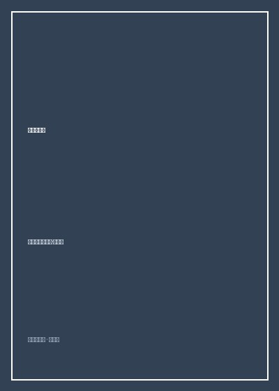
521. 《美丽新世界》 目录已核验
《美丽新世界》是【英】奥尔德斯·赫胥黎的一部极具启发性的非虚构著作，由陈超出版。全书立足鲜活的时代议题与深度的社会学、人文或专业观察，展开了系统且深刻的理性探讨。
522. 《川菜 : 尝到了川菜也就尝到了生活。》 目录已核验
《川菜 : 尝到了川菜也就尝到了生活。》是[英]扶霞·邓洛普的一部极具启发性的非虚构著作，由何雨珈出版。全书立足鲜活的时代议题与深度的社会学、人文或专业观察，展开了系统且深刻的理性探讨。

523. 《鸟瞰古文明 : 130幅城市复原图重现古地中海文明》 目录已核验
《鸟瞰古文明 : 130幅城市复原图重现古地中海文明》是[法] 让-克劳德·戈尔万的一部极具启发性的非虚构著作，由严可婷出版。全书立足鲜活的时代议题与深度的社会学、人文或专业观察，展开了系统且深刻的理性探讨。

524. 《转型中的地方政府 : 官员激励与治理（第二版）》 目录已核验
《转型中的地方政府 : 官员激励与治理（第二版）》是周黎安的一部极具启发性的非虚构著作，由格致出版社、上海三联书店、上海人民出版社出版。全书立足鲜活的时代议题与深度的社会学、人文或专业观察，展开了系统且深刻的理性探讨。

525. 《组织社会学十讲》 目录已核验
《组织社会学十讲》是周雪光的一部极具启发性的非虚构著作，由社会科学文献出版社出版。全书立足鲜活的时代议题与深度的社会学、人文或专业观察，展开了系统且深刻的理性探讨。

526. 《第三种黑猩猩 : 人类的身世与未来》 目录已核验
《第三种黑猩猩 : 人类的身世与未来》是（美）贾雷德·戴蒙德的一部极具启发性的非虚构著作，由王道还出版。全书立足鲜活的时代议题与深度的社会学、人文或专业观察，展开了系统且深刻的理性探讨。

527. 《穷忙》 目录已核验
《穷忙》是(美) 希普勒的一部极具启发性的非虚构著作，由陈丽丽出版。全书立足鲜活的时代议题与深度的社会学、人文或专业观察，展开了系统且深刻的理性探讨。
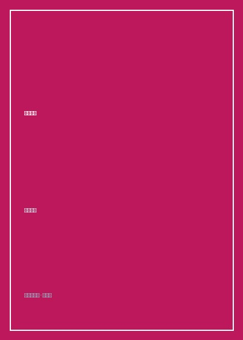
528. 《身体密码》 目录已核验
《身体密码》是野口哲典的一部极具启发性的非虚构著作，由张佩珊出版。全书立足鲜活的时代议题与深度的社会学、人文或专业观察，展开了系统且深刻的理性探讨。

529. 《长日将尽》 目录已核验
《长日将尽》是[英] 石黑一雄的一部极具启发性的非虚构著作，由冯涛出版。全书立足鲜活的时代议题与深度的社会学、人文或专业观察，展开了系统且深刻的理性探讨。

530. 《病者生存：疾病如何延续人类寿命 : 疾病如何延续人类寿命》 目录已核验
《病者生存：疾病如何延续人类寿命 : 疾病如何延续人类寿命》是沙伦·莫勒姆、[美] 乔纳森·普林斯的一部极具启发性的非虚构著作，由程纪莲出版。全书立足鲜活的时代议题与深度的社会学、人文或专业观察，展开了系统且深刻的理性探讨。

531. 《中国艺术与文化 : 全彩修订版》 目录已核验
《中国艺术与文化 : 全彩修订版》是[美] 杜朴、[美] 文以诚的一部极具启发性的非虚构著作，由张欣出版。全书立足鲜活的时代议题与深度的社会学、人文或专业观察，展开了系统且深刻的理性探讨。

532. 《大问题 : 简明哲学导论》 目录已核验
《大问题 : 简明哲学导论》是[美] 罗伯特·C. 所罗门、[美] 凯思林·M. 希金斯的一部极具启发性的非虚构著作，由张卜天出版。全书立足鲜活的时代议题与深度的社会学、人文或专业观察，展开了系统且深刻的理性探讨。
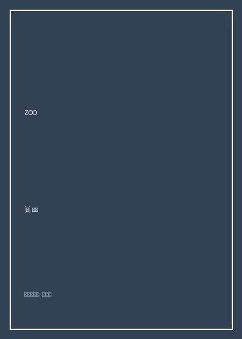
533. 《ZOO》 目录已核验
《ZOO》是[日] 乙一的一部极具启发性的非虚构著作，由李颖秋出版。全书立足鲜活的时代议题与深度的社会学、人文或专业观察，展开了系统且深刻的理性探讨。
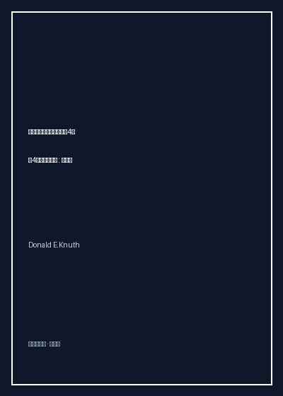
534. 《计算机程序设计艺术：第4卷 第4册（双语版） : 生成所有树组合生成的历史》 目录已核验
《计算机程序设计艺术：第4卷 第4册（双语版） : 生成所有树组合生成的历史》是Donald E.Knuth的一部极具启发性的非虚构著作，由苏运霖出版。全书立足鲜活的时代议题与深度的社会学、人文或专业观察，展开了系统且深刻的理性探讨。

535. 《从零开始学架构 : 照着做，你也能成为架构师》 目录已核验
《从零开始学架构 : 照着做，你也能成为架构师》是李运华的一部极具启发性的非虚构著作，由电子工业出版社出版。全书立足鲜活的时代议题与深度的社会学、人文或专业观察，展开了系统且深刻的理性探讨。
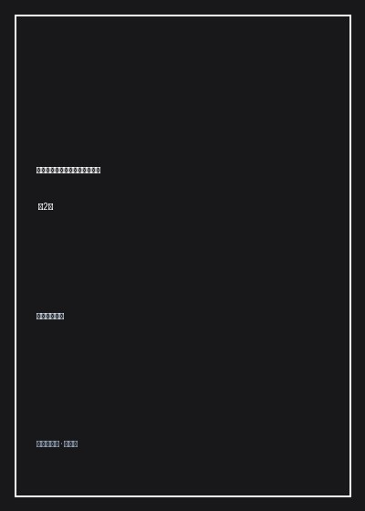
536. 《人才盘点：创建人才驱动型组织 第2版》 目录已核验
《人才盘点：创建人才驱动型组织 第2版》是李常仓、赵实的一部极具启发性的非虚构著作，由机械工业出版社出版。全书立足鲜活的时代议题与深度的社会学、人文或专业观察，展开了系统且深刻的理性探讨。

537. 《杰克·韦尔奇自传》 目录已核验
《杰克·韦尔奇自传》是（美）杰克.韦尔奇（Jack Welch）、约翰.拜恩（John A. Byrne）、none的一部极具启发性的非虚构著作，由曹彦博、孙立明、丁浩出版。全书立足鲜活的时代议题与深度的社会学、人文或专业观察，展开了系统且深刻的理性探讨。
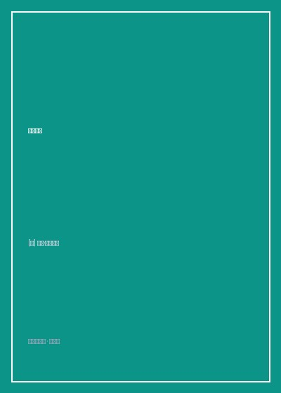
538. 《编码宝典》 目录已核验
《编码宝典》是[美] 尼尔·斯蒂芬森的一部极具启发性的非虚构著作，由刘思含、韩阳出版。全书立足鲜活的时代议题与深度的社会学、人文或专业观察，展开了系统且深刻的理性探讨。

539. 《手把手教你读财报 : 财报是用来排除企业的》 目录已核验
《手把手教你读财报 : 财报是用来排除企业的》是唐朝的一部极具启发性的非虚构著作，由中国经济出版社出版。全书立足鲜活的时代议题与深度的社会学、人文或专业观察，展开了系统且深刻的理性探讨。

540. 《人间须尽欢》 目录已核验
《人间须尽欢》是高军的一部极具启发性的非虚构著作，由青橙文化出版。全书立足鲜活的时代议题与深度的社会学、人文或专业观察，展开了系统且深刻的理性探讨。
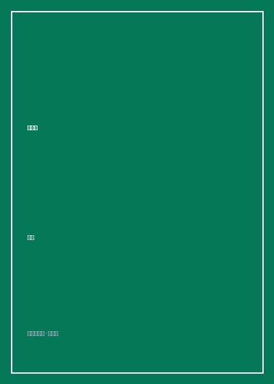
541. 《吹云记》 目录已核验
《吹云记》是高军的一部极具启发性的非虚构著作，由北京联合出版公司出版。全书立足鲜活的时代议题与深度的社会学、人文或专业观察，展开了系统且深刻的理性探讨。

542. 《鱼王》 目录已核验
《鱼王》是(俄罗斯)维克托·阿斯塔菲耶夫的一部极具启发性的非虚构著作，由夏仲翼出版。全书立足鲜活的时代议题与深度的社会学、人文或专业观察，展开了系统且深刻的理性探讨。

543. 《设计几何学 : 关于比例与构成的研究》 目录已核验
《设计几何学 : 关于比例与构成的研究》是金伯利·伊拉姆的一部极具启发性的非虚构著作，由李乐山出版。全书立足鲜活的时代议题与深度的社会学、人文或专业观察，展开了系统且深刻的理性探讨。

544. 《人本界面》 目录已核验
《人本界面》是（美）拉斯基的一部极具启发性的非虚构著作，由史元春出版。全书立足鲜活的时代议题与深度的社会学、人文或专业观察，展开了系统且深刻的理性探讨。

545. 《交互设计沉思录 : 顶尖设计专家Jon Kolko的经验与心得》 目录已核验
《交互设计沉思录 : 顶尖设计专家Jon Kolko的经验与心得》是Jon Kolko的一部极具启发性的非虚构著作，由方舟出版。全书立足鲜活的时代议题与深度的社会学、人文或专业观察，展开了系统且深刻的理性探讨。
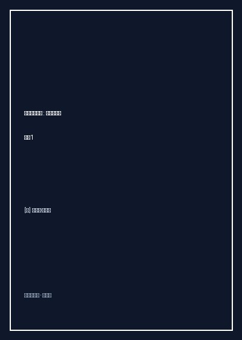
546. 《我的天才女友 : 那不勒斯四部曲1》 目录已核验
《我的天才女友 : 那不勒斯四部曲1》是[意] 埃莱娜·费兰特的一部极具启发性的非虚构著作，由陈英出版。全书立足鲜活的时代议题与深度的社会学、人文或专业观察，展开了系统且深刻的理性探讨。
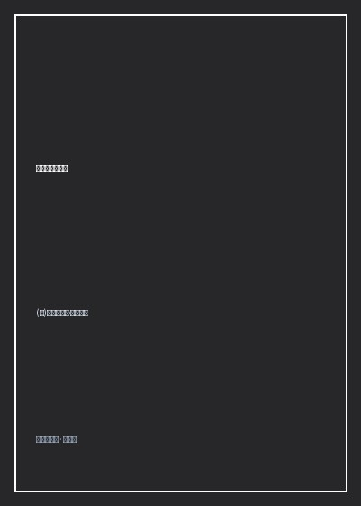
547. 《松鼠先生和月亮》 目录已核验
《松鼠先生和月亮》是(德)塞巴斯蒂安·麦什莫泽的一部极具启发性的非虚构著作，由王晓翠出版。全书立足鲜活的时代议题与深度的社会学、人文或专业观察，展开了系统且深刻的理性探讨。

548. 《世界平面设计史》 目录已核验
《世界平面设计史》是王受之的一部极具启发性的非虚构著作，由中国青年出版社出版。全书立足鲜活的时代议题与深度的社会学、人文或专业观察，展开了系统且深刻的理性探讨。

549. 《世界现代设计史》 目录已核验
《世界现代设计史》是王受之的一部极具启发性的非虚构著作，由中国青年出版社出版。全书立足鲜活的时代议题与深度的社会学、人文或专业观察，展开了系统且深刻的理性探讨。
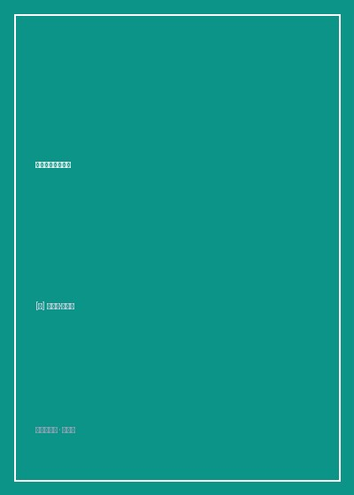
550. 《一直下雨的星期天》 目录已核验
《一直下雨的星期天》是[法] 菲利普·德莱姆的一部极具启发性的非虚构著作，由田晶出版。全书立足鲜活的时代议题与深度的社会学、人文或专业观察，展开了系统且深刻的理性探讨。
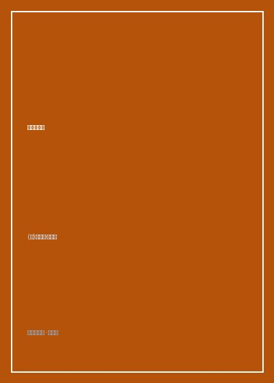
551. 《第一口啤酒》 目录已核验
《第一口啤酒》是(法)菲利普·德莱姆的一部极具启发性的非虚构著作，由怀宇、郭昌京出版。全书立足鲜活的时代议题与深度的社会学、人文或专业观察，展开了系统且深刻的理性探讨。

552. 《函数式编程思维》 目录已核验
《函数式编程思维》是[美] Neal Ford的一部极具启发性的非虚构著作，由郭晓刚出版。全书立足鲜活的时代议题与深度的社会学、人文或专业观察，展开了系统且深刻的理性探讨。
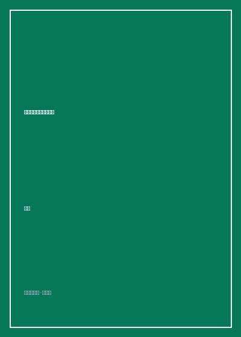
553. 《毫无代价唱最幸福的歌》 目录已核验
《毫无代价唱最幸福的歌》是林夕的一部极具启发性的非虚构著作，由重庆出版社出版。全书立足鲜活的时代议题与深度的社会学、人文或专业观察，展开了系统且深刻的理性探讨。
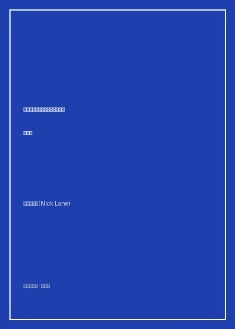
554. 《能量、性、死亡：粒線體與我們的生命》 目录已核验
《能量、性、死亡：粒線體與我們的生命》是尼克．連恩(Nick Lane)的一部极具启发性的非虚构著作，由林彥綸出版。全书立足鲜活的时代议题与深度的社会学、人文或专业观察，展开了系统且深刻的理性探讨。
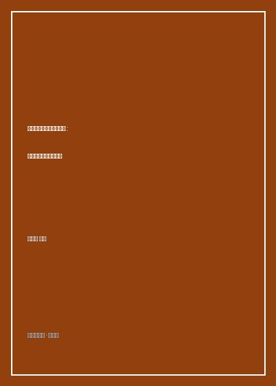
555. 《让脑瘫儿童拥有幸福人生 : 脑瘫儿童家庭康复指南》 目录已核验
《让脑瘫儿童拥有幸福人生 : 脑瘫儿童家庭康复指南》是刘振寰 主编的一部极具启发性的非虚构著作，由中国妇女出版社出版。全书立足鲜活的时代议题与深度的社会学、人文或专业观察，展开了系统且深刻的理性探讨。

556. 《手把手教你玩脱口秀》 目录已核验
《手把手教你玩脱口秀》是[美]格雷格•迪恩的一部极具启发性的非虚构著作，由程璐、冯立文、梁海源出版。全书立足鲜活的时代议题与深度的社会学、人文或专业观察，展开了系统且深刻的理性探讨。

557. 《流金岁月》 目录已核验
《流金岁月》是[加] 亦舒的一部极具启发性的非虚构著作，由南海出版公司出版。全书立足鲜活的时代议题与深度的社会学、人文或专业观察，展开了系统且深刻的理性探讨。
558. 《哲学·科学·常识》 目录已核验
《哲学·科学·常识》是陈嘉映的一部极具启发性的非虚构著作，由中信出版社出版。全书立足鲜活的时代议题与深度的社会学、人文或专业观察，展开了系统且深刻的理性探讨。
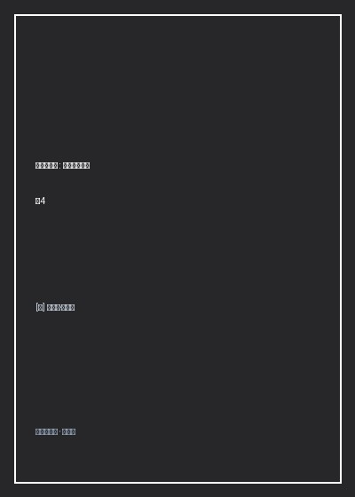
559. 《失踪的孩子 : 那不勒斯四部曲4》 目录已核验
《失踪的孩子 : 那不勒斯四部曲4》是[意] 埃莱娜·费兰特的一部极具启发性的非虚构著作，由陈英出版。全书立足鲜活的时代议题与深度的社会学、人文或专业观察，展开了系统且深刻的理性探讨。
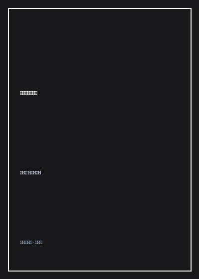
560. 《食物营养与配餐》 目录已核验
《食物营养与配餐》是范志红 编、范志红的一部极具启发性的非虚构著作，由中国农业大学出版社出版。全书立足鲜活的时代议题与深度的社会学、人文或专业观察，展开了系统且深刻的理性探讨。
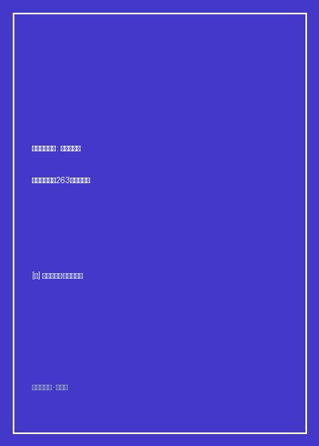
561. 《人类愚蠢辞典 : 揭穿人类社会自欺欺人的263种愚蠢现象》 目录已核验
《人类愚蠢辞典 : 揭穿人类社会自欺欺人的263种愚蠢现象》是[意] 皮耶尔乔治·奥迪弗雷迪的一部极具启发性的非虚构著作，由姚轶苒出版。全书立足鲜活的时代议题与深度的社会学、人文或专业观察，展开了系统且深刻的理性探讨。

562. 《经济学通识》 目录已核验
《经济学通识》是薛兆丰的一部极具启发性的非虚构著作，由北京大学出版社出版。全书立足鲜活的时代议题与深度的社会学、人文或专业观察，展开了系统且深刻的理性探讨。

563. 《沟通的艺术（插图修订第14版）》 目录已核验
《沟通的艺术（插图修订第14版）》是拉塞尔·F·普罗科特的一部极具启发性的非虚构著作，由黄素菲、李恩出版。全书立足鲜活的时代议题与深度的社会学、人文或专业观察，展开了系统且深刻的理性探讨。
564. 《考古学入门》 目录已核验
《考古学入门》是[美] 布赖恩·费根的一部极具启发性的非虚构著作，由钱益汇、朱雪峰、邓晨钰出版。全书立足鲜活的时代议题与深度的社会学、人文或专业观察，展开了系统且深刻的理性探讨。
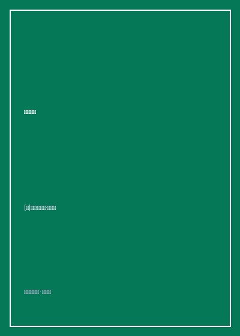
565. 《与神对话》 目录已核验
《与神对话》是[美]尼尔·唐纳德·沃尔什的一部极具启发性的非虚构著作，由李继宏出版。全书立足鲜活的时代议题与深度的社会学、人文或专业观察，展开了系统且深刻的理性探讨。

566. 《无中生有》 目录已核验
《无中生有》是刘天昭的一部极具启发性的非虚构著作，由上海三联书店出版。全书立足鲜活的时代议题与深度的社会学、人文或专业观察，展开了系统且深刻的理性探讨。

567. 《拍电影》 目录已核验
《拍电影》是[美]琳恩·格罗斯、[美]拉里·沃德的一部极具启发性的非虚构著作，由廖澺苍、凌大发出版。全书立足鲜活的时代议题与深度的社会学、人文或专业观察，展开了系统且深刻的理性探讨。

568. 《电影艺术（插图第8版）》 目录已核验
《电影艺术（插图第8版）》是[美] 大卫·波德维尔、克里斯汀·汤普森、[美] 克莉丝汀·汤普森的一部极具启发性的非虚构著作，由曾伟祯出版。全书立足鲜活的时代议题与深度的社会学、人文或专业观察，展开了系统且深刻的理性探讨。
569. 《写作这门手艺》 目录已核验
《写作这门手艺》是[美] 约翰·麦克菲的一部极具启发性的非虚构著作，由李雪顺出版。全书立足鲜活的时代议题与深度的社会学、人文或专业观察，展开了系统且深刻的理性探讨。

570. 《自然与人生》 目录已核验
《自然与人生》是德富芦花的一部极具启发性的非虚构著作，由晋学新出版。全书立足鲜活的时代议题与深度的社会学、人文或专业观察，展开了系统且深刻的理性探讨。

571. 《幸福的建筑》 目录已核验
《幸福的建筑》是[英] 阿兰·德波顿的一部极具启发性的非虚构著作，由冯涛出版。全书立足鲜活的时代议题与深度的社会学、人文或专业观察，展开了系统且深刻的理性探讨。
572. 《爱与数学》 目录已核验
《爱与数学》是[美] 爱德华·弗伦克尔的一部极具启发性的非虚构著作，由胡小锐出版。全书立足鲜活的时代议题与深度的社会学、人文或专业观察，展开了系统且深刻的理性探讨。

573. 《庆熹纪事》 目录已核验
《庆熹纪事》是红猪侠的一部极具启发性的非虚构著作，由浙江文艺出版社出版。全书立足鲜活的时代议题与深度的社会学、人文或专业观察，展开了系统且深刻的理性探讨。

574. 《逝去的武林》 目录已核验
《逝去的武林》是李仲轩 口述、徐皓峰 撰文、徐皓峰的一部极具启发性的非虚构著作，由人民文学出版社出版。全书立足鲜活的时代议题与深度的社会学、人文或专业观察，展开了系统且深刻的理性探讨。
575. 《武士会》 目录已核验
《武士会》是人民文学出版社的一部极具启发性的非虚构著作，由2013-1出版。全书立足鲜活的时代议题与深度的社会学、人文或专业观察，展开了系统且深刻的理性探讨。
576. 《如父如子》 目录已核验
《如父如子》是[日] 是枝裕和、[日] 佐野晶的一部极具启发性的非虚构著作，由丹勇出版。全书立足鲜活的时代议题与深度的社会学、人文或专业观察，展开了系统且深刻的理性探讨。

577. 《敏捷革命》 目录已核验
《敏捷革命》是[美] 杰夫·萨瑟兰的一部极具启发性的非虚构著作，由蒋宗强出版。全书立足鲜活的时代议题与深度的社会学、人文或专业观察，展开了系统且深刻的理性探讨。

578. 《艾伦·图灵传》 目录已核验
《艾伦·图灵传》是[英] 安德鲁·霍奇斯的一部极具启发性的非虚构著作，由孙天齐出版。全书立足鲜活的时代议题与深度的社会学、人文或专业观察，展开了系统且深刻的理性探讨。
579. 《图解设计模式》 目录已核验
《图解设计模式》是结城浩的一部极具启发性的非虚构著作，由杨文轩出版。全书立足鲜活的时代议题与深度的社会学、人文或专业观察，展开了系统且深刻的理性探讨。

580. 《程序员的数学》 目录已核验
《程序员的数学》是结城浩的一部极具启发性的非虚构著作，由管杰出版。全书立足鲜活的时代议题与深度的社会学、人文或专业观察，展开了系统且深刻的理性探讨。

581. 《机器猫史话》 目录已核验
《机器猫史话》是周公度的一部极具启发性的非虚构著作，由暨南大学出版社出版。全书立足鲜活的时代议题与深度的社会学、人文或专业观察，展开了系统且深刻的理性探讨。

582. 《黑客攻防技术宝典（第2版）》 目录已核验
《黑客攻防技术宝典（第2版）》是[英] Dafydd Stuttard、[英] Marcus Pinto的一部极具启发性的非虚构著作，由石华耀、傅志红出版。全书立足鲜活的时代议题与深度的社会学、人文或专业观察，展开了系统且深刻的理性探讨。

583. 《白帽子讲Web安全》 目录已核验
《白帽子讲Web安全》是吴翰清的一部极具启发性的非虚构著作，由电子工业出版社出版。全书立足鲜活的时代议题与深度的社会学、人文或专业观察，展开了系统且深刻的理性探讨。
584. 《人民的名义》 目录已核验
《人民的名义》是周梅森的一部极具启发性的非虚构著作，由北京十月文艺出版社出版。全书立足鲜活的时代议题与深度的社会学、人文或专业观察，展开了系统且深刻的理性探讨。

585. 《春秋来信》 目录已核验
《春秋来信》是张枣的一部极具启发性的非虚构著作，由北京十月文艺出版社出版。全书立足鲜活的时代议题与深度的社会学、人文或专业观察，展开了系统且深刻的理性探讨。

586. 《隔江山色》 目录已核验
《隔江山色》是[美] 高居翰的一部极具启发性的非虚构著作，由宋伟航出版。全书立足鲜活的时代议题与深度的社会学、人文或专业观察，展开了系统且深刻的理性探讨。
587. 《乱世华尔街》 目录已核验
《乱世华尔街》是渔阳的一部极具启发性的非虚构著作，由中国人民大学出版社出版。全书立足鲜活的时代议题与深度的社会学、人文或专业观察，展开了系统且深刻的理性探讨。

588. 《机器学习》 目录已核验
《机器学习》是周志华的一部极具启发性的非虚构著作，由清华大学出版社出版。全书立足鲜活的时代议题与深度的社会学、人文或专业观察，展开了系统且深刻的理性探讨。

589. 《伟大的博弈》 目录已核验
《伟大的博弈》是[美] 约翰·S. 戈登的一部极具启发性的非虚构著作，由祁斌出版。全书立足鲜活的时代议题与深度的社会学、人文或专业观察，展开了系统且深刻的理性探讨。
590. 《进化》 目录已核验
《进化》是[美] Brian Fitzpatrick、[美] Ben Collins-Sussman的一部极具启发性的非虚构著作，由金迎出版。全书立足鲜活的时代议题与深度的社会学、人文或专业观察，展开了系统且深刻的理性探讨。
591. 《商业字体设计》 目录已核验
《商业字体设计》是方茜的一部极具启发性的非虚构著作，由上海人民美术出版社出版。全书立足鲜活的时代议题与深度的社会学、人文或专业观察，展开了系统且深刻的理性探讨。
592. 《Web性能权威指南》 目录已核验
《Web性能权威指南》是Ilya Grigorik的一部极具启发性的非虚构著作，由李松峰出版。全书立足鲜活的时代议题与深度的社会学、人文或专业观察，展开了系统且深刻的理性探讨。

593. 《高性能网站建设进阶指南》 目录已核验
《高性能网站建设进阶指南》是Steve Souders的一部极具启发性的非虚构著作，由口碑网前端团队出版。全书立足鲜活的时代议题与深度的社会学、人文或专业观察，展开了系统且深刻的理性探讨。

594. 《高性能网站建设指南》 目录已核验
《高性能网站建设指南》是Steve Souders的一部极具启发性的非虚构著作，由刘彦博出版。全书立足鲜活的时代议题与深度的社会学、人文或专业观察，展开了系统且深刻的理性探讨。

595. 《不与自己对抗你就会更强大》 目录已核验
《不与自己对抗你就会更强大》是克里斯托弗·肯·吉莫、Christopher K. Germer的一部极具启发性的非虚构著作，由李龙出版。全书立足鲜活的时代议题与深度的社会学、人文或专业观察，展开了系统且深刻的理性探讨。

596. 《中国现代国家的起源》 目录已核验
《中国现代国家的起源》是[美] 孔飞力的一部极具启发性的非虚构著作，由陈兼、陈之宏出版。全书立足鲜活的时代议题与深度的社会学、人文或专业观察，展开了系统且深刻的理性探讨。

597. 《康熙：重构一位中国皇帝的内心世界》 目录已核验
《康熙：重构一位中国皇帝的内心世界》是[美] 史景迁的一部极具启发性的非虚构著作，由温洽益、温洽溢出版。全书立足鲜活的时代议题与深度的社会学、人文或专业观察，展开了系统且深刻的理性探讨。
598. 《任你行》 目录已核验
《任你行》是林夕的一部极具启发性的非虚构著作，由四川文艺出版社出版。全书立足鲜活的时代议题与深度的社会学、人文或专业观察，展开了系统且深刻的理性探讨。

599. 《科雷马故事》 目录已核验
《科雷马故事》是（俄）瓦尔拉姆·沙拉莫夫的一部极具启发性的非虚构著作，由黄柱宇、唐伯讷出版。全书立足鲜活的时代议题与深度的社会学、人文或专业观察，展开了系统且深刻的理性探讨。
600. 《少年巴比伦》 目录已核验
《少年巴比伦》是路内的一部极具启发性的非虚构著作，由重庆出版社出版。全书立足鲜活的时代议题与深度的社会学、人文或专业观察，展开了系统且深刻的理性探讨。

601. 《心理治疗中的依恋》 目录已核验
《心理治疗中的依恋》是[美] David J. Wallin的一部极具启发性的非虚构著作，由巴彤、李斌彬、施以德、杨希洁出版。全书立足鲜活的时代议题与深度的社会学、人文或专业观察，展开了系统且深刻的理性探讨。

602. 《发展心理学》 目录已核验
《发展心理学》是[美] 罗伯特·费尔德曼的一部极具启发性的非虚构著作，由苏彦捷 等出版。全书立足鲜活的时代议题与深度的社会学、人文或专业观察，展开了系统且深刻的理性探讨。

603. 《心理治疗之路》 目录已核验
《心理治疗之路》是【日】河合隼雄的一部极具启发性的非虚构著作，由李静出版。全书立足鲜活的时代议题与深度的社会学、人文或专业观察，展开了系统且深刻的理性探讨。

604. 《民主的不满》 目录已核验
《民主的不满》是[美] 迈克尔·桑德尔的一部极具启发性的非虚构著作，由曾纪茂出版。全书立足鲜活的时代议题与深度的社会学、人文或专业观察，展开了系统且深刻的理性探讨。

605. 《自由的伦理》 目录已核验
《自由的伦理》是[美] 穆瑞·罗斯巴德的一部极具启发性的非虚构著作，由吕炳斌、周欣、韩永强、朱健飞出版。全书立足鲜活的时代议题与深度的社会学、人文或专业观察，展开了系统且深刻的理性探讨。

606. 《The Elements of Computing Systems》 目录已核验
《The Elements of Computing Systems》是Noam Nisan、Shimon Schocken的一部极具启发性的非虚构著作，由The MIT Press出版。全书立足鲜活的时代议题与深度的社会学、人文或专业观察，展开了系统且深刻的理性探讨。

607. 《亦摇亦点头》 目录已核验
《亦摇亦点头》是刀尔登的一部极具启发性的非虚构著作，由中国文史出版社出版。全书立足鲜活的时代议题与深度的社会学、人文或专业观察，展开了系统且深刻的理性探讨。
608. 《心理咨询面谈技术（第四版）（万千心理）》 目录已核验
《心理咨询面谈技术（第四版）（万千心理）》是John Sommers-Flanagan、Rita Sommers-Flanagan的一部极具启发性的非虚构著作，由陈祉妍、江兰、黄峥出版。全书立足鲜活的时代议题与深度的社会学、人文或专业观察，展开了系统且深刻的理性探讨。

609. 《弗洛伊德及其后继者》 目录已核验
《弗洛伊德及其后继者》是[美]斯蒂芬·A. 米切尔、[美]玛格丽特·J. 布莱克的一部极具启发性的非虚构著作，由陈祉妍、黄峥、沈东郁出版。全书立足鲜活的时代议题与深度的社会学、人文或专业观察，展开了系统且深刻的理性探讨。

610. 《编译原理》 目录已核验
《编译原理》是Alfred V. Aho、Monica S.Lam、Ravi Sethi、Jeffrey D. Ullman的一部极具启发性的非虚构著作，由赵建华、郑滔、戴新宇出版。全书立足鲜活的时代议题与深度的社会学、人文或专业观察，展开了系统且深刻的理性探讨。

611. 《梦的解析》 目录已核验
《梦的解析》是[奥地利] 弗洛伊德的一部极具启发性的非虚构著作，由丹宁出版。全书立足鲜活的时代议题与深度的社会学、人文或专业观察，展开了系统且深刻的理性探讨。
612. 《穆斯林的葬礼》 目录已核验
《穆斯林的葬礼》是霍达的一部极具启发性的非虚构著作，由北京十月文艺出版社出版。全书立足鲜活的时代议题与深度的社会学、人文或专业观察，展开了系统且深刻的理性探讨。

613. 《写给大家的西方美术史》 目录已核验
《写给大家的西方美术史》是蒋勋的一部极具启发性的非虚构著作，由2015年7月第3版 有2021年8月59印本出版。全书立足鲜活的时代议题与深度的社会学、人文或专业观察，展开了系统且深刻的理性探讨。

614. 《小顾聊绘画·壹》 目录已核验
《小顾聊绘画·壹》是顾爷的一部极具启发性的非虚构著作，由中信出版社出版。全书立足鲜活的时代议题与深度的社会学、人文或专业观察，展开了系统且深刻的理性探讨。

615. 《身价四亿的鲨鱼》 目录已核验
《身价四亿的鲨鱼》是Don Thompson的一部极具启发性的非虚构著作，由谭平出版。全书立足鲜活的时代议题与深度的社会学、人文或专业观察，展开了系统且深刻的理性探讨。

616. 《剩下的都属于你》 目录已核验
《剩下的都属于你》是徐星的一部极具启发性的非虚构著作，由广西师范大学出版社出版。全书立足鲜活的时代议题与深度的社会学、人文或专业观察，展开了系统且深刻的理性探讨。

617. 《统计学习方法》 目录已核验
《统计学习方法》是李航的一部极具启发性的非虚构著作，由清华大学出版社出版。全书立足鲜活的时代议题与深度的社会学、人文或专业观察，展开了系统且深刻的理性探讨。

618. 《集体智慧编程》 目录已核验
《集体智慧编程》是[美] Toby Segaran的一部极具启发性的非虚构著作，由莫映、王开福出版。全书立足鲜活的时代议题与深度的社会学、人文或专业观察，展开了系统且深刻的理性探讨。

619. 《耳语者》 目录已核验
《耳语者》是[英] 奥兰多·费吉斯的一部极具启发性的非虚构著作，由毛俊杰出版。全书立足鲜活的时代议题与深度的社会学、人文或专业观察，展开了系统且深刻的理性探讨。
620. 《悬崖边的贵族》 目录已核验
《悬崖边的贵族》是蒋友柏、张殿文的一部极具启发性的非虚构著作，由中国青年出版社出版。全书立足鲜活的时代议题与深度的社会学、人文或专业观察，展开了系统且深刻的理性探讨。

621. 《社会心理学》 目录已核验
《社会心理学》是[美] 戴维·迈尔斯的一部极具启发性的非虚构著作，由张智勇、乐国安、侯玉波 等出版。全书立足鲜活的时代议题与深度的社会学、人文或专业观察，展开了系统且深刻的理性探讨。
622. 《CSS那些事儿》 目录已核验
《CSS那些事儿》是林小志的一部极具启发性的非虚构著作，由电子工业出版社出版。全书立足鲜活的时代议题与深度的社会学、人文或专业观察，展开了系统且深刻的理性探讨。

623. 《精通CSS》 目录已核验
《精通CSS》是Andy Budd的一部极具启发性的非虚构著作，由陈剑瓯出版。全书立足鲜活的时代议题与深度的社会学、人文或专业观察，展开了系统且深刻的理性探讨。

624. 《完成设计》 目录已核验
《完成设计》是[美] 蒂莫西·萨马拉 (Timothy Samara)的一部极具启发性的非虚构著作，由温迪、王启亮出版。全书立足鲜活的时代议题与深度的社会学、人文或专业观察，展开了系统且深刻的理性探讨。

625. 《栅格系统与版式设计》 目录已核验
《栅格系统与版式设计》是金伯利·伊拉姆的一部极具启发性的非虚构著作，由王昊出版。全书立足鲜活的时代议题与深度的社会学、人文或专业观察，展开了系统且深刻的理性探讨。

626. 《版式设计原理》 目录已核验
《版式设计原理》是[日] 佐佐木刚士的一部极具启发性的非虚构著作，由中国青年出版社出版。全书立足鲜活的时代议题与深度的社会学、人文或专业观察，展开了系统且深刻的理性探讨。

627. 《设计元素》 目录已核验
《设计元素》是[美] 蒂莫西·萨马拉 (Timothy Samara)的一部极具启发性的非虚构著作，由齐际、何清新出版。全书立足鲜活的时代议题与深度的社会学、人文或专业观察，展开了系统且深刻的理性探讨。
628. 《The Copy Book 全球32位顶尖广告文案的写作之道》 目录已核验
《The Copy Book 全球32位顶尖广告文案的写作之道》是英国D&AD协会的一部极具启发性的非虚构著作，由赖治怡出版。全书立足鲜活的时代议题与深度的社会学、人文或专业观察，展开了系统且深刻的理性探讨。

629. 《包豪斯》 目录已核验
《包豪斯》是[英] 弗兰克·惠特福德的一部极具启发性的非虚构著作，由林鹤出版。全书立足鲜活的时代议题与深度的社会学、人文或专业观察，展开了系统且深刻的理性探讨。

630. 《Joel说软件》 目录已核验
《Joel说软件》是Joel Spolsky的一部极具启发性的非虚构著作，由谭明金、王平出版。全书立足鲜活的时代议题与深度的社会学、人文或专业观察，展开了系统且深刻的理性探讨。

631. 《历史在你我身边》 目录已核验
《历史在你我身边》是林达的一部极具启发性的非虚构著作，由生活·读书·新知三联书店出版。全书立足鲜活的时代议题与深度的社会学、人文或专业观察，展开了系统且深刻的理性探讨。
632. 《男人来自火星，女人来自金星2》 目录已核验
《男人来自火星，女人来自金星2》是[美] 约翰·格雷的一部极具启发性的非虚构著作，由白莲出版。全书立足鲜活的时代议题与深度的社会学、人文或专业观察，展开了系统且深刻的理性探讨。

633. 《说服力》 目录已核验
《说服力》是罗伯特•西奥迪尼的一部极具启发性的非虚构著作，由冯银银出版。全书立足鲜活的时代议题与深度的社会学、人文或专业观察，展开了系统且深刻的理性探讨。

634. 《统计学的世界》 目录已核验
《统计学的世界》是[美] 戴维·S.穆尔的一部极具启发性的非虚构著作，由郑惟厚出版。全书立足鲜活的时代议题与深度的社会学、人文或专业观察，展开了系统且深刻的理性探讨。

635. 《编码的奥秘》 目录已核验
《编码的奥秘》是Charles Petzold的一部极具启发性的非虚构著作，由伍卫国、王宣政、孙燕妮出版。全书立足鲜活的时代议题与深度的社会学、人文或专业观察，展开了系统且深刻的理性探讨。

636. 《物理世界奇遇记》 目录已核验
《物理世界奇遇记》是（美）伽莫夫、（英）斯坦纳德的一部极具启发性的非虚构著作，由吴伯泽出版。全书立足鲜活的时代议题与深度的社会学、人文或专业观察，展开了系统且深刻的理性探讨。

637. 《积极心理学》 目录已核验
《积极心理学》是克里斯托弗·彼得森的一部极具启发性的非虚构著作，由徐红出版。全书立足鲜活的时代议题与深度的社会学、人文或专业观察，展开了系统且深刻的理性探讨。
638. 《失业这件小事儿》 目录已核验
《失业这件小事儿》是黄青蕉的一部极具启发性的非虚构著作，由北京联合出版公司出版。全书立足鲜活的时代议题与深度的社会学、人文或专业观察，展开了系统且深刻的理性探讨。

639. 《世界是平的》 目录已核验
《世界是平的》是[美] 托马斯·弗里德曼的一部极具启发性的非虚构著作，由何帆、肖莹莹、郝正非出版。全书立足鲜活的时代议题与深度的社会学、人文或专业观察，展开了系统且深刻的理性探讨。

640. 《沸腾十五年》 目录已核验
《沸腾十五年》是林军的一部极具启发性的非虚构著作，由中信出版社出版。全书立足鲜活的时代议题与深度的社会学、人文或专业观察，展开了系统且深刻的理性探讨。
641. 《Facebook效应》 目录已核验
《Facebook效应》是[美] 大卫·柯克帕特里克的一部极具启发性的非虚构著作，由沈路、梁军、崔筝出版。全书立足鲜活的时代议题与深度的社会学、人文或专业观察，展开了系统且深刻的理性探讨。

642. 《锦绣蓝图》 目录已核验
《锦绣蓝图》是[美] 沃德科 (Christina Wodtke)、[美] 戈夫拉 (Austin Govella)的一部极具启发性的非虚构著作，由蔡芳出版。全书立足鲜活的时代议题与深度的社会学、人文或专业观察，展开了系统且深刻的理性探讨。

643. 《呆伯特法则》 目录已核验
《呆伯特法则》是史考特・亚当斯、斯科特·亚当斯的一部极具启发性的非虚构著作，由伍宪出版。全书立足鲜活的时代议题与深度的社会学、人文或专业观察，展开了系统且深刻的理性探讨。

644. 《怎样成为一名设计师》 目录已核验
《怎样成为一名设计师》是阿德里安.肖纳西的一部极具启发性的非虚构著作，由汪立伟出版。全书立足鲜活的时代议题与深度的社会学、人文或专业观察，展开了系统且深刻的理性探讨。

645. 《设计准则》 目录已核验
《设计准则》是[美] 伊莱恩·格里芬的一部极具启发性的非虚构著作，由张加楠出版。全书立足鲜活的时代议题与深度的社会学、人文或专业观察，展开了系统且深刻的理性探讨。

646. 《穷查理宝典》 目录已核验
《穷查理宝典》是[美]彼得·考夫曼 (编)的一部极具启发性的非虚构著作，由李继宏出版。全书立足鲜活的时代议题与深度的社会学、人文或专业观察，展开了系统且深刻的理性探讨。

647. 《思考，快与慢》 目录已核验
《思考，快与慢》是[美] 丹尼尔·卡尼曼的一部极具启发性的非虚构著作，由胡晓姣、李爱民、何梦莹出版。全书立足鲜活的时代议题与深度的社会学、人文或专业观察，展开了系统且深刻的理性探讨。

648. 《上帝掷骰子吗》 目录已核验
《上帝掷骰子吗》是曹天元的一部极具启发性的非虚构著作，由辽宁教育出版社出版。全书立足鲜活的时代议题与深度的社会学、人文或专业观察，展开了系统且深刻的理性探讨。

649. 《金字塔原理》 目录已核验
《金字塔原理》是[美] 巴巴拉·明托的一部极具启发性的非虚构著作，由王德忠、张珣出版。全书立足鲜活的时代议题与深度的社会学、人文或专业观察，展开了系统且深刻的理性探讨。

650. 《引爆点》 目录已核验
《引爆点》是[美] 马尔科姆·格拉德威尔的一部极具启发性的非虚构著作，由钱清、覃爱冬出版。全书立足鲜活的时代议题与深度的社会学、人文或专业观察，展开了系统且深刻的理性探讨。

651. 《长尾理论》 目录已核验
《长尾理论》是[美] 克里斯·安德森的一部极具启发性的非虚构著作，由乔江涛出版。全书立足鲜活的时代议题与深度的社会学、人文或专业观察，展开了系统且深刻的理性探讨。

652. 《滚雪球（上）》 目录已核验
《滚雪球（上）》是[美] 艾丽斯·施罗德的一部极具启发性的非虚构著作，由覃扬眉、丁颖颖、张万伟、张春明、张艳云出版。全书立足鲜活的时代议题与深度的社会学、人文或专业观察，展开了系统且深刻的理性探讨。
653. 《阿城精选集》 目录已核验
《阿城精选集》是阿城的一部极具启发性的非虚构著作，由北京燕山出版社出版。全书立足鲜活的时代议题与深度的社会学、人文或专业观察，展开了系统且深刻的理性探讨。
654. 《快活馋》 目录已核验
《快活馋》是高军、徐路的一部极具启发性的非虚构著作，由浙江文艺出版社出版。全书立足鲜活的时代议题与深度的社会学、人文或专业观察，展开了系统且深刻的理性探讨。
655. 《SCHOOLGIRL COMPLEX》 目录已核验
《SCHOOLGIRL COMPLEX》是青山裕企的一部极具启发性的非虚构著作，由銘顯文化出版。全书立足鲜活的时代议题与深度的社会学、人文或专业观察，展开了系统且深刻的理性探讨。
656. 《絶対領域 Amazon限定版》 目录已核验
《絶対領域 Amazon限定版》是青山裕企的一部极具启发性的非虚构著作，由一迅社出版。全书立足鲜活的时代议题与深度的社会学、人文或专业观察，展开了系统且深刻的理性探讨。
657. 《大师的盛宴》 目录已核验
《大师的盛宴》是奥森·斯科特·卡德 编、詹姆斯·帕特里克·凯利、R. A. 拉弗蒂的一部极具启发性的非虚构著作，由姚向辉 等、姚向辉出版。全书立足鲜活的时代议题与深度的社会学、人文或专业观察，展开了系统且深刻的理性探讨。
658. 《写给大家看的DIY设计书》 目录已核验
《写给大家看的DIY设计书》是罗宾·威廉姆斯、卡门·谢尔顿的一部极具启发性的非虚构著作，由陈晶出版。全书立足鲜活的时代议题与深度的社会学、人文或专业观察，展开了系统且深刻的理性探讨。
659. 《写给大家看的PPT设计书》 目录已核验
《写给大家看的PPT设计书》是Robin Williams的一部极具启发性的非虚构著作，由卢秀丽、张哲出版。全书立足鲜活的时代议题与深度的社会学、人文或专业观察，展开了系统且深刻的理性探讨。
660. 《爱你就像爱生命》 目录已核验
《爱你就像爱生命》是王小波、李银河的一部极具启发性的非虚构著作，由上海锦绣文章出版社出版。全书立足鲜活的时代议题与深度的社会学、人文或专业观察，展开了系统且深刻的理性探讨。

661. 《西决》 目录已核验
《西决》是笛安的一部极具启发性的非虚构著作，由长江文艺出版社出版。全书立足鲜活的时代议题与深度的社会学、人文或专业观察，展开了系统且深刻的理性探讨。

662. 《基督山伯爵》 目录已核验
《基督山伯爵》是[法] 大仲马的一部极具启发性的非虚构著作，由周克希、韩沪麟出版。全书立足鲜活的时代议题与深度的社会学、人文或专业观察，展开了系统且深刻的理性探讨。

663. 《天才在左 疯子在右》 目录已核验
《天才在左 疯子在右》是高铭的一部极具启发性的非虚构著作，由武汉大学出版社出版。全书立足鲜活的时代议题与深度的社会学、人文或专业观察，展开了系统且深刻的理性探讨。
664. 《让Excel飞》 目录已核验
《让Excel飞》是林书明的一部极具启发性的非虚构著作，由电子工业出版社出版。全书立足鲜活的时代议题与深度的社会学、人文或专业观察，展开了系统且深刻的理性探讨。
665. 《你早该这么玩Excel》 目录已核验
《你早该这么玩Excel》是伍昊的一部极具启发性的非虚构著作，由北京大学出版社出版。全书立足鲜活的时代议题与深度的社会学、人文或专业观察，展开了系统且深刻的理性探讨。

666. 《爱的艺术》 目录已核验
《爱的艺术》是[美] 艾·弗洛姆的一部极具启发性的非虚构著作，由李健鸣出版。全书立足鲜活的时代议题与深度的社会学、人文或专业观察，展开了系统且深刻的理性探讨。
667. 《电力工程基础》 目录已核验
《电力工程基础》是孙丽华 编的一部极具启发性的非虚构著作，由机械工业出版社出版。全书立足鲜活的时代议题与深度的社会学、人文或专业观察，展开了系统且深刻的理性探讨。

668. 《悟空传》 目录已核验
《悟空传》是今何在的一部极具启发性的非虚构著作，由湖南文艺出版社出版。全书立足鲜活的时代议题与深度的社会学、人文或专业观察，展开了系统且深刻的理性探讨。

669. 《神经漫游者》 目录已核验
《神经漫游者》是[美] 威廉·吉布森的一部极具启发性的非虚构著作，由Denovo出版。全书立足鲜活的时代议题与深度的社会学、人文或专业观察，展开了系统且深刻的理性探讨。

670. 《幸福的方法》 目录已核验
《幸福的方法》是（以）泰勒•本-沙哈尔的一部极具启发性的非虚构著作，由汪冰、刘骏杰出版。全书立足鲜活的时代议题与深度的社会学、人文或专业观察，展开了系统且深刻的理性探讨。
671. 《分子廚藝 首部曲: 揭開美食奧祕的科學革命》 目录已核验
《分子廚藝 首部曲: 揭開美食奧祕的科學革命》是提斯 This, Hervé的一部极具启发性的非虚构著作，由孫正明出版。全书立足鲜活的时代议题与深度的社会学、人文或专业观察，展开了系统且深刻的理性探讨。

672. 《烹调原理》 目录已核验
《烹调原理》是张起钧的一部极具启发性的非虚构著作，由中国商业出版社出版。全书立足鲜活的时代议题与深度的社会学、人文或专业观察，展开了系统且深刻的理性探讨。

673. 《随机致富的傻瓜》 目录已核验
《随机致富的傻瓜》是(美)纳西姆.塔勒布的一部极具启发性的非虚构著作，由中信出版社出版。全书立足鲜活的时代议题与深度的社会学、人文或专业观察，展开了系统且深刻的理性探讨。

674. 《男人来自火星 女人来自金星》 目录已核验
《男人来自火星 女人来自金星》是[美] 约翰·格雷的一部极具启发性的非虚构著作，由于海生出版。全书立足鲜活的时代议题与深度的社会学、人文或专业观察，展开了系统且深刻的理性探讨。

675. 《精子战争》 目录已核验
《精子战争》是罗宾・贝克的一部极具启发性的非虚构著作，由李沛沂、章蓓蕾出版。全书立足鲜活的时代议题与深度的社会学、人文或专业观察，展开了系统且深刻的理性探讨。
676. 《生于一九九叉》 目录已核验
《生于一九九叉》是顾异的一部极具启发性的非虚构著作，由百花洲文艺出版社出版。全书立足鲜活的时代议题与深度的社会学、人文或专业观察，展开了系统且深刻的理性探讨。
677. 《长腿叔叔》 目录已核验
《长腿叔叔》是[美] 简·韦伯斯特的一部极具启发性的非虚构著作，由艾柯出版。全书立足鲜活的时代议题与深度的社会学、人文或专业观察，展开了系统且深刻的理性探讨。

678. 《丢掉50样东西，找回100分人生》 目录已核验
《丢掉50样东西，找回100分人生》是盖尔·布兰克的一部极具启发性的非虚构著作，由林丽冠出版。全书立足鲜活的时代议题与深度的社会学、人文或专业观察，展开了系统且深刻的理性探讨。

679. 《简单生活的艺术》 目录已核验
《简单生活的艺术》是多米妮克·洛罗的一部极具启发性的非虚构著作，由王春慧出版。全书立足鲜活的时代议题与深度的社会学、人文或专业观察，展开了系统且深刻的理性探讨。

680. 《少的力量》 目录已核验
《少的力量》是[美]里奥·巴伯塔的一部极具启发性的非虚构著作，由段淳淳出版。全书立足鲜活的时代议题与深度的社会学、人文或专业观察，展开了系统且深刻的理性探讨。

681. 《老饕漫笔》 目录已核验
《老饕漫笔》是赵珩的一部极具启发性的非虚构著作，由生活·读书·新知三联书店出版。全书立足鲜活的时代议题与深度的社会学、人文或专业观察，展开了系统且深刻的理性探讨。
682. 《销售就是要搞定人》 目录已核验
《销售就是要搞定人》是倪建伟的一部极具启发性的非虚构著作，由云南人民出版社出版。全书立足鲜活的时代议题与深度的社会学、人文或专业观察，展开了系统且深刻的理性探讨。
683. 《国家的常识》 目录已核验
《国家的常识》是[美]迈克尔·罗斯金(Michael G. Roskin)的一部极具启发性的非虚构著作，由杨勇、夏维勇出版。全书立足鲜活的时代议题与深度的社会学、人文或专业观察，展开了系统且深刻的理性探讨。
684. 《别怕，Excel VBA其实很简单》 目录已核验
《别怕，Excel VBA其实很简单》是Excel之家 (Excel Home)的一部极具启发性的非虚构著作，由人民邮电出版社出版。全书立足鲜活的时代议题与深度的社会学、人文或专业观察，展开了系统且深刻的理性探讨。

685. 《民主的限制》 目录已核验
《民主的限制》是赵鼎新的一部极具启发性的非虚构著作，由中信出版社出版。全书立足鲜活的时代议题与深度的社会学、人文或专业观察，展开了系统且深刻的理性探讨。

686. 《顾准文集》 目录已核验
《顾准文集》是顾准的一部极具启发性的非虚构著作，由中国市场出版社出版。全书立足鲜活的时代议题与深度的社会学、人文或专业观察，展开了系统且深刻的理性探讨。

687. 《故事》 目录已核验
《故事》是[美] 罗伯特·麦基的一部极具启发性的非虚构著作，由周铁东出版。全书立足鲜活的时代议题与深度的社会学、人文或专业观察，展开了系统且深刻的理性探讨。
688. 《不為設計而設計=最好的設計》 目录已核验
《不為設計而設計=最好的設計》是後藤武、佐佐木正人、深澤直人的一部极具启发性的非虚构著作，由黃友玫出版。全书立足鲜活的时代议题与深度的社会学、人文或专业观察，展开了系统且深刻的理性探讨。
689. 《电子电气工程师必知必会（第2版）》 目录已核验
《电子电气工程师必知必会（第2版）》是阿什比的一部极具启发性的非虚构著作，由尹华杰出版。全书立足鲜活的时代议题与深度的社会学、人文或专业观察，展开了系统且深刻的理性探讨。

690. 《黑天鹅》 目录已核验
《黑天鹅》是[美] 纳西姆·尼古拉斯·塔勒布的一部极具启发性的非虚构著作，由万丹出版。全书立足鲜活的时代议题与深度的社会学、人文或专业观察，展开了系统且深刻的理性探讨。
691. 《约翰・克利斯朵夫》 目录已核验
《约翰・克利斯朵夫》是罗曼罗兰、[法] 罗曼·罗兰的一部极具启发性的非虚构著作，由傅雷出版。全书立足鲜活的时代议题与深度的社会学、人文或专业观察，展开了系统且深刻的理性探讨。
692. 《Merriam-Webster's Vocabulary Builder》 目录已核验
《Merriam-Webster's Vocabulary Builder》是Mary Wood Cornog的一部极具启发性的非虚构著作，由Merriam-Webster出版。全书立足鲜活的时代议题与深度的社会学、人文或专业观察，展开了系统且深刻的理性探讨。

693. 《血酬定律》 目录已核验
《血酬定律》是吴思的一部极具启发性的非虚构著作，由中国工人出版社出版。全书立足鲜活的时代议题与深度的社会学、人文或专业观察，展开了系统且深刻的理性探讨。

694. 《哥德尔、艾舍尔、巴赫》 目录已核验
《哥德尔、艾舍尔、巴赫》是[美] 侯世达的一部极具启发性的非虚构著作，由严勇、刘皓明、莫大伟出版。全书立足鲜活的时代议题与深度的社会学、人文或专业观察，展开了系统且深刻的理性探讨。
695. 《当我们谈论爱情时我们在谈论什么》 目录已核验
《当我们谈论爱情时我们在谈论什么》是[美] 雷蒙德·卡佛的一部极具启发性的非虚构著作，由小二出版。全书立足鲜活的时代议题与深度的社会学、人文或专业观察，展开了系统且深刻的理性探讨。

696. 《万有引力之虹》 目录已核验
《万有引力之虹》是[美] 托马斯·品钦的一部极具启发性的非虚构著作，由张文宇、黄向荣出版。全书立足鲜活的时代议题与深度的社会学、人文或专业观察，展开了系统且深刻的理性探讨。

697. 《法官能为民主做什么》 目录已核验
《法官能为民主做什么》是[美]斯蒂芬·布雷耶的一部极具启发性的非虚构著作，由何帆出版。全书立足鲜活的时代议题与深度的社会学、人文或专业观察，展开了系统且深刻的理性探讨。
698. 《厚黑学完全使用手册》 目录已核验
《厚黑学完全使用手册》是云南人民出版社的一部极具启发性的非虚构著作，由2010-12出版。全书立足鲜活的时代议题与深度的社会学、人文或专业观察，展开了系统且深刻的理性探讨。
699. 《天堂沉默了半小时》 目录已核验
《天堂沉默了半小时》是王书亚的一部极具启发性的非虚构著作，由江西人民出版社出版。全书立足鲜活的时代议题与深度的社会学、人文或专业观察，展开了系统且深刻的理性探讨。

700. 《荒野求生手册》 目录已核验
《荒野求生手册》是[英] 贝尔·格里尔斯的一部极具启发性的非虚构著作，由李璞良出版。全书立足鲜活的时代议题与深度的社会学、人文或专业观察，展开了系统且深刻的理性探讨。

701. 《城邦暴力团（下）》 目录已核验
《城邦暴力团（下）》是张大春的一部极具启发性的非虚构著作，由上海人民出版社出版。全书立足鲜活的时代议题与深度的社会学、人文或专业观察，展开了系统且深刻的理性探讨。
702. 《聆听父亲》 目录已核验
《聆听父亲》是张大春的一部极具启发性的非虚构著作，由上海人民出版社出版。全书立足鲜活的时代议题与深度的社会学、人文或专业观察，展开了系统且深刻的理性探讨。

703. 《四喜忧国》 目录已核验
《四喜忧国》是张大春的一部极具启发性的非虚构著作，由广西师范大学出版社出版。全书立足鲜活的时代议题与深度的社会学、人文或专业观察，展开了系统且深刻的理性探讨。
704. 《职场奋斗记》 目录已核验
《职场奋斗记》是雾满拦江的一部极具启发性的非虚构著作，由哈尔滨出版社出版。全书立足鲜活的时代议题与深度的社会学、人文或专业观察，展开了系统且深刻的理性探讨。
705. 《给理想一点时间》 目录已核验
《给理想一点时间》是刘瑜、闾丘露薇、柴静、鄢烈山、加藤嘉一、朱大可、葛剑雄、宫铃、童大焕的一部极具启发性的非虚构著作，由新星出版社出版。全书立足鲜活的时代议题与深度的社会学、人文或专业观察，展开了系统且深刻的理性探讨。
706. 《圈子圈套1》 目录已核验
《圈子圈套1》是王强的一部极具启发性的非虚构著作，由清华大学出版社出版。全书立足鲜活的时代议题与深度的社会学、人文或专业观察，展开了系统且深刻的理性探讨。

707. 《埃舍尔大师图典》 目录已核验
《埃舍尔大师图典》是紫图大师图典丛书编辑部、埃舍尔的一部极具启发性的非虚构著作，由陕西师范大学出版社出版。全书立足鲜活的时代议题与深度的社会学、人文或专业观察，展开了系统且深刻的理性探讨。
708. 《古拉格群岛（上中下）》 目录已核验
《古拉格群岛（上中下）》是[俄] 亚历山大·索尔仁尼琴的一部极具启发性的非虚构著作，由田大畏 等、田大畏出版。全书立足鲜活的时代议题与深度的社会学、人文或专业观察，展开了系统且深刻的理性探讨。

709. 《极权主义的起源》 目录已核验
《极权主义的起源》是[美] 汉娜·阿伦特的一部极具启发性的非虚构著作，由林骧华出版。全书立足鲜活的时代议题与深度的社会学、人文或专业观察，展开了系统且深刻的理性探讨。
710. 《原谅我红尘颠倒》 目录已核验
《原谅我红尘颠倒》是慕容雪村的一部极具启发性的非虚构著作，由珠海出版社出版。全书立足鲜活的时代议题与深度的社会学、人文或专业观察，展开了系统且深刻的理性探讨。

711. 《伍迪·艾伦：电影人生》 目录已核验
《伍迪·艾伦：电影人生》是[美]理查德·席克尔的一部极具启发性的非虚构著作，由伍芳林出版。全书立足鲜活的时代议题与深度的社会学、人文或专业观察，展开了系统且深刻的理性探讨。
712. 《暴风雨夜，暴风雨夜》 目录已核验
《暴风雨夜，暴风雨夜》是[美]狄金森的一部极具启发性的非虚构著作，由江枫出版。全书立足鲜活的时代议题与深度的社会学、人文或专业观察，展开了系统且深刻的理性探讨。
713. 《宝贝别怕》 目录已核验
《宝贝别怕》是DNA、瘦驼、云无心、李清晨的一部极具启发性的非虚构著作，由浙江大学出版社出版。全书立足鲜活的时代议题与深度的社会学、人文或专业观察，展开了系统且深刻的理性探讨。

714. 《证券投资学》 目录已核验
《证券投资学》是吴晓求的一部极具启发性的非虚构著作，由中国人民大学出版社出版。全书立足鲜活的时代议题与深度的社会学、人文或专业观察，展开了系统且深刻的理性探讨。
715. 《冷血感情信箱》 目录已核验
《冷血感情信箱》是王尔冈的一部极具启发性的非虚构著作，由作家出版社出版。全书立足鲜活的时代议题与深度的社会学、人文或专业观察，展开了系统且深刻的理性探讨。

716. 《房间里的大象》 目录已核验
《房间里的大象》是[美] 伊维塔·泽鲁巴维尔的一部极具启发性的非虚构著作，由胡 缠出版。全书立足鲜活的时代议题与深度的社会学、人文或专业观察，展开了系统且深刻的理性探讨。

717. 《圈子圈套》 目录已核验
《圈子圈套》是王强的一部极具启发性的非虚构著作，由清华大学出版社出版。全书立足鲜活的时代议题与深度的社会学、人文或专业观察，展开了系统且深刻的理性探讨。
718. 《北回归线》 目录已核验
《北回归线》是亨利·米勒(Henry Miller)的一部极具启发性的非虚构著作，由袁洪庚出版。全书立足鲜活的时代议题与深度的社会学、人文或专业观察，展开了系统且深刻的理性探讨。
719. 《查令十字街84号》 目录已核验
《查令十字街84号》是[美] 海莲·汉芙的一部极具启发性的非虚构著作，由陈建铭出版。全书立足鲜活的时代议题与深度的社会学、人文或专业观察，展开了系统且深刻的理性探讨。
720. 《好兵帅克历险记》 目录已核验
《好兵帅克历险记》是[捷克] 雅·哈谢克的一部极具启发性的非虚构著作，由星灿、刘星灿出版。全书立足鲜活的时代议题与深度的社会学、人文或专业观察，展开了系统且深刻的理性探讨。

721. 《生活的艺术》 目录已核验
《生活的艺术》是林语堂的一部极具启发性的非虚构著作，由越裔汉出版。全书立足鲜活的时代议题与深度的社会学、人文或专业观察，展开了系统且深刻的理性探讨。

722. 《苏东坡传》 目录已核验
《苏东坡传》是林语堂的一部极具启发性的非虚构著作，由张振玉出版。全书立足鲜活的时代议题与深度的社会学、人文或专业观察，展开了系统且深刻的理性探讨。
723. 《情人》 目录已核验
《情人》是[法] 玛格丽特·杜拉斯的一部极具启发性的非虚构著作，由王道乾出版。全书立足鲜活的时代议题与深度的社会学、人文或专业观察，展开了系统且深刻的理性探讨。

724. 《带一本书去巴黎》 目录已核验
《带一本书去巴黎》是林达的一部极具启发性的非虚构著作，由生活·读书·新知三联书店出版。全书立足鲜活的时代议题与深度的社会学、人文或专业观察，展开了系统且深刻的理性探讨。

725. 《香水》 目录已核验
《香水》是[德] 帕·聚斯金德的一部极具启发性的非虚构著作，由李清华出版。全书立足鲜活的时代议题与深度的社会学、人文或专业观察，展开了系统且深刻的理性探讨。

726. 《娱乐至死》 目录已核验
《娱乐至死》是[美] 尼尔·波兹曼的一部极具启发性的非虚构著作，由章艳出版。全书立足鲜活的时代议题与深度的社会学、人文或专业观察，展开了系统且深刻的理性探讨。
727. 《一沙一世界》 目录已核验
《一沙一世界》是郭凯的一部极具启发性的非虚构著作，由中华工商联合出版社出版。全书立足鲜活的时代议题与深度的社会学、人文或专业观察，展开了系统且深刻的理性探讨。

728. 《思想国》 目录已核验
《思想国》是熊培云的一部极具启发性的非虚构著作，由有2011年5月成都2印本出版。全书立足鲜活的时代议题与深度的社会学、人文或专业观察，展开了系统且深刻的理性探讨。

729. 《美学三书》 目录已核验
《美学三书》是李泽厚的一部极具启发性的非虚构著作，由天津社会科学院出版社出版。全书立足鲜活的时代议题与深度的社会学、人文或专业观察，展开了系统且深刻的理性探讨。
730. 《冷浪漫》 目录已核验
《冷浪漫》是科学松鼠会的一部极具启发性的非虚构著作，由中国书店出版。全书立足鲜活的时代议题与深度的社会学、人文或专业观察，展开了系统且深刻的理性探讨。

731. 《世界因你不同》 目录已核验
《世界因你不同》是李开复、范海涛的一部极具启发性的非虚构著作，由中信出版社出版。全书立足鲜活的时代议题与深度的社会学、人文或专业观察，展开了系统且深刻的理性探讨。

732. 《决策与判断》 目录已核验
《决策与判断》是[美] 斯科特·普劳斯的一部极具启发性的非虚构著作，由施俊琦、王星出版。全书立足鲜活的时代议题与深度的社会学、人文或专业观察，展开了系统且深刻的理性探讨。

733. 《摇摆》 目录已核验
《摇摆》是[美] 奥瑞·布莱福曼、[美] 罗姆·布莱福曼的一部极具启发性的非虚构著作，由鲁刚伟、何伟出版。全书立足鲜活的时代议题与深度的社会学、人文或专业观察，展开了系统且深刻的理性探讨。

734. 《How We Decide》 目录已核验
《How We Decide》是Jonah Lehrer的一部极具启发性的非虚构著作，由Houghton Mifflin Co出版。全书立足鲜活的时代议题与深度的社会学、人文或专业观察，展开了系统且深刻的理性探讨。

735. 《蚁族Ⅱ》 目录已核验
《蚁族Ⅱ》是廉思的一部极具启发性的非虚构著作，由中信出版社出版。全书立足鲜活的时代议题与深度的社会学、人文或专业观察，展开了系统且深刻的理性探讨。
736. 《吾讲斯美》 目录已核验
《吾讲斯美》是李雾的一部极具启发性的非虚构著作，由广西师范大学出版社出版。全书立足鲜活的时代议题与深度的社会学、人文或专业观察，展开了系统且深刻的理性探讨。
737. 《财经》 目录已核验
《财经》是15的一部极具启发性的非虚构著作，由未知出版。全书立足鲜活的时代议题与深度的社会学、人文或专业观察，展开了系统且深刻的理性探讨。

738. 《军国的幕僚》 目录已核验
《军国的幕僚》是俞天任的一部极具启发性的非虚构著作，由中国友谊出版公司出版。全书立足鲜活的时代议题与深度的社会学、人文或专业观察，展开了系统且深刻的理性探讨。
739. 《那些有伤的年轻人》 目录已核验
《那些有伤的年轻人》是庄雅婷的一部极具启发性的非虚构著作，由华文出版社出版。全书立足鲜活的时代议题与深度的社会学、人文或专业观察，展开了系统且深刻的理性探讨。

740. 《扫起落叶好过冬》 目录已核验
《扫起落叶好过冬》是林达的一部极具启发性的非虚构著作，由生活·读书·新知三联书店出版。全书立足鲜活的时代议题与深度的社会学、人文或专业观察，展开了系统且深刻的理性探讨。

741. 《西班牙旅行笔记》 目录已核验
《西班牙旅行笔记》是林达的一部极具启发性的非虚构著作，由生活·读书·新知三联书店出版。全书立足鲜活的时代议题与深度的社会学、人文或专业观察，展开了系统且深刻的理性探讨。

742. 《逻辑学导论》 目录已核验
《逻辑学导论》是[美] 欧文·M·柯匹、[美] 卡尔·科恩的一部极具启发性的非虚构著作，由张建军、潘天群出版。全书立足鲜活的时代议题与深度的社会学、人文或专业观察，展开了系统且深刻的理性探讨。

743. 《美国宪政历程》 目录已核验
《美国宪政历程》是任东来、陈伟、白雪峰的一部极具启发性的非虚构著作，由中国法制出版社出版。全书立足鲜活的时代议题与深度的社会学、人文或专业观察，展开了系统且深刻的理性探讨。
744. 《爱的地下教育》 目录已核验
《爱的地下教育》是彭浩翔的一部极具启发性的非虚构著作，由甘肃人民美术出版社出版。全书立足鲜活的时代议题与深度的社会学、人文或专业观察，展开了系统且深刻的理性探讨。

745. 《蒙田随笔全集（全三册）》 目录已核验
《蒙田随笔全集（全三册）》是[法国] 蒙田的一部极具启发性的非虚构著作，由潘丽珍 等出版。全书立足鲜活的时代议题与深度的社会学、人文或专业观察，展开了系统且深刻的理性探讨。
746. 《亲爱的安德烈》 目录已核验
《亲爱的安德烈》是龙应台、[德] 安德烈的一部极具启发性的非虚构著作，由人民文学出版社出版。全书立足鲜活的时代议题与深度的社会学、人文或专业观察，展开了系统且深刻的理性探讨。

747. 《经济学原理（上下）》 目录已核验
《经济学原理（上下）》是[美] 曼昆的一部极具启发性的非虚构著作，由梁小民出版。全书立足鲜活的时代议题与深度的社会学、人文或专业观察，展开了系统且深刻的理性探讨。

748. 《论美国的民主》 目录已核验
《论美国的民主》是[法] 托克维尔的一部极具启发性的非虚构著作，由董果良出版。全书立足鲜活的时代议题与深度的社会学、人文或专业观察，展开了系统且深刻的理性探讨。

749. 《爱上单片机》 目录已核验
《爱上单片机》是杜洋的一部极具启发性的非虚构著作，由2010-4出版。全书立足鲜活的时代议题与深度的社会学、人文或专业观察，展开了系统且深刻的理性探讨。

750. 《传统十论》 目录已核验
《传统十论》是秦晖的一部极具启发性的非虚构著作，由复旦大学出版社出版。全书立足鲜活的时代议题与深度的社会学、人文或专业观察，展开了系统且深刻的理性探讨。
751. 《郎咸平说：我们的日子为什么这么难》 目录已核验
《郎咸平说：我们的日子为什么这么难》是郎咸平的一部极具启发性的非虚构著作，由东方出版社出版。全书立足鲜活的时代议题与深度的社会学、人文或专业观察，展开了系统且深刻的理性探讨。
未找到匹配的图书，试试其他关键词或作者姓名